IAEA 心脏 PET/CT 图谱：病例研习方法IAEA Atlas of Cardiac PET/CT: A Case-Study Approach
心脏 PET/CT 的技术考量
心脏 PET/CT 的技术考量
Marcelo F. Di Carli、Raffaele Giubbini、D. Albano、E. Milan、I. Carvajal、E. Alexanderson、Diana Paez 及 Maurizio Dondi
正电子发射断层扫描（PET）是一种无创成像技术，采用以正电子发射核素标记的生物分子。与计算机断层扫描（CT）和磁共振成像（MRI）等提供解剖或结构信息的成像技术不同，PET 可在体内获得重要生物学过程的独特定量信息（如心肌灌注与代谢、炎症、神经支配、受体密度）。尽管 PET 在肿瘤学中的应用日益广泛，心脏 PET 正逐渐成为检测具有血流动力学意义的冠状动脉疾病（CAD）、评估浸润性疾病（如结节病、淀粉样变性）、评价心肌活力以及诊断感染性心内膜炎的重要成像手段。现代 PET 系统与 CT 相结合，可提供动脉粥样硬化负荷及斑块形态的额外信息。PET 的独特优势在于能够对心肌组织每分钟每克的血流量（mL/min/g）进行绝对定量。正如本图谱所述，定量血流信息提升了
M. F. Di Carli Brigham and Women’s Hospital, Boston, MA, USA 电子邮箱：mdicarli@bwh.harvard.edu
R. Giubbini · D. Albano Department of Nuclear Medicine, University of Brescia, Brescia, Italy 电子邮箱：raffaele.giubbini@unibs.it; domenico.albano@unibs.it
E. Milan Nuclear Cardiology Lab and PET Centre, Treviso Hospital, Treviso, Italy 电子邮箱：elisa.milan@aulss2.veneto.it
I. Carvajal · E. Alexanderson Instituto Nacional De Cardiologia Ignacio Chavez, 墨西哥城, 墨西哥
D. Paez · M. Dondi (*) Division of Human Health, International Atomic Energy Agency, Vienna, Austria 电子邮箱：d.paez@iaea.org
PET 心肌灌注成像的诊断价值，有助于改善危险分层并指导患者的临床管理。
1.1 PET 放射性药物概述
心肌灌注成像的 PET 放射性示踪剂
铷-82（Rb-82）：它是钾的单价阳离子类似物，由商业化供应的锶-82 发生器经衰变产生，锶-82 附着于洗脱柱上。Rb-82 是目前 PET 心肌灌注成像中最常用的放射性药物，尤其在美国。锶-82 的半衰期为 25.5 天，通过电子俘获衰变为铷-82。Rb-82 的物理半衰期为 76 秒。Rb-82 通过计算机控制的洗脱泵以生理盐水洗脱，经静脉管道直接连接至患者。该发生器约每 10 分钟可洗脱一次，从而可进行非常快速的静息与负荷连续成像。鉴于其超短半衰期，Rb-82 不能用于运动负荷试验。Rb-82 通过心肌细胞膜上的 Na+/K+ ATP 酶泵以高效被心肌细胞从血浆中提取。在高血流流速下，Rb-82 的心肌提取率优于99mTc 标记的灌注示踪剂，但低于 N-13 氨水。Rb-82 衰变发射的正电子能量远高于 N-13 或 F-18。因此，其衰变点与湮灭点之间的距离（即所谓正电子射程）较 N-13 或 F-18 更长，对 PET 图像的空间分辨率有不利影响。N-13 氨水：N-13 氨水在高心肌血流量下具有较高的首次通过提取率，非常适合心肌灌注成像。其主要限制在于其 9.96 分钟的半衰期要求必须配备现场回旋加速器和放射化学合成能力。新型“台式”回旋加速器近期已实现商业化，可能使 N-13 氨水的临床应用更为广泛。这种商业化的迷你回旋加速器配备自动化合成模块，可在现场生产 N-13 氨水，而无需
依赖大型生产设施。静脉注射后，N-13 氨水经血液快速清除并扩散穿过细胞膜，在心肌细胞内经不可逆酶促转化为谷氨酸而被滞留。在部分患者中，N-13 氨水的心肌滞留可能不均匀，左心室侧壁可出现明显缺损。N-13 氨水图像也可能因偶发的肝脏放射性浓聚而质量下降，影响对下壁的评价。虽然 N-13 氨水在肺内的滞留通常很少，但在左心室收缩功能减低、慢性肺疾病患者以及偶尔在吸烟者中可能增加，影响侧壁的评价。其相对较长的半衰期也允许与运动负荷结合使用。O-15 水：O-15 水为回旋加速器产物，物理半衰期为 2.07 分钟。O-15 水是一种自由扩散型显像剂，在广泛的心肌血流量范围内均具有非常高的心肌提取率。其提取程度与血流无关，是心肌血流量定量的理想示踪剂。然而，由于其为自由扩散型示踪剂，血液池内浓度高，成像具有挑战性。参数化血流图像可用于勾画局部灌注缺损的存在和范围，但其图像质量相对低于 Rb-82 和 N-13 氨水。生成用于计算左心室容积和射血分数的门控图像具有挑战性，临床上不常规进行。F-18 Flurpiridaz：F-18 Flurpiridaz 是一种研究性灌注示踪剂，目前正处于 III 期临床试验评估阶段（18F-BMS747158-02，NCT03354273）。其首次通过心肌提取率高于 Rb-82 和 N-13 氨水。F-18 的半衰期为 108 分钟，非常适合单位剂量分发，有利于在无需现场回旋加速器或82Sr/Rb 发生器的情况下更广泛地开展心脏 PET 成像。
心肌代谢
F-18 氟脱氧葡萄糖（FDG）：FDG 是葡萄糖的类似物，由回旋加速器在配套的专用放射化学模块中生产。F-18 相对较长的半衰期允许其在异地生产并进行商业化单位剂量分发。与普通葡萄糖类似，FDG 通过特异性葡萄糖转运体（GLUT-1 和 GLUT-4）经易化扩散转运进入心肌细胞。在心肌细胞内，FDG 被磷酸化并滞留，作为葡萄糖代谢的标志物。FDG 目前用于心肌活力评估以及心肌炎症/感染的显示。
1.2 PET 采集方案
图 1.1 以示意图形式展示了 PET/CT 心肌灌注成像的常用方案。心肌活力评估的具体方案请参见第 2.7 节，炎症/感染成像的具体方案请参见第 4.1 节。CT 扫描：通过 CT 定位像（topogram）进行患者体位定位，随后进行低剂量 CT 透射扫描，用于校正软组织的衰减。CT 透射扫描的采集参数因 CT 扫描仪配置而异（如 8、16、64 层多层螺旋 CT）。一般扫描设置包括较慢的旋转速度、相对较高的螺距、可变的管电压（例如根据患者体型 80–140 kVp）和低管电流。CT 透射扫描为非门控扫描，于浅自由呼吸状态下采集。在无已知 CAD 的患者中，通常还会另行采集门控 CT 扫描以定量冠状动脉钙化。在无非对比剂门控 CT 扫描的情况下，也可通过衰减校正所用的 CT 透射扫描对冠状动脉钙化进行半定量评估。在部分患者中，也可在心肌灌注评估之后立即行冠状动脉 CT 血管成像（CCTA），但这至少需要 64 层多层螺旋 CT 扫描仪。发射扫描：放射性示踪剂剂量应根据患者体型、设备和采集方案（即 2D 与 3D 模式）以及成像方案（如 N-13 氨水的等剂量与低-高剂量方案）进行调整。发射灌注图像可通过以下几种方式采集：
- 心电图门控成像：在不具备列表模式采集能力的扫描仪上，这是最常用的临床方法。注射示踪剂后 90–120 秒开始成像，以使放射性从肺和血液池中清除。扫描时长取决于设备类型（如模拟式与数字式 PET 相机）以及所用示踪剂（例如 Rb-82 约 7 分钟，N-13 氨水 10–15 分钟）。门控帧数通常设置为 8 或 16 帧。
- 多帧或动态成像：由一系列预设时间分帧的静态图像组成。成像从示踪剂团注开始，持续 7–15 分钟，具体取决于所用示踪剂，如上所述。该采集方式对于心肌血流量（mL/min/g）的定量至关重要。
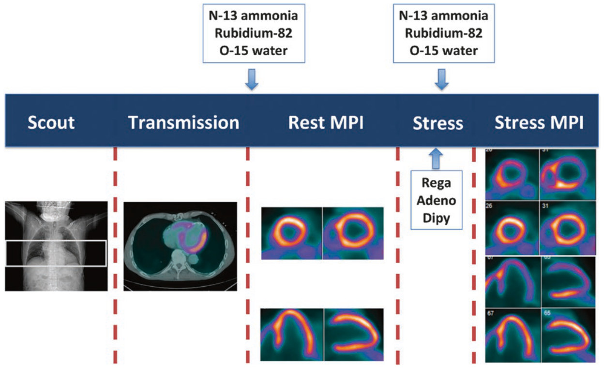
- 列表模式成像：这是使用现代PET相机时的理想且最常用的方法。在列表模式采集中，每个符合事件连同探测时间、位置信息以及心电图信息一起被记录，心电图信息可用于确定事件在心动周期中发生的时间。探测时间信息用于在采集完成后将数据以回顾性方式重建为多个时相。列表模式数据随后可以以多种不同的方式重建，包括静态或叠加图像、门控图像和多帧或动态图像。
这需要采集初始动脉期数据以生成动脉输入函数。
心肌灌注成像序列
- 静息-负荷。这是目前最常用的序列。鉴于 82Rb 和 15O-水的超短半衰期，静息与负荷成像所用剂量大致相同，无需等待首次剂量衰变后再注射负荷剂量。使用 13N-氨水时，静息与负荷采用相同剂量最为常见，但因需要等待首次剂量的放射性衰变（约 20～30 分钟），静息与负荷成像之间的间隔略长。借助现代 PET 相机，可进行低剂量静息-高剂量负荷成像而无需等待，从而显著缩短检查流程（约 35 分钟）。
负荷试验：通常采用药物负荷，最常用血管扩张剂（如腺苷、双嘧达莫或瑞加诺生），也可选用正性肌力药（即多巴酚丁胺）。如第 1.2 节所述，13N-氨水可结合运动负荷进行，未来使用 18F-flurpiridaz 时亦可实现运动负荷；而 82Rb 和 15O-水则无法进行运动负荷。需注意，目前运动负荷方案尚无法进行心肌血流的定量测定，而如上所述，心肌血流定量对诊断具有重要价值
- 负荷-静息。部分实验室先进行负荷成像，若结果正常则可避免后续的静息成像。
- 负荷-only。具体局限见上文。该方案或许最适合接受运动负荷 PET 心肌灌注成像的患者。
Flow Using PET: SNMMI 心血管委员会与 ASNC 联合立场文件。《核心脏病学杂志》2018;25(1):269–297. Dilsizian V, Bacharach SL, Beanlands RS 等. ASNC 影像指南/SNMMI 正电子发射断层扫描（PET）核心脏病学操作规范。《核心脏病学杂志》(2016);23:1187–1226.
扩展阅读
Murthy, V. L., Bateman, T. M., Beanlands, R. S., Berman, D. S., Borges-Neto, S., Chareonthaitawee, P. Corbett, J. R. (2017). Clinical Quantification of Myocardial Blood Flow Using PET: Joint Position Paper of the SNMMI Cardiovascular Council and the ASNC. Journal of Nuclear Cardiology, 25(1), 269–297.
Dilsizian, V., Bacharach, S.L., Beanlands, R.S. et al. ASNC imaging guidelines/SNMMI procedure standard for positron emission tomography (PET) nuclear cardiology procedures. Journal of Nuclear Cardiology (2016); 23: 1187–1226. M. F. Di Carli et al. 1.3 Examples of Studies with 13N-Ammonia; 82Rubidium and 15O-Water Case 1: PET MPI Using 13N-Ammonia
1.3 13N-氨水、铷-82
及15O-水成像示例
病例 1：采用13N-氨水的 PET 心肌灌注成像
History
- 男性，59 岁，患有高血压、血脂异常、糖尿病和肥胖，无已知冠状动脉疾病（CAD），因不典型心绞痛和呼吸困难转诊接受静息/负荷 N-氨水心肌灌注 PET/CT 检查以评估（图 1.2 和图 1.3）。
PET/CT 图像
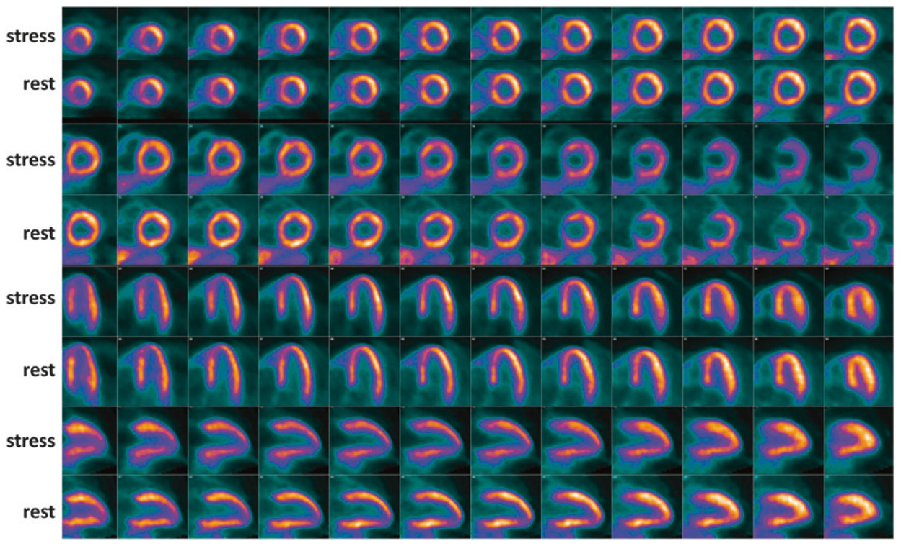
下方图：静息及 Regadenoson 负荷下各冠状动脉供血区域及整个左心室的心肌血流量（MBF）测量值（单位：mL/min/g）。同时显示心肌血流储备（负荷 MBF 与静息 MBF 之比）。结果显示所有冠状动脉供血区域及整个左心室的最大 MBF（>1.8 mL/min/g）和血流储备（>2）均正常。
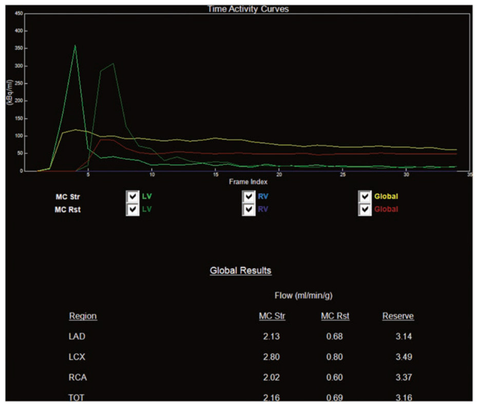
影像所见
- 静息及负荷图像显示心肌灌注正常。
- 局部及整体定量心肌血流量和血流储备均正常。
- 静息左心室射血分数（LVEF）为 59%，负荷后提高至 64%。左心室容积正常（数值未显示）。
鉴别诊断
- 阻塞性冠状动脉疾病（CAD）
- 冠状动脉微血管功能障碍
相关影像学检查
- None
处理
- 安慰与危险因素管理
延伸阅读
Murthy V, Bateman T, Beanlands R, Berman D, Borges-Neto S, Chareonthaitawee P, et al. Clinical Quantification of Myocardial Blood Flow Using PET: Joint Position Paper of the SNMMI Cardiovascular Council and the ASNC. Journal of Nuclear Cardiology. 2017;25:269–297.
Ziadi M, deKemp R, Williams K, Guo A, Renaud J, Chow B, et al. Does quantification of myocardial flow reserve using rubidium-82 positron emission tomography facilitate detection of multivessel coronary artery disease? Journal of Nuclear Cardiology. 2012;19:670–680.
Naya M, Murthy V, Taqueti V, Foster C, Klein J, Garber M, et al. Preserved Coronary Flow Reserve Effectively Excludes High-Risk Coronary Artery Disease on Angiography. Journal of Nuclear Medicine. 2014;55:248–255.
病例 2：使用 82钬的 PET 心肌灌注显像
- 定量心肌血流和血流储备（MFR：正常值 ＞2）在局部和整体均正常（图 1.5）。
History
- 72 岁男性，活动后呼吸困难
- 既往高血压、糖尿病及肥胖病史。为评估可能存在的血流受限冠状动脉疾病，被转诊行静息/负荷心肌灌注 PET/CT 检查
各冠状动脉供血区域及整个左心室在静息和 Regadenoson 负荷时的心肌血流量（MBF，单位 mL/min/g）测量值见图 1.3。图中亦显示了心肌血流储备（负荷 MBF 与静息 MBF 的比值）。
影像所见
- 静息与负荷心肌灌注图像显示无局部灌注异常（图 1.4）。
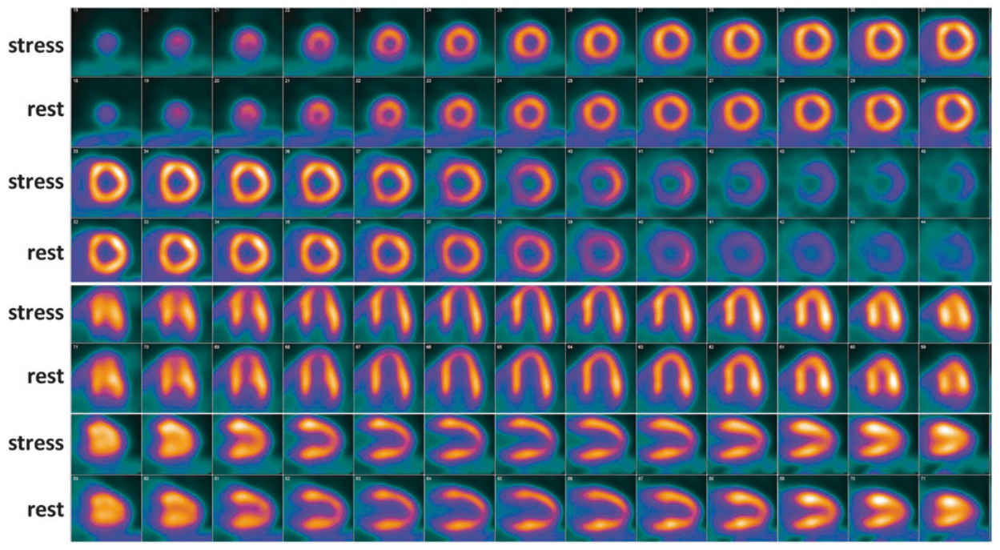
均正常
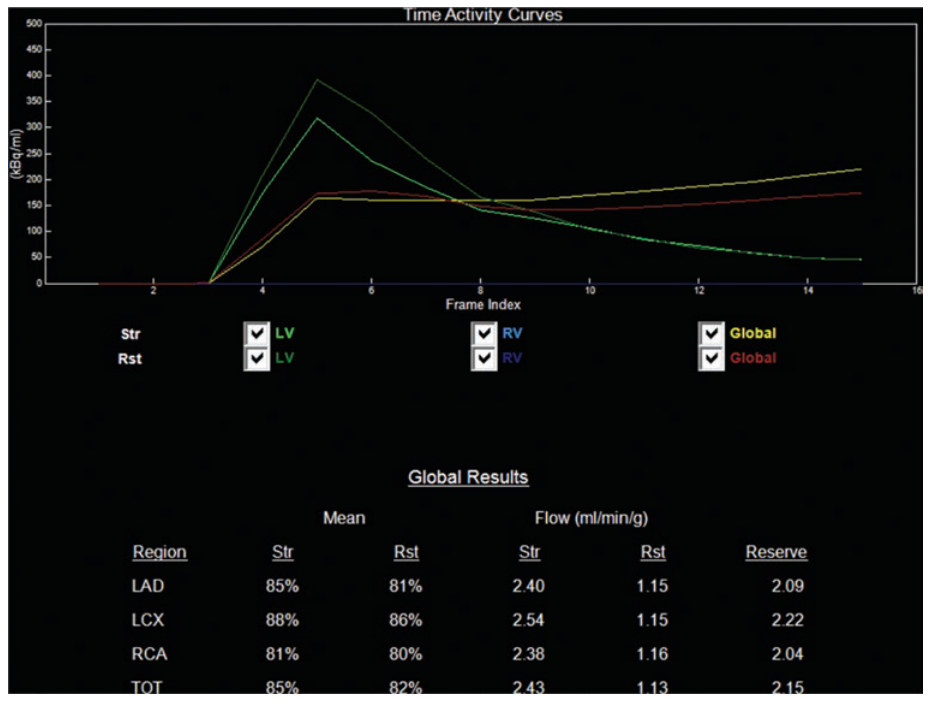
鉴别诊断
- None
相关影像学检查
- None
处理
- 安慰与危险因素管理
延伸阅读
Mc Ardle B, Dowsley T, deKemp R, Wells G, Beanlands R. Does Rubidium-82 PET Have Superior Accuracy to SPECT Perfusion Imaging for the Diagnosis of Obstructive Coronary Disease?. Journal of the American College of Cardiology. 2012;60:1828–1837.
Parker M, Iskandar A, Limone B, Perugini A, Kim H, Jones C, et al. Diagnostic accuracy of cardiac positron emission tomography versus single photon emission computed tomography for coronary artery disease: a bivariate meta-analysis. Circulation Cardiovascular Imaging. 2020;5:700–707.
Neglia D, Rovai D, Caselli C, Pietila M, Teresinska A, Aguadé-Bruix S, et al. Detection of Significant Coronary Artery Disease by Noninvasive Anatomical and Functional Imaging. Circulation: Cardiovascular Imaging. 2015;8.
Takx R, Blomberg B, Aidi H, Habets J, de Jong P, Nagel E, et al. Diagnostic Accuracy of Stress Myocardial Perfusion Imaging Compared to Invasive Coronary Angiography With Fractional Flow Reserve Meta-Analysis. Circulation: Cardiovascular Imaging. 2015;8. https://doi.org/10.1161/ CIRCIMAGING.114.002666
致谢
钬图像由
得克萨斯州休斯顿卫理公会医院的 Mouaz Al-Mallah 博士惠赠。
病例 3：使用 15O-水的 PET 心肌灌注成像
History
- 患者女性，59 岁，有高脂血症、高血压、肥胖和甲状腺功能亢进病史，因不典型心绞痛和疲劳就诊，行静息/负荷 15O-水心肌灌注 PET/CT 检查以进行评估（图 1.6 和图 1.7）。
PET/CT 图像
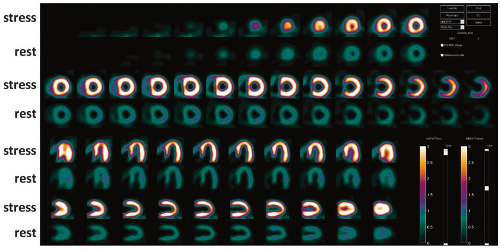
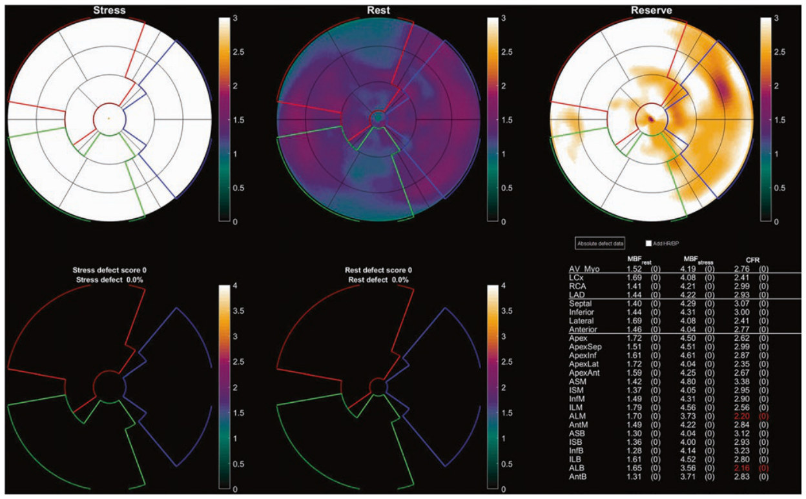
影像所见
- 静息和负荷参数化血流图像显示心肌灌注正常。参数化图像按最大血流量值进行缩放，因此负荷与静息图像之间的相对强度存在差异。
- 局部及整体定量心肌血流量和血流储备均正常。
对比有效性试验表明，与冠状动脉 CT 血管成像（无论是否联合 FFR）以及 SPECT 心肌灌注成像相比，定量 15O-水心肌灌注 PET 在诊断和排除阻塞性冠心病方面具有最高的准确性（参见推荐阅读）。
- 正常的心肌血流储备也排除了冠状动脉微血管功能障碍的可能性。
鉴别诊断 延伸阅读
- 阻塞性冠状动脉疾病（CAD）
- 冠状动脉微血管功能障碍
相关影像学检查
- None
处理
- 安慰与危险因素管理
致谢
O-水图像由以下医生提供：
Henrich Harms 医生和 Jens Sorensen 医生，瑞典乌普萨拉大学。
1.4 伪影识别与处理
1.4.1 配准不良
Case 4
History
- 患者男性，57 岁，无冠心病（CAD）病史，因不典型心绞痛就诊，行静息/负荷心肌灌注 PET/CT 检查以进行评估（图 1.8 和图 1.9）。
PET/CT 图像
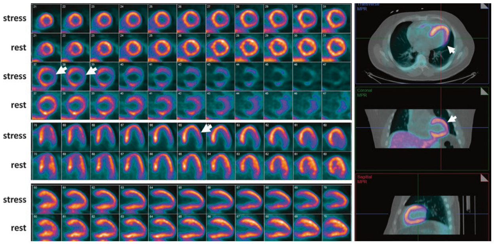
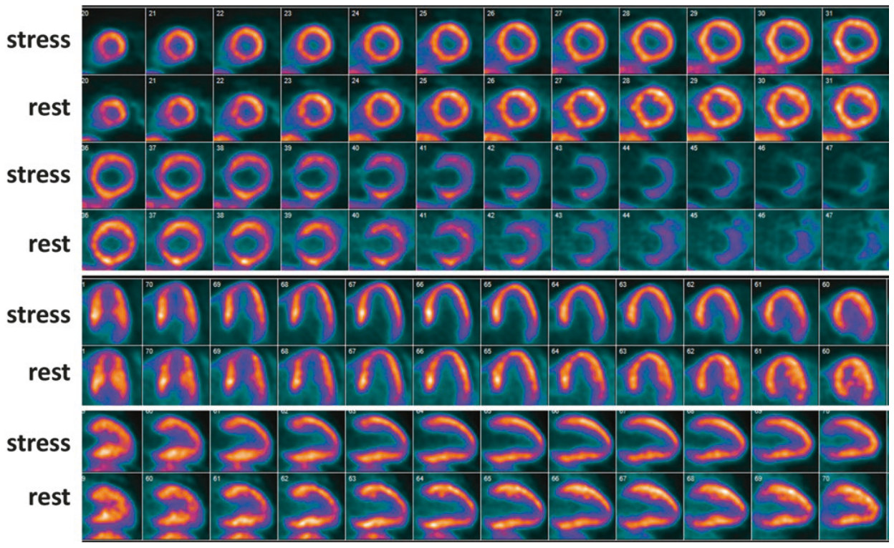
所见
- 原始重建的负荷图像显示前外侧壁存在中等大小、严重程度的灌注缺损（箭头），呈完全可逆性。
- 然而，检查融合的发射/CT 透射图像时发现两组数据之间存在错位，在 CT 图像上前外侧壁与肺野相重叠。
- 纠正发射/CT 透射图像错位后，灌注缺损消失，扫描结果恢复正常。
鉴别诊断
- 单支血管心肌缺血的阻塞性冠心病
相关影像学检查
- None
处理
- 安慰与危险因素管理
延伸阅读
Bettinardi V, Gilardi MC, Lucignani G, Landoni C, Rizzo G, Striano G, 等. PET 心脏检查中患者重新定位及补偿透射与发射数据之间不对位的操作方法. Journal of Nuclear Medicine. 1993;34:137–42. McCord ME, Bacharach SL, Bonow RO, Dilsizian V, Cuocolo A, Freedman N. PET 透射扫描与发射扫描之间的不对位：其对心肌成像的影响. Journal of Nuclear Medicine. 1992;33:1209–1214.
Loghin C, Sdringola S, Gould KL. PET 心肌灌注成像中由衰减-发射配准错误引起的常见伪影：临床意义、原因及解决方案. Journal of Nuclear Medicine. 2004;45:1029–39.
1.4.2 心脏运动伪影
采集期间对左心室运动的质量检查显示静息时左心室腔充盈过程中左心室下移，负荷研究中心肌壁上移（图 1.11）。校正患者运动后，MBF 和 MFR 值均恢复正常（表 1.1）。
Case 5
History
- 63 岁男性，无危险因素
- 非心源性胸痛
PET/CT 图像（图 1.10 和图 1.11）
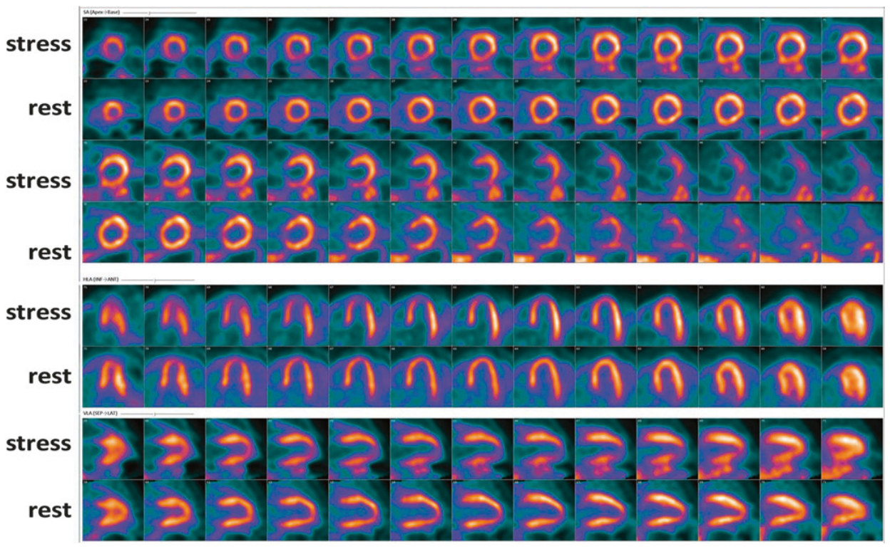
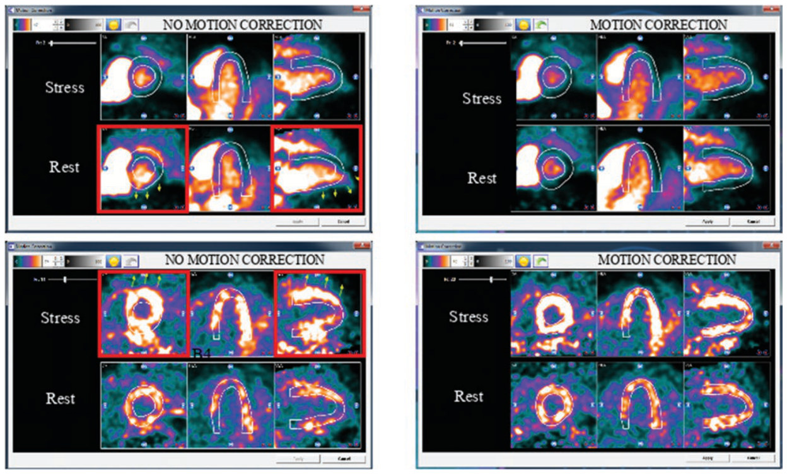
| 定量心肌血流量 | MBF 静息（ml/min/ | g） | 负荷 MBF（ml/mi | n/g） | MFR（负荷/静息） | |
|---|---|---|---|---|---|---|
| 左前降支 | 非心肌细胞 心肌细胞 | 0.76 0.70 | NMC MC | 1.87 1.96 | NMC MC | 2.46 2.79 |
| 左回旋支 | NMC MC | 1.09 0.93 | NMC MC | 2.30 2.08 | NMC MC | 2.11 2.22 |
| 右冠状动脉 | NMC MC | 1.53 0.55 | NMC MC | 1.75 1.77 | NMC MC | 1.15 3.21 |
| 左心室整体 | NMC MC | 0.85 0.71 | NMC MC | 1.97 1.95 | NMC MC | 2.31 2.73 |
MBF 心肌血流量，MFR 心肌血流储备，NMC 未行运动校正，MC 行运动校正
所见
- 运动校正后重建的图像显示数值处于正常范围内。
- 在原始重建图像中，MPI 显示下壁心尖段存在轻度可逆性灌注缺损。
- 在未行运动校正的研究中，由于静息 MBF 异常升高，RCA 供血区 MFR（瑞加诺生负荷试验）显示严重受损。
相关影像学检查
- 冠状动脉造影显示冠状动脉解剖正常（图 1.12）
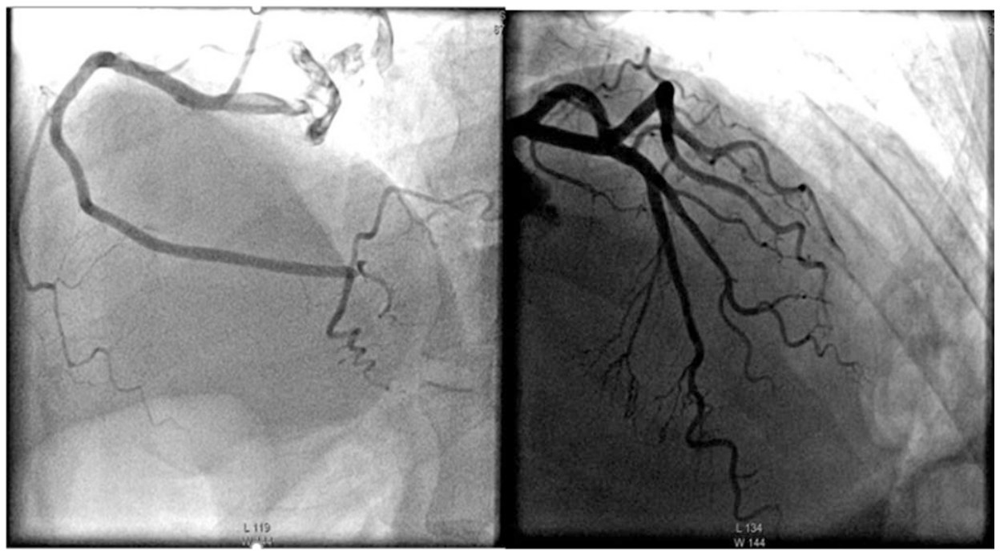
鉴别诊断 延伸阅读
- 单支血管心肌缺血的阻塞性冠心病
Vleeming E, Lazarenko S, van der Zant F, Pan X, Declerck J, Wondergem M, 等. 腺苷与瑞加德生负荷期间的心脏位移：13N-氨水心肌灌注 PET/CT 比较. Journal of Nuclear Medicine Technology. 2017;46:114–122. Schleyer P, O’Doherty M, Barrington S, Morton G, Marsden P. NH3 PET-CT 心肌灌注成像中呼吸运动校正方法的比较. Nuclear Medicine Communications. 2013;34:1174–1184.
处理
- 安抚患者及危险因素管理
Case 6
History
- 一例 62 岁女性，伴肥胖和 HIV 感染，因不典型心绞痛和呼吸困难转行静息/负荷心肌灌注 PET/CT 检查（图 1.13 和图 1.14）。
PET/CT 图像
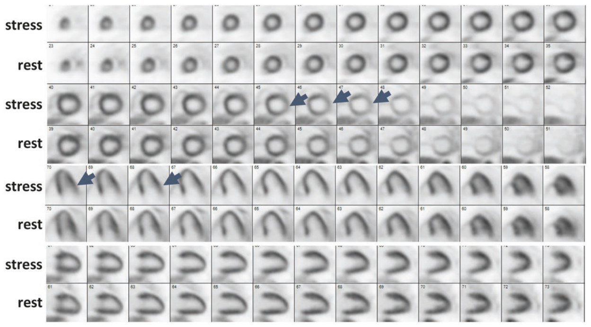
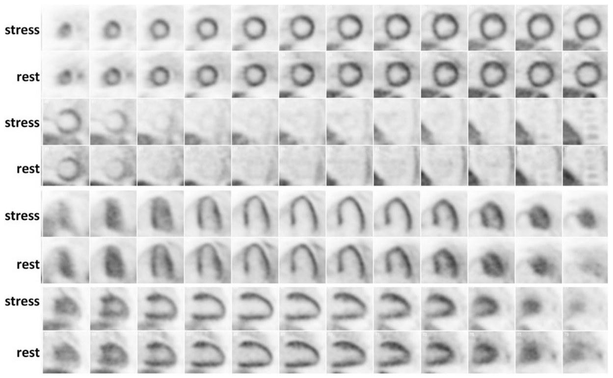
影像所见
- 负荷叠加图像显示侧壁模糊，并见明显的灌注缺损（箭头）。
- 然而，舒张末期图像显示局部心肌灌注正常。
鉴别诊断 拓展阅读
- 阻塞性冠状动脉疾病（CAD）
相关影像学检查
- None
处理
- 安慰与危险因素管理
Di Carli M, Dorbala S, Meserve J, El Fakhri G, Sitek A, Moore S. 临床心肌灌注 PET/CT. Journal of Nuclear Medicine. 2007;48:783–793.
1.4.3 氨水外侧壁缺损
Case 7
History
- 40 岁女性。
- 无症状。无心血管危险因素。术前评估（肾脏捐献者）。
PET/CT 图像（图 1.15）
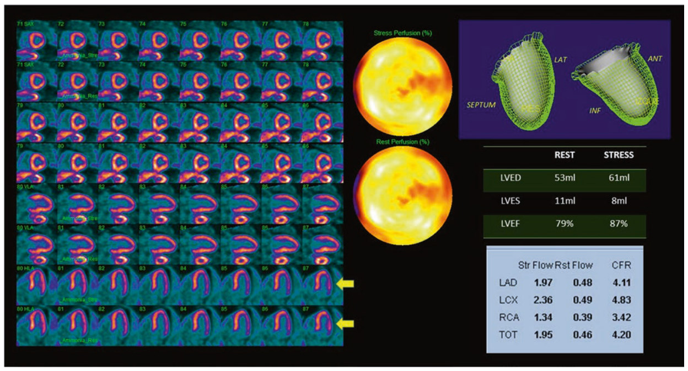
影像所见 鉴别诊断
- 静息及负荷状态下左心室侧壁灌注减低。
- 回旋支供血区域的缺血性疾病
- 室壁增厚正常，左心室功能正常，静息 LVEF 为 79%，负荷峰值时升至 87%；MBF 与 MFR。
相关影像
- 冠状动脉计算机断层扫描（图 1.16）
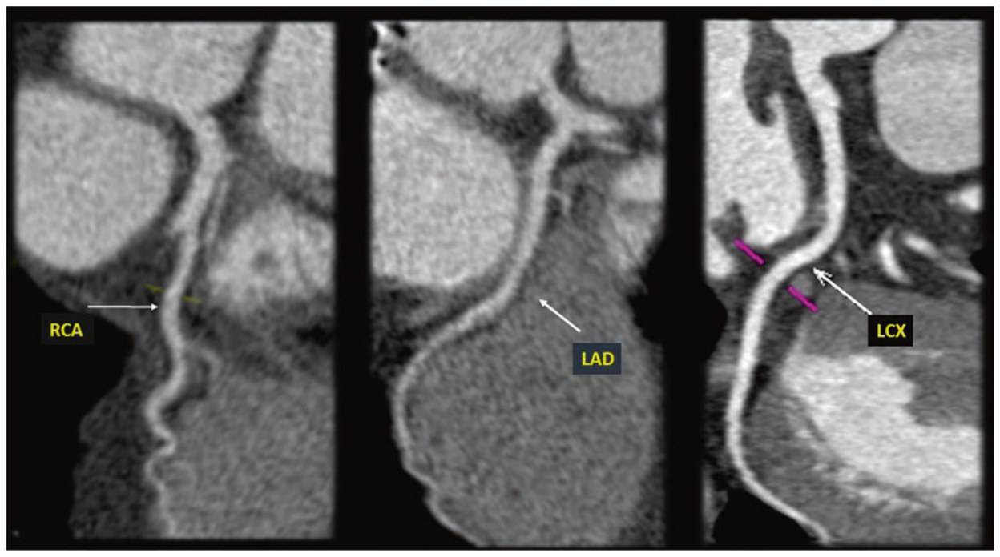
处理 拓展阅读
- 无
Klingensmith W, Noonan C, Goldberg J, Buchwald D, Kimball J, Manson S. 健康成人中 N-氨水 PET/CT 检查左室侧壁灌注减低的评估. Journal of Nuclear Medicine Technology. 2009;37:215–219. Nakazato R, Berman D, Alexanderson E, Slomka P. PET 心肌灌注成像. Imaging in Medicine. 2013;5:35–46.
1.4.4 冠状动脉
血管扩张剂无反应者
- 57 岁时，对多支血管行 PCI，NH PET/CT 用于评估残余缺
- aemia
病例 8 PET/CT 影像 病史
- 67 岁男性，2 型糖尿病
- 危险因素：高脂血症、高血压
- 35 岁时行多支血管 CABG 血运重建
- 首次研究显示负荷和静息灌注均正常，但 MFR 值降低（图 1.17）。
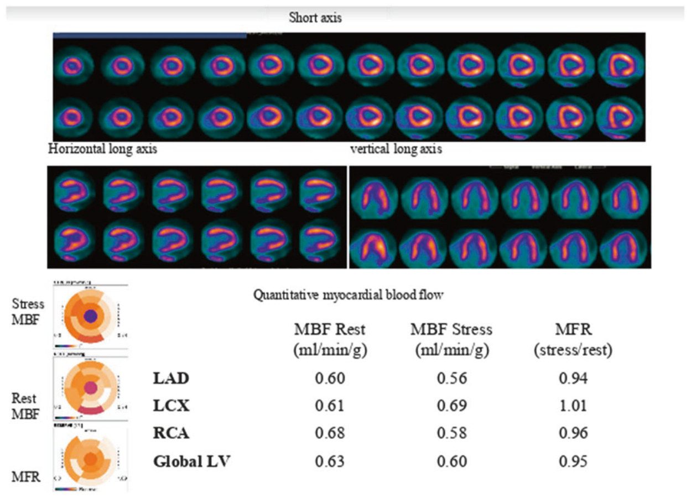
在完成影像检查后询问患者时，其承认在负荷试验前 30 分钟曾饮用一杯咖啡，尽管在登记时已给予了详细说明。
在再次嘱咐患者避免摄入咖啡因后重复该检查（图 1.18）。
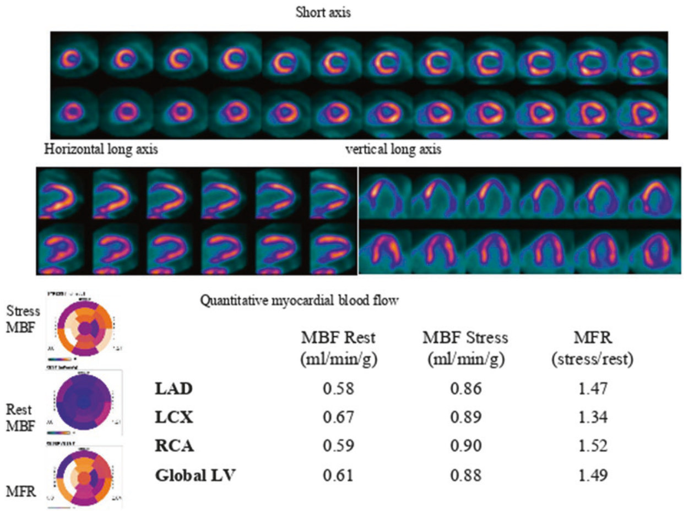
影像所见
- 工作人员应在登记处询问患者是否遵守了相关注意事项。
- 首次 MPI 未见可逆性灌注缺损
- 双嘧达莫输注后无血流储备
- 因摄入咖啡因而判定为假阴性
延伸阅读
Kitkungvan D, Bui L, Johnson N, Patel M, Roby A, Vejpongsa P, et al. Quantitative myocardial perfusion positron emission tomography and caffeine revisited with new insights on major adverse cardiovascular events and coronary flow capacity. European Heart Journal - Cardiovascular Imaging. 2019;20:751–762.
Dorbala S, Ananthasubramaniam K, Armstrong I, Chareonthaitawee P, DePuey E, Einstein A, et al. Single Photon Emission Computed Tomography (SPECT) Myocardial Perfusion Imaging Guidelines: Instrumentation, Acquisition, Processing, and Interpretation. Journal of Nuclear Cardiology. 2018;25:1784–1846.
处理
- 再次交代避免咖啡因后复查本研究
缺血性心脏病的评估
缺血性心脏病的评估
Marcelo F. Di Carli, Raffaele Giubbini, P. Raggi, V. Singh, D. Albano, L. Camoni, M. Bertoli, C. Rodella, Maurizio Dondi, R. Endozo, A. Thornton, and Diana Paez
在过去十年中，PET/CT 混合成像在缺血性心脏病中的应用——整合 PET 与 CT 信息——不断增长，主要得益于其量化心肌灌注的能力，可用于评估心肌血流量（MBF）及心肌血流储备（MFR）。该特点使 PET/CT 成为检测多支冠状动脉病变的最佳技术，而在因 SPECT 固有的局限性而难以发现平衡型缺血的情况下尤为突出。此外，这些混合成像系统的 CT 部分还可用于计算冠状动脉钙化评分（ChACS）以及通过冠状动脉 CT 血管成像（CCTA）显示心外膜冠状动脉。因此，PET/CT 在冠心病的诊断与管理中具有巨大潜力。本章将介绍多个临床病例，展示其在缺血性心脏病中的多种临床应用。
2.1 缺血性心脏病的多参数评估
如第 1.3 节所述，所有现代 PET 断层扫描仪现已与 CT 扫描仪组合为混合 PET/CT 一体机。该集成系统的各组件提供
M. F. Di Carli Brigham and Women’s Hospital, 波士顿, 马萨诸塞州, 美国 电子邮箱：mdicarli@bwh.harvard.edu
R. Giubbini · D. Albano · L. Camoni 意大利布雷西亚大学核医学科 e-mail: raffaele.giubbini@unibs.it; domenico.albano@unibs.it; luca.camoni@unibs.it
P. Raggi 加拿大艾伯塔省埃德蒙顿市阿尔伯塔大学心脏内科
V. Singh 美国密苏里州堪萨斯城 HCA Midwest Health 中西部心脏与血管专科 e-mail: vasvi.singh@hcahealthcare.com
为已知或疑诊冠心病的患者评估提供独特且全面的定量信息（图 2.1a–d）。
在汇总的心肌灌注图像上，局部灌注缺损的
范围与严重程度可用于勾勒局灶性冠状动脉病变的范围与严重程度（图 2.1a）。局部心肌灌注通常通过对静息和负荷图像的半定量视觉分析进行评估。各节段的评分随后汇总为总体评分，反映局部及整体缺血和/或瘢痕的总负担。客观定量图像分析是更准确、可重复地评估缺损总范围与严重程度的有力工具，通常与半定量视觉分析联合应用。缺血与瘢痕的半定量（视觉）与定量评分与不良心血管事件风险呈线性相关，有助于指导患者管理，特别是血运重建的必要性，并可用于评估药物治疗的疗效。通过心电图门控心肌灌注图像采集，可对局部及整体收缩功能和左心室容积进行定量（图 2.1b）。PET 心电图门控图像通常在静息和负荷峰值时采集。负荷试验过程中 LVEF 下降始终提示异常。
M. Bertoli 意大利布雷西亚 Spedali Civili 核医学科 e-mail: mattia.bertoli@asst-spedalicivili.it
C. Rodella 意大利布雷西亚 Spedali Civili 医学物理科 e-mail: carlo.rodella@asst-spedalicivili.it
M. Dondi (*) · D. Paez 维也纳，国际原子能机构，人类健康部门 邮箱：d.paez@iaea.org
R. Endozo · A. Thornton 英国伦敦大学学院医院核医学研究所 e-mail: raymond.endozo@nhs.net; andrew.thornton11@nhs.net
异常反应，并有助于识别高风险
应在所有无已知 CAD、接受心肌灌注 PET/CT 成像检查的患者中予以评估并报告。
多支病变 CAD 患者。心肌血流量定量（单位 mL/
用于评估冠状动脉钙化的心电门控 CT 扫描是一种可重复、易于实施的方法，可在不使用静脉对比剂的情况下可靠地判断冠状动脉钙化的存在或缺失（图 2.1c）。冠状动脉钙化的范围和程度可通过经验证的评分技术（如 Agatston 评分）进行定量。用于 PET 数据衰减校正的非门控 CT 透射扫描也可通过半定量视觉分析来评估冠状动脉钙化程度。鉴于动脉粥样硬化负荷评估在指导强化预防性治疗方面具有明显的临床相关性，应进行正式的 CAC 评分或至少对 CAC 进行半定量评估
tion（图 2.1c）。冠状动脉钙化的范围和严重程度
可通过经验证的评分技术（如 Agatston 评分）进行定量。用于 PET 数据衰减校正的非门控 CT 透射扫描也可通过半定量视觉分析来评估冠状动脉钙化的程度。鉴于动脉粥样硬化负荷评估在指导强化预防性治疗方面具有明显的临床相关性，应进行正式的 CAC 评分或至少对 CAC 进行半定量评估
心肌每克每分钟）及心肌血流储备
（定义为负荷与静息状态下心肌血流量的最大比值）是反映弥漫性动脉粥样硬化范围和严重程度的重要生理参数，也是评估多支病变 CAD 患者心肌缺血和微血管
病变（阻塞性和非阻塞性）以及微血管
功能障碍的重要生理参数，可通过对心肌灌注 PET 图像的常规后处理进行测量（图 2.1d）。如缺血性心脏病评估一节所述，这些血流和血流储备的测定在已知或疑似 CAD 患者的评估与管理中具有重要的诊断及预后价值。
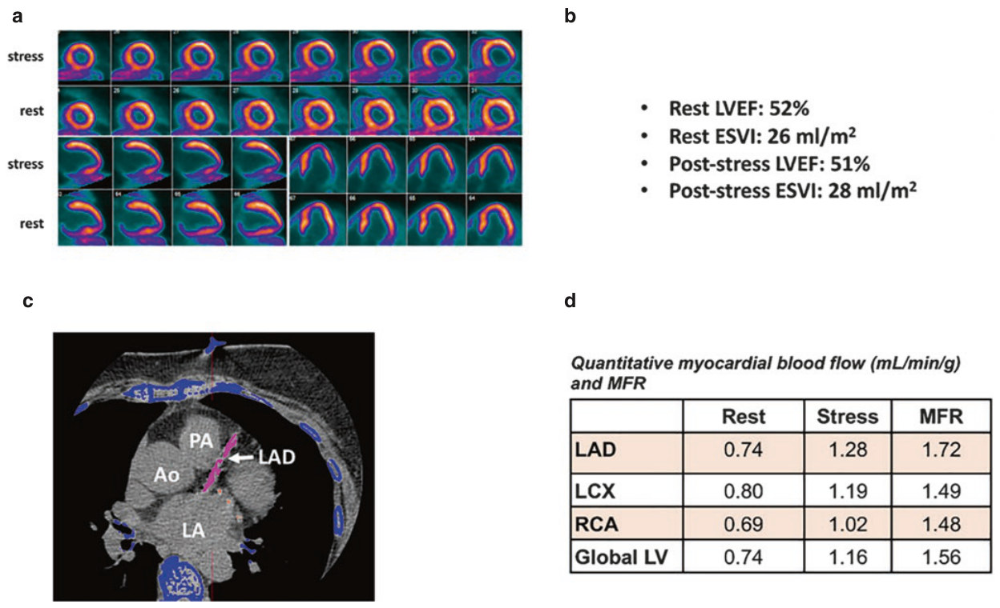
延伸阅读
tron emission tomography myocardial perfusion imaging identifies patients with a survival benefit from early revascularization. European Heart Journal. 2019;41:751–759. Einstein AJ, Johnson LL, Bokhari S, Son J, Thompson RC, Bateman TM 等. 通过低剂量 CT 衰减校正扫描在 PET/CT 和 SPECT/CT 融合成像中对冠状动脉钙化积分的视觉评估与标准 Agatston 评分的一致性. J Am Coll Cardiol. 2010 Nov 30;56(23):1914–21. https://doi.org/10.1016/j. jacc.2010.05.057. Di Carli M, Hachamovitch R. 无创评估冠状动脉疾病的新技术。Circulation. 2007;115:1464–1480.
Murthy V, Bateman T, Beanlands R, Berman D, Borges-Neto S, Chareonthaitawee P, 等. PET 临床定量测定心肌血流量：SNMMI 心血管委员会与 ASNC 联合立场声明。Journal of Nuclear Cardiology. 2017;25:269–297.
Patel K, Spertus J, Chan P, Sperry B, Al Badarin F, Kennedy K, 等. 通过正电子发射断层扫描评估的心肌血流储备对冠状动脉疾病预后的影响：系统性综述。
2.2 无症状患者
2.2.1 中-高临床风险：高 CACS
Case 9
History
- 58 岁男性，有高脂血症、高血压、2 型糖尿病病史，因眩晕、恶心、多汗入院急诊
- 超声心动图：左心室轻度肥厚，瓣膜轻度纤维化，左心室功能正常
- 运动 ECG 在达最大预测心率 80% 时未见缺血表现
- 既往 CTA 显示 Agatston 评分 = 956，并见多处狭窄性病变（图 2.2）
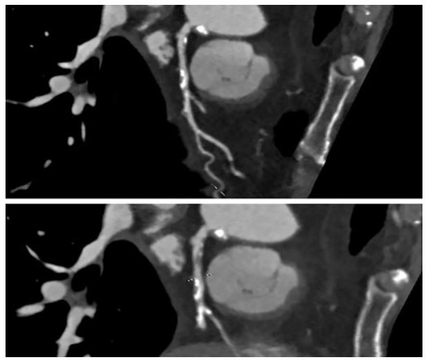
- 因评估是否存在具有功能意义的冠心病而接受心肌灌注 PET 检查（图 2.3）
同时计算心肌血流量（MBF）和心肌血流储备（MFR）（表 2.1）。结合 CCTA 和 PET 检查，确认前降支供血区域心肌灌注基本正常（图 2.4）。
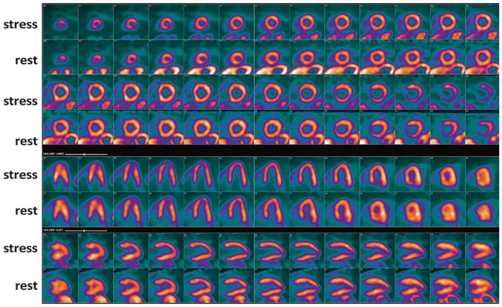
| 静息（ml/min/g） | 负荷（ml/min/g） | 心肌血流储备（负荷/静息） | |
|---|---|---|---|
| LAD | 0.72 | 2.46 | 3.43 |
| LCX | 0.88 | 2.71 | 3.10 |
| RCA | 0.75 | 2.22 | 2.97 |
| 左心室整体 | 0.76 | 2.46 | 3.23 |
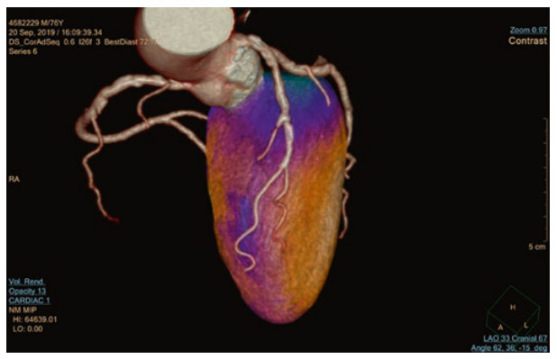
所见
- 局部心肌灌注正常。
- 在三支冠状动脉供血区域内，瑞加诺松负荷后 MBF 与 MFR 均正常。
- CCTA/PET 融合图像证实 LAD 供血区域灌注基本正常。
处理决策
- 高危患者，有最佳药物治疗（OMT）指征，未行有创冠状动脉造影（ICA）。
延伸阅读
Santana C, Garcia E, Faber T, Sirineni G, Esteves F, Sanyal R, et al. Diagnostic performance of fusion of myocardial perfusion imaging (MPI) and computed tomography coronary angiography. Journal of Nuclear Cardiology. 2009;16:201–211.
Gaemperli O, Schepis T, Kalff V, Namdar M, Valenta I, Stefani L, et al. Validation of a new cardiac image fusion software for three-dimensional integration of myocardial perfusion SPECT and stand-alone 64-slice CT angiography. European Journal of Nuclear Medicine and Molecular Imaging. 2007;34:1097–1106.
Piccinelli M, Santana C, Sirineni G, Folks R, Cooke C, Arepalli C, et al. Diagnostic performance of the quantification of myocardium at risk from MPI SPECT/CTA 2G fusion for detecting obstructive coronary disease: A multicenter trial. Journal of Nuclear Cardiology. 2018;25:1376–1386. Table 2.1 Normal MBF and MFR after Regadenoson in all three coronary vascular territories Rest (ml/min/g) Stress (ml/min/g) MFR (stress/rest) LAD 0.72 2.46 3.43 LCX 0.88 2.71 3.10 RCA 0.75 2.22 2.97 Global LV 0.76 2.46 3.23
2.2.2 临床中高危：既往检查异常
Case 10
History
- 一例 75 岁无症状男性，既往心肌灌注 SPECT 检查异常（图 2.5）后（图 2.5），为在胸部手术前进行评估，被转诊接受静息/负荷心肌灌注 PET/CT 检查（图 2.6）。
SPECT 图像
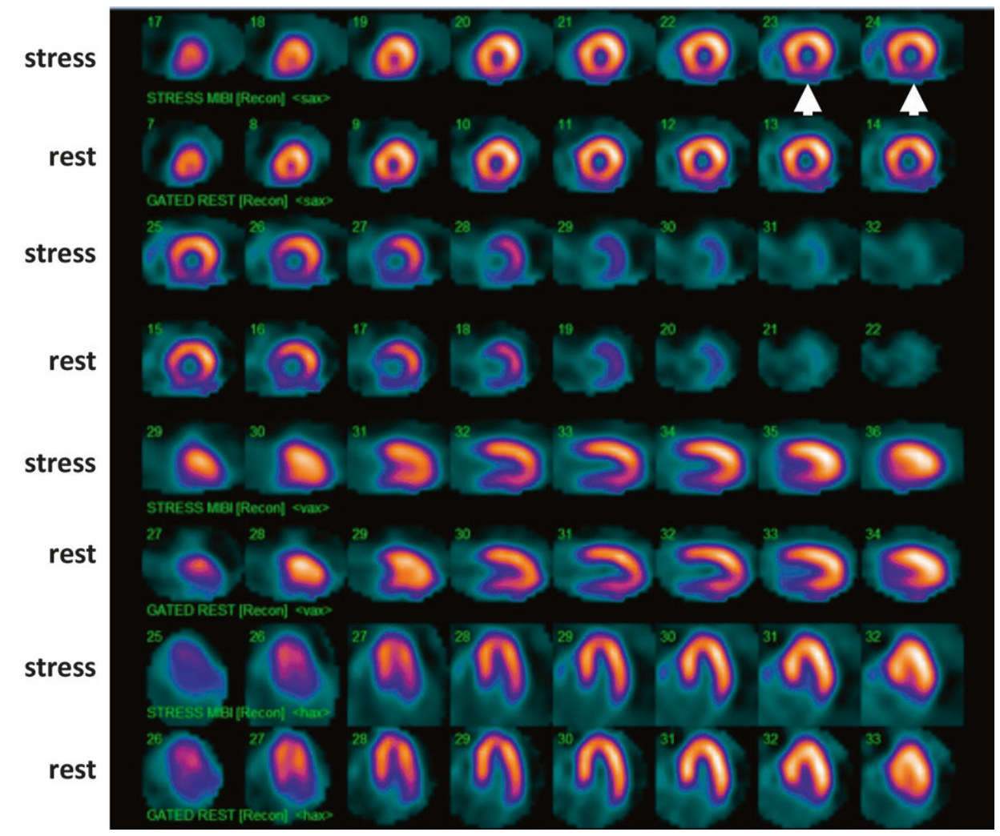
PET/CT 图像
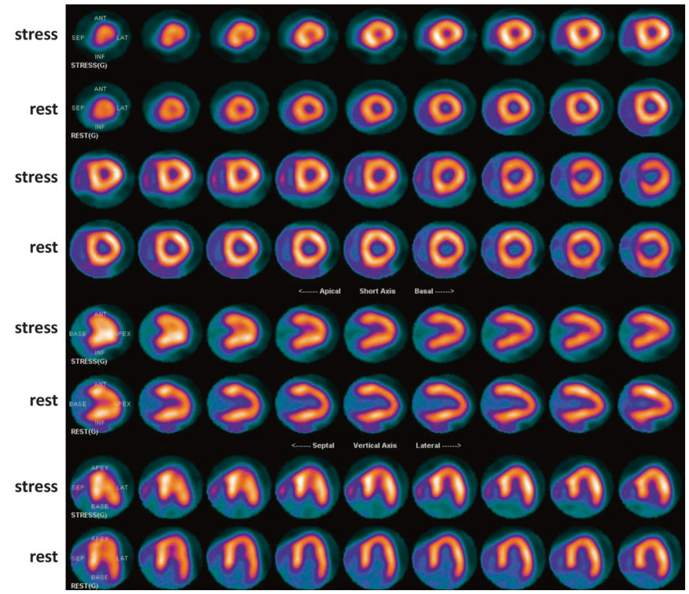
所见
- SPECT 成像上，负荷图像在下壁及基底段下间隔壁可见中等范围的灌注缺损，呈轻度可逆性。
- 心电门控图像未见异常，负荷后 LVEF 为 62%。
- PET/CT 检查完全正常，无局部灌注缺损证据。
鉴别诊断
- RCA 区域的阻塞性 CAD 伴缺血
- 心肌灌注 SPECT 上的软组织衰减可导致结果不确定和/或假阳性。
- 虽然衰减校正有助于排查这些伪影，但在实际应用中并不常规进行。最近的荟萃分析（见下文进一步阅读）显示，即使与衰减校正 SPECT 成像相比，PET 也具有更高的准确性。
- PET 成像在评估 SPECT MPI 结果不确定和/或异常的患者时具有更高的敏感度和特异度。
进一步阅读 关联成像
- None
处理
- 安慰与危险因素管理
2.3 缺血等同症状患者（心绞痛和/或呼吸困难）
- 既往冠状动脉造影示 RCA 狭窄（图 2.7）
- 转诊行 PET/CT 评估缺血负荷（图 2.8）并定量测定 MFR（表 2.2）及心功能（表 2.3）
2.3.1 单支血管 MPI 异常且 LVEF 正常，伴单支血管 MFR 异常
Case 11
History
- 78 岁男性，典型心绞痛
- 危险因素：高脂血症、高血压
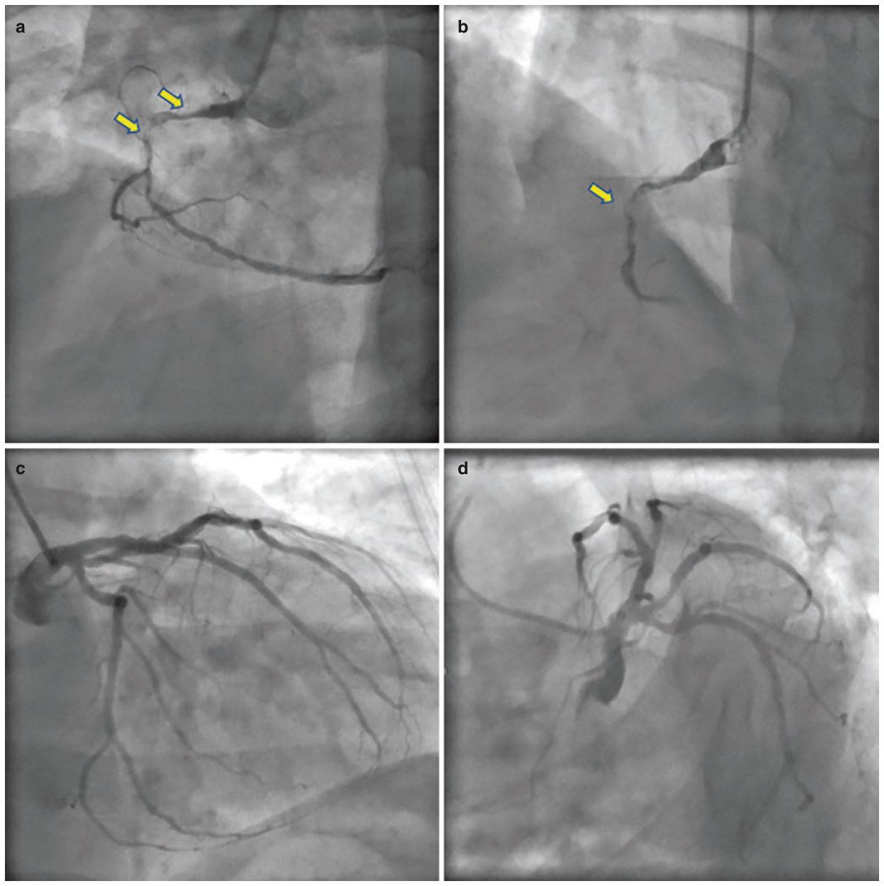
PET/CT 图像
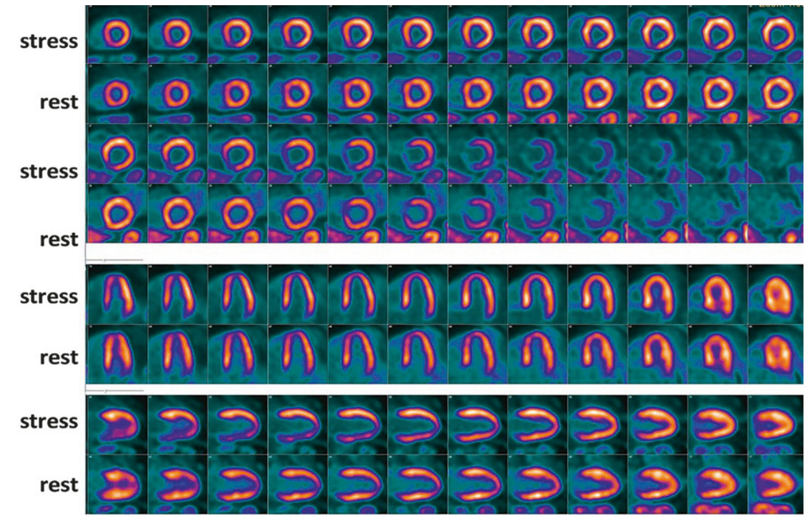
| 静息 (ml/min/g) | 负荷 (ml/min/g) | MFR（负荷/静息） | |
|---|---|---|---|
| LAD | 0.77 | 1.83 | 2.37 |
| LCX | 0.84 | 1.98 | 2.43 |
| RCA | 0.86 | 1.38 | 1.74 |
| 左心室整体 | 0.82 | 1.75 | 2.22 |
| 舒张末期容积 | 收缩末期容积 | 射血分数 | 瞬时舒张差异 | 左室质量 | |
|---|---|---|---|---|---|
| Rest | 110 ml | 39 ml | 65% | 153 g | |
| 血管舒张 | 137 ml | 47 ml | 66% | – | 172 g |
影像所见 关联成像
- MPI：RCA 供血区域可逆性灌注缺损（图 2.8）。
- 静息 LVEF 为 65%，负荷状态下基本不变，为 66%。
- RCA 区域的负荷 MBF 和 MFR 降低。
- 冠状动脉造影
处理
- 单支血管病变，左心室功能正常。
- 可考虑行血运重建以改善患者症状。
鉴别诊断 拓展阅读
- None
Case 12
该患者还接受了 PET 图像与 CCTA 的融合显像（图 2.10a，b）
History
- 一名 64 岁女性既往吸烟者，因不典型胸痛转诊行 PET/CT 检查（图 2.9 及
- 她没有其他任何冠心病危险因素。
PET/CT 图像
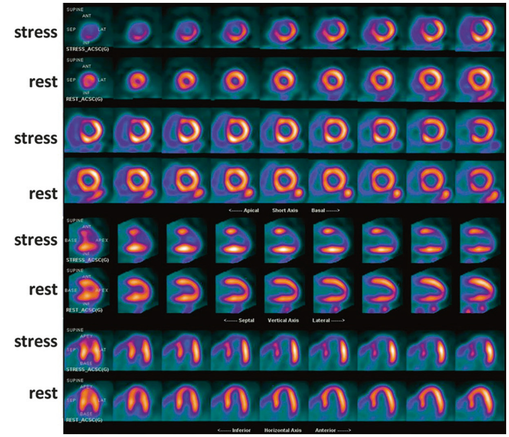
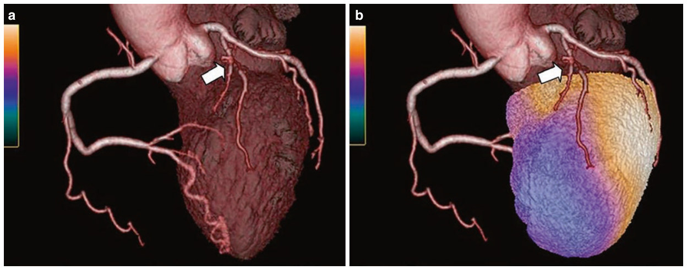
| 静息 (mL/min/g) | 负荷 (mL/min/g) | 心肌血流储备 | |
|---|---|---|---|
| LAD | 1.30 | 2.05 | 1.58 |
| LCX | 1.39 | 3.05 | 2.19 |
| RCA | 1.19 | 2.35 | 2.09 |
| 整体 LV | 1.30 | 2.39 | 1.97 |
影像所见
- PET 图像显示左心室大小正常，左心室中部前间隔壁、心尖段及心尖部可见中等大小的重度灌注缺损，且具有完全可逆性。
- 定量血流数据提示静息时心肌血流量（MBF）较高，在负荷状态下心肌血流量良好增加，但在左前降支（LAD）供血区增加幅度较低。左前降支供血区的冠脉血流储备（MFR）减低，而左回旋支（LCX）和右冠状动脉（RCA）供血区的 MFR 保持正常。
- 冠状动脉 CTA 显示左前降支中段次全闭塞，似乎同时累及第一对角支的开口。
鉴别诊断
- 阻塞性冠心病
相关影像学
- 有创性冠状动脉造影（图 2.11）
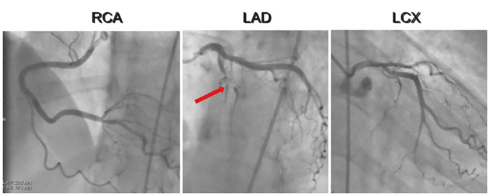
处理
What is the Future?. Journal of the American College of Cardiology. 2016;67:2772–2788. Taqueti V, Di Carli M. Coronary Microvascular Disease Pathogenic Mechanisms and Therapeutic Options: JACC State-of-the-Art Review. Journal of the American College of Cardiology. 2018;72(21):2625–2641. Ziadi M, deKemp R, Williams K, Guo A, Renaud J, Chow B, et al. Does quantification of myocardial flow reserve using rubidium-82 positron emission tomography facilitate detection of multivessel coronary artery disease?. Journal of Nuclear Cardiology. 2012;19:670–680.
- 该患者成功接受了前降支/对角支动脉 PCI 治疗。
延伸阅读
Johnson N, Gould K, Di Carli M, Taqueti V. Invasive FFR and Noninvasive CFR in the Evaluation of Ischemia: What is the Future?. Journal of the American College of Cardiology. 2016;67:2772–2788.
Taqueti V, Di Carli M. Coronary Microvascular Disease Pathogenic Mechanisms and Therapeutic Options: JACC State-of-the-Art Review. Journal of the American College of Cardiology. 2018;72(21):2625–2641.
Ziadi M, deKemp R, Williams K, Guo A, Renaud J, Chow B, et al. Does quantification of myocardial flow reserve using rubidium-82 positron emission tomography facilitate detection of multivessel coronary artery disease?. Journal of Nuclear Cardiology. 2012;19:670–680.
2.3.2 单支血管心肌灌注显像与左心室射血分数正常，
冠状动脉造影显示多支血管病变（图 2.13）。
多支血管异常伴 MFR 减低
Case 13
History
- 78 岁男性，不典型心绞痛
- 危险因素：血脂异常、高血压、既往吸烟史
- 因评估可能的心肌缺血（图 2.12）以及 MBF（表 2.5）和左心室功能（表 2.6）定量分析而接受 PET/CT 检查
PET/CT 图像
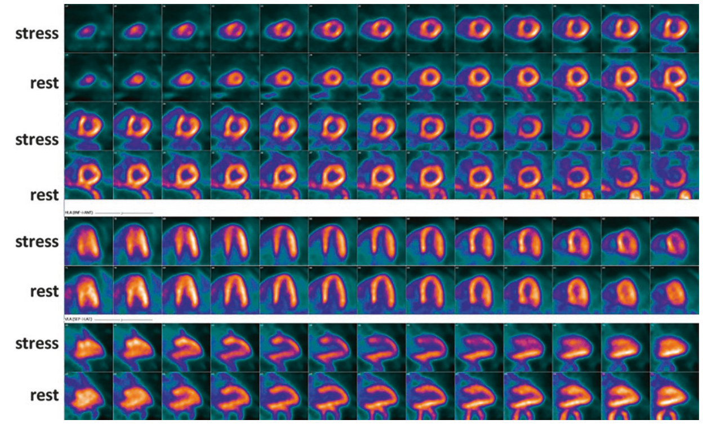
| 静息（ml/min/g） | 负荷（ml/min/g） | MFR（负荷/静息） | |
|---|---|---|---|
| LAD | 0.68 | 1.34 | 1.91 |
| LCX | 0.91 | 1.62 | 1.67 |
| RCA | 0.63 | 1.28 | 2.02 |
| 整体左心室 | 0.72 | 1.36 | 1.88 |
| EDV | ESV | EF | TID | LV mass | |
|---|---|---|---|---|---|
| 血管舒张 | 88 ml | 26 ml | 70% | 1 | 137 g |
| 静息 | 86 ml | 32 ml | 63% | 129 g |
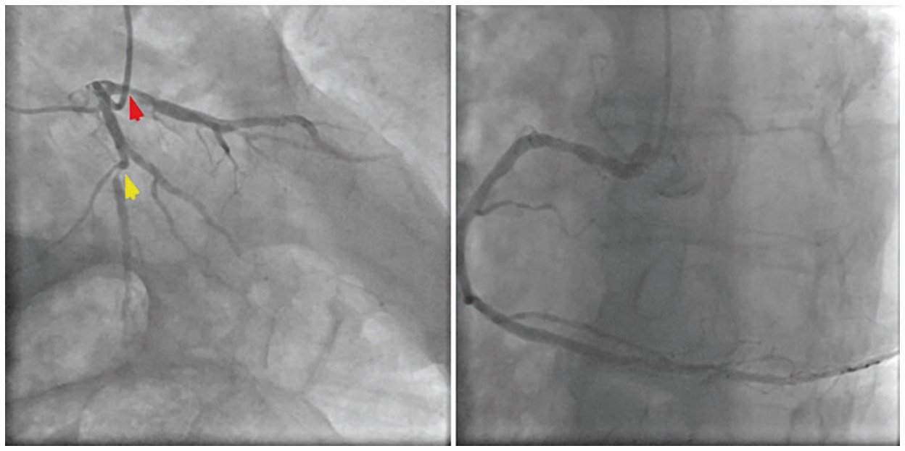
影像所见
- MPI：LAD 供血区域可逆性灌注缺损。
- 负荷 MBF 在全部 3 支血管供血区域弥漫性减低，但 MFR 仅在 LAD 和 LCX 供血区域减低。
- 门控研究显示静息时（68%）及最大血管扩张时（72%）左心室功能正常。
- 因 LAD 与 LCX 严重狭窄及 RCA 微血管功能障碍，所有血管供血区均出现整体低灌注，表现为最大 MBF 和 MFR 降低。
相关影像学
- 冠状动脉造影
处理与鉴别诊断
- 多支血管阻塞性冠状动脉疾病
拓展阅读
2.3.3 单支血管 MPI 且左心室射血分数正常，伴多支血管 MFR 异常
Case 14
History
- 65 岁男性，有肾移植病史，新发左心室功能障碍和心力衰竭，被转诊行 Regadenoson 心肌灌注 PET 检查以评估冠心病（图 2.14）、MBF 定量（表 2.7）及 CCTA（图 2.15）。
PET/CT 图像
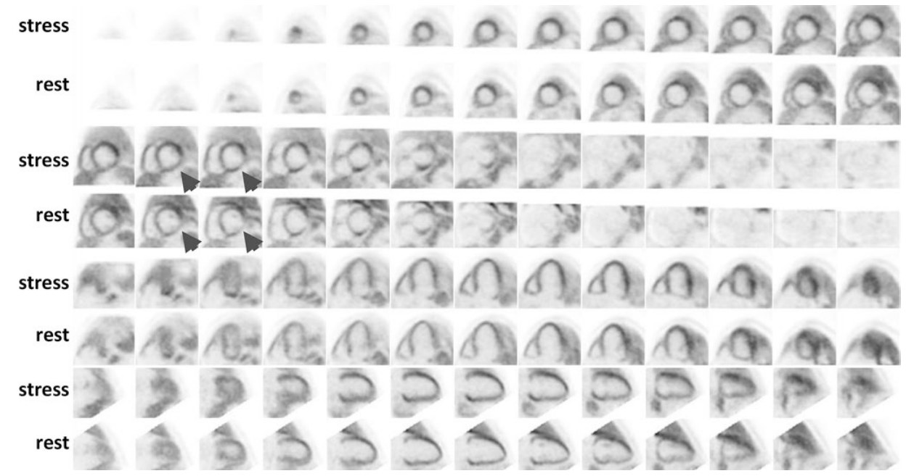
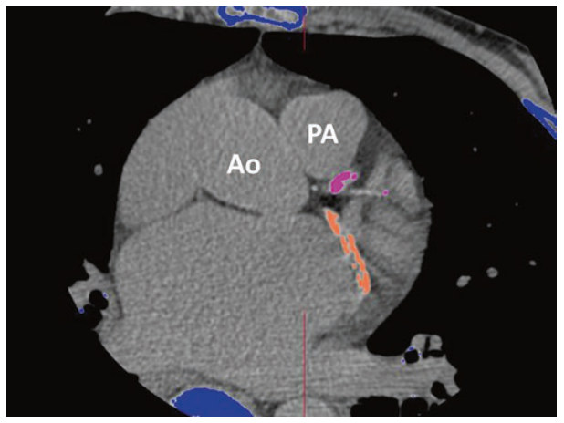
| 静息（mL/min/g） | 负荷（mL/min/g） | MFR | |
|---|---|---|---|
| LAD | 0.92 | 1.22 | 1.33 |
| LCX | 0.87 | 1.31 | 1.51 |
| RCA | 0.62 | 1.06 | 1.71 |
| globally | 0.76 | 1.20 | 1.57 |
影像所见
- 图像显示左心室明显扩大，肺摄取中度增高。同时显示右心室大小正常，但静息与负荷图像上右心室示踪剂摄取明显增高。
- 中段及基底部下侧壁存在一小范围、严重程度的固定灌注缺损。
- 左前降支近端（紫色）和左回旋支近端（橙色）冠状动脉存在严重钙化。
- 负荷状态下心肌最大血流量与血流储备无论在局部还是整体均严重减低。
- 静息态左心室射血分数为19%，心室容积严重扩大；负荷时仅轻度升高至23%。存在严重的整体性心肌运动减低。右心室功能表现正常。
鉴别诊断
- 重度阻塞性多支冠状动脉疾病。
- 冠状动脉微血管功能障碍
相关影像学检查
支，（3）左回旋支（LCX）动脉轻微不规则，以及右冠状动脉（RCA）近端 30% 狭窄（图 2.16）。
- 有创冠状动脉造影示：（1）左前降支（LAD）动脉轻微不规则；（2）第一、第二及第三对角支弥漫性病变；
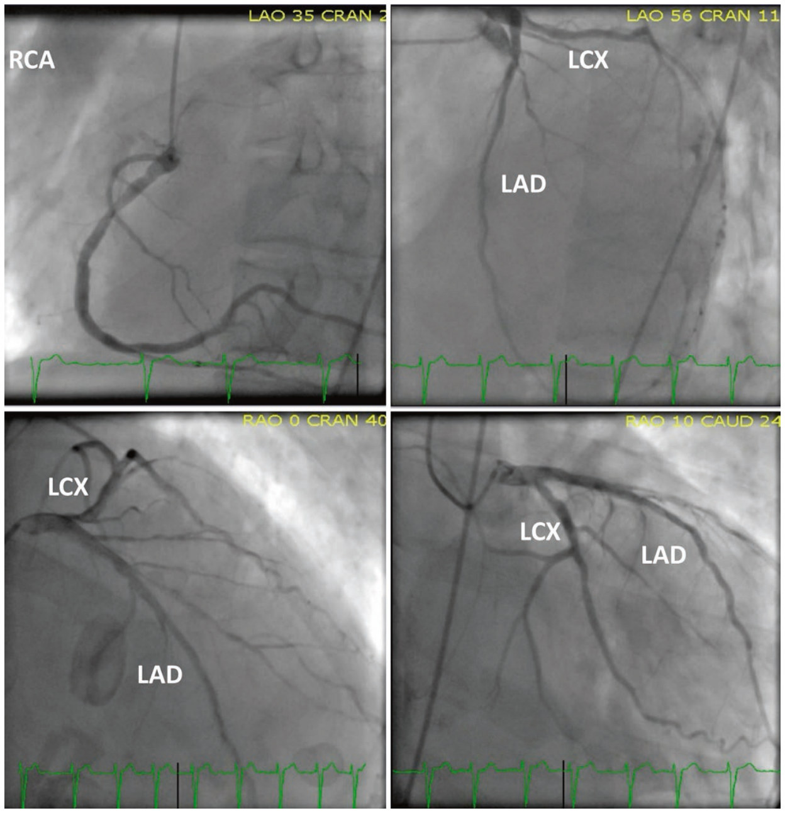
处理 拓展阅读
- 针对心力衰竭和心肌缺血的药物治疗，以及积极的危险因素管理
Johnson N, Gould K, Di Carli M, Taqueti V. Invasive FFR and Noninvasive CFR in the Evaluation of Ischemia: What is the Future?. Journal of the American College of Cardiology. 2016;67:2772–2788. Taqueti V, Di Carli M. Coronary Microvascular Disease Pathogenic Mechanisms and Therapeutic Options: JACC State-of-the-Art Review. Journal of the American College of Cardiology. 2018;72(21):2625–2641. Ziadi M, deKemp R, Williams K, Guo A, Renaud J, Chow B, et al. Does quantification of myocardial flow reserve using rubidium-82 positron emission tomography facilitate detection of multivessel coronary artery disease?. Journal of Nuclear Cardiology. 2012;19:670–680.
Case 15
此外还完成了 CCTA 检查并与 PET 进行融合（图 2.18）。
History
- 一例52岁男性患者，既往有高胆固醇血症、HIV、乙型肝炎及Burkitt淋巴瘤病史，伴典型心绞痛，接受心肌灌注PET检查（图 2.17），并定量测定心肌血流量（表 2.8）。
PET 图像
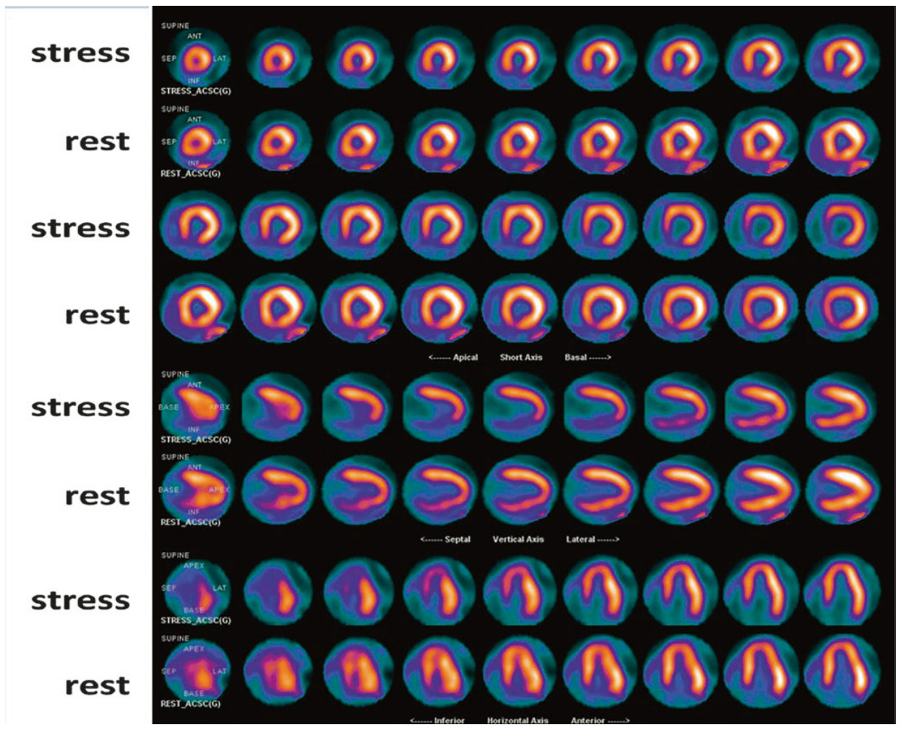
| 静息（mL/min/g） | 负荷（mL/min/g） | MFR | |
|---|---|---|---|
| LAD | 0.49 | 1.20 | 2.47 |
| LCX | 0.47 | 1.06 | 2.17 |
| RCA | 0.46 | 0.53 | 1.17 |
| 整体 | 0.48 | 1.00 | 2.08 |
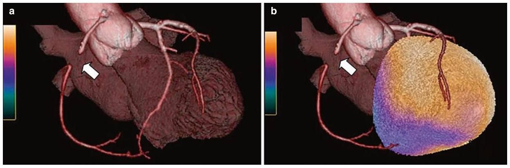
所见
- 心肌灌注 PET 图像示下壁全程一中等大小、严重程度的灌注缺损，呈完全可逆性。
- 定量血流数据显示，所有冠状动脉供血区域负荷 MBF 呈弥漫性严重降低，仅 RCA 供血区 MFR 出现局灶性降低。
- 融合 PET/CCTA 数据证实 RCA 完全闭塞的存在，与灌注缺损及负荷 MBF 和 MFR 降低相对应。
- LAD 与 LCX 供血区域负荷 MBF 降低但 MFR 保留，与该血管存在弥漫性冠状动脉钙化相符。
鉴别诊断
- 阻塞性冠状动脉疾病
- 弥漫性非阻塞性动脉粥样硬化
- 冠状动脉微血管功能障碍
相关影像学检查
- 有创冠状动脉造影证实存在右冠状动脉完全闭塞（图 2.19）。
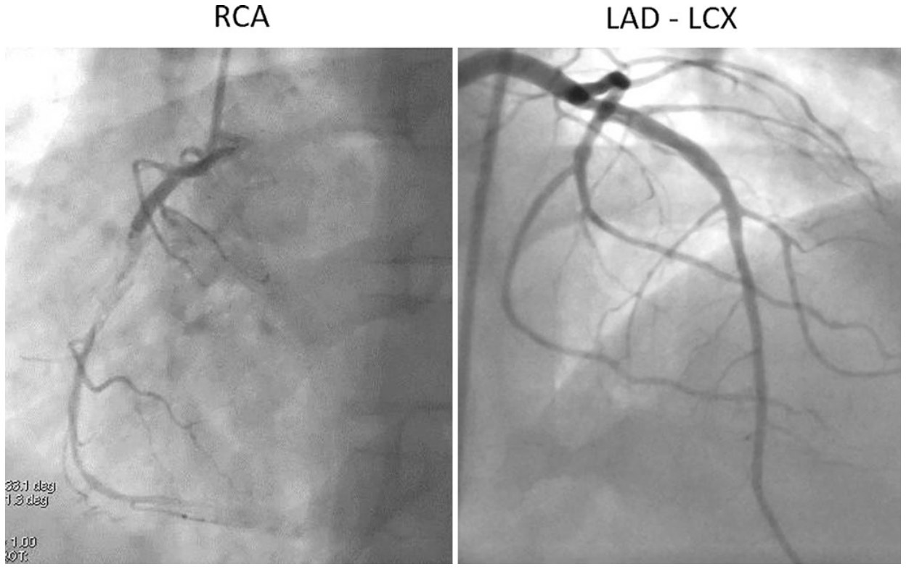
处理
LAD 与 LCX 动脉的弥漫性钙化部分解释了负荷 MBF 的降低。
- 该患者接受了 RCA 完全闭塞的再通治疗。
延伸阅读
2.3.4 高危扫描（多支血管病变、
短暂性缺血扩张（TID）、射血分数（EF）下降、心肌血流储备（MFR）异常
Case 16
| 静息（ml/min/g） | 负荷（ml/min/g） | MFR（负荷/静息） | |
|---|---|---|---|
| LAD | 0.80 | 1.28 | 1.62 |
| LCX | 0.84 | 1.80 | 2.15 |
| RCA | 0.72 | 1.32 | 1.84 |
| globally | 0.79 | 1.44 | 1.83 |
History
- 84 岁男性
- 无心血管危险因素
- 因发作性不典型心绞痛及劳力性呼吸困难行 PET/CT 检查（图 2.20 和表 2.9）
PET/CT 图像
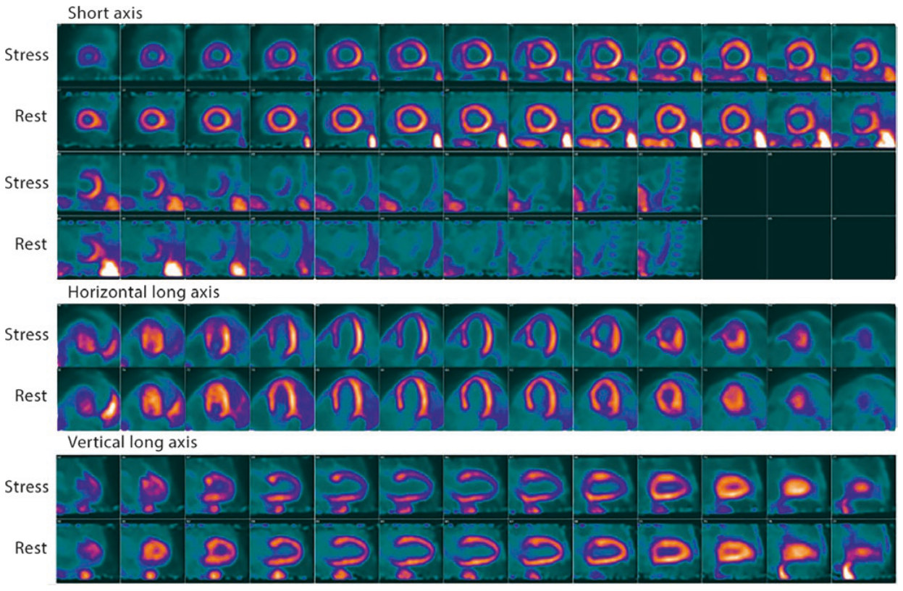
影像所见 鉴别诊断
- MPI：LAD 与 RCA 供血区出现大面积、严重且可逆性的灌注缺损
- LAD 与 RCA 供血区的负荷 MBF 和 MFR 降低
- 静息状态下左心室功能正常（55%），负荷峰值时射血分数下降（48%）
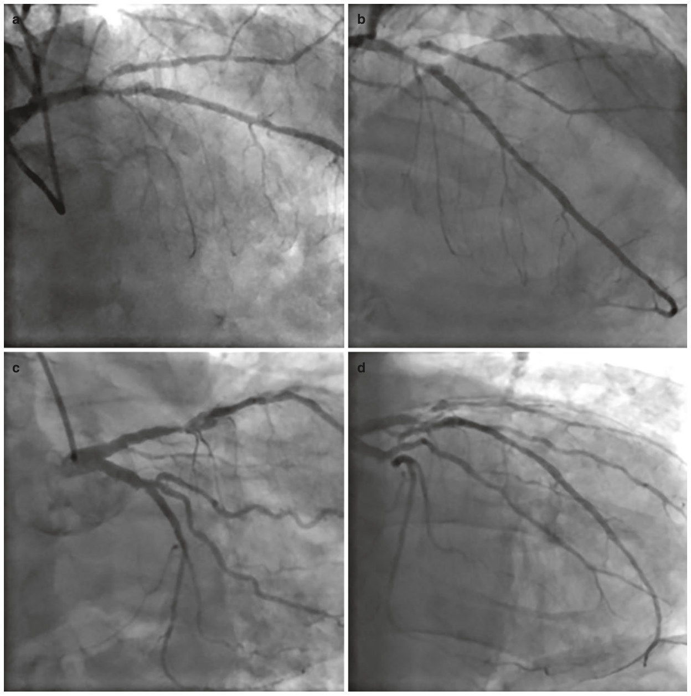
- 单支血管病变与多支血管病变
关联影像
- 冠状动脉造影（图 2.21）
处理
Kobayashi N, Maehara A, Brener S, Généreux P, Witzenbichler B, Guagliumi G, 等. 左前降支冠状动脉包绕左心室心尖预测前壁 ST 段抬高型心肌梗死患者的临床不良结局（来自急性心肌梗死再血管化与支架协调结局试验）。美国心脏病学杂志. 2015;116:1658–1665. Sapin P, Musselman D, Dehmer G, Cascio W. 前壁急性心肌梗死伴下壁 ST 段抬高的血管造影意义——左前降支的形态和闭塞部位. 美国心脏病学杂志. 1992;69:860–865. Peters S. Takotsubo 心肌病与左前降支的结构异常. 国际心脏病学杂志. 2016;223:510–511.
- 患者接受了 LAD 旁路移植术。
扩展阅读
Kobayashi N, Maehara A, Brener S, Généreux P, Witzenbichler B, Guagliumi G, et al. Usefulness of the Left Anterior Descending Coronary Artery Wrapping Around the Left Ventricular Apex to Predict Adverse Clinical Outcomes in Patients With Anterior Wall ST-Segment Elevation Myocardial Infarction (from the Harmonizing Outcomes With Revascularization and Stents in Acute Myocardial Infarction Trial). The American Journal of Cardiology. 2015;116:1658–1665.
Sapin P, Musselman D, Dehmer G, Cascio W. Implications of inferior ST-segment elevation accompanying anterior wall acute myocardial infarction for the angiographic morphology of the left anterior descending coronary artery morphology and site of occlusion. The American Journal of Cardiology. 1992;69:860–865.
Peters S. Takotsubo cardiomyopathy and structural abnormalities of the left anterior descending coronary artery. International Journal of Cardiology. 2016;223:510–511. M. F. Di Carli et al. Case 17
Case 17
History
- 78 岁女性，既往高脂血症、高血压、2 型糖尿病及克罗恩病病史，在一次长时间胸痛发作后转行使用 82Rb 的血管扩张剂 PET/CT 检查（图 2.22 及
| 心肌血流量 区域 | 心肌血流量（mL/min/g） 静息 | 心肌血流量 Stress 负荷 | 心肌血流储备 MFR |
|---|---|---|---|
| LAD | 0.76 | 1.03 | 1.72 |
| LCX | 0.86 | 1.23 | 2.05 |
| RCA | 0.92 | 1.21 | 1.31 |
| Global | 0.83 | 1.13 | 1.36 |
PET 影像
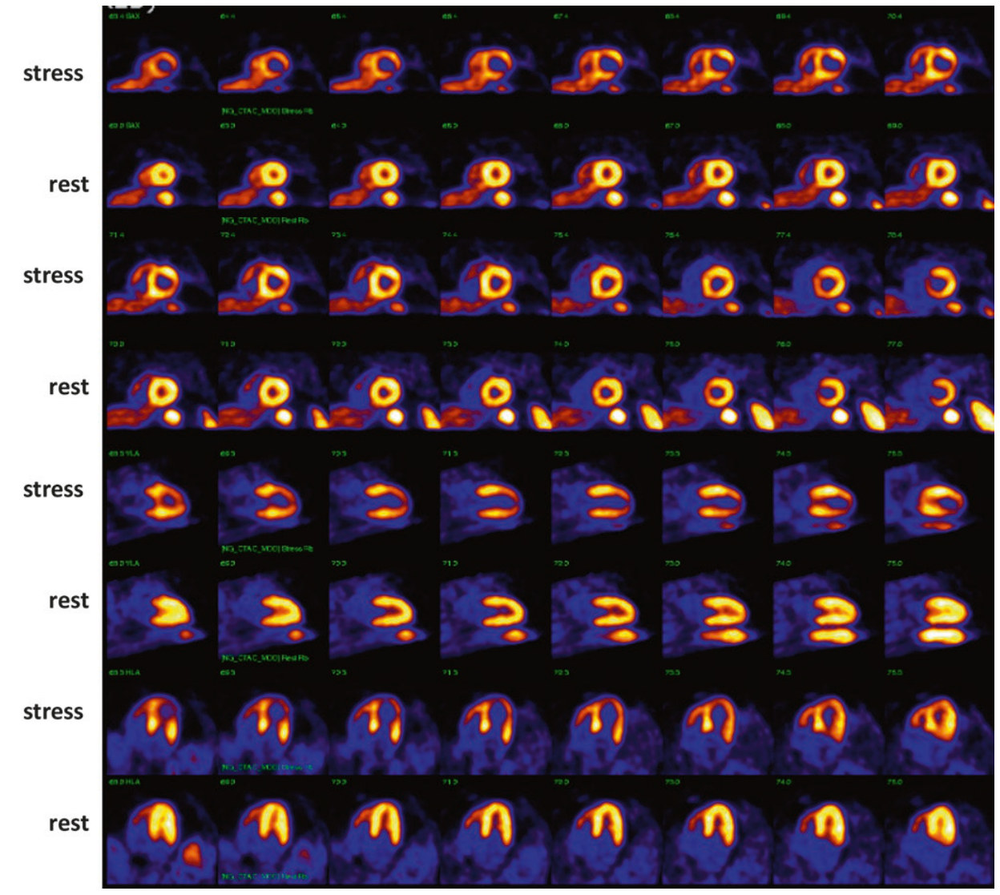
所见
- 负荷状态下左心室短暂性缺血性扩张。
- 负荷状态下右心室游离壁摄取一过性增高。
- 左心室中部前间隔壁、心尖部各节段及心尖部可见范围较大、程度严重且可逆的灌注缺损，呈完全可逆性。
- 下侧壁全段可见中等大小、中等程度的灌注缺损，亦呈完全可逆性。
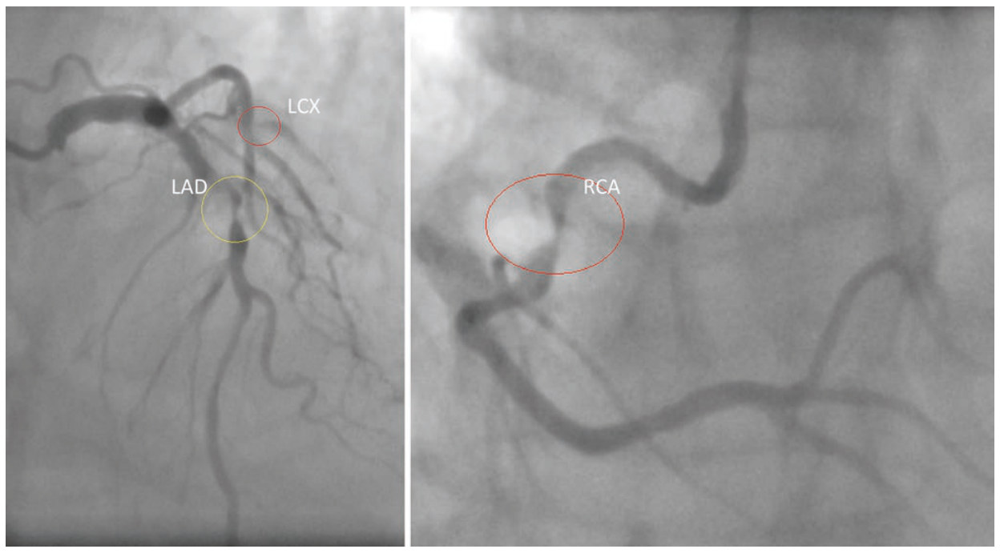
- 整体心肌血流储备减低。
- 静息时左心室射血分数（LVEF）为 69%，在负荷峰值时降至 57%。
鉴别诊断
- 严重多支阻塞性冠状动脉疾病
相关影像学检查
- 有创性冠状动脉造影（图 2.23）
处理 拓展阅读
- 该患者被认为属于高危人群——根据目前针对糖尿病患者多支病变的最佳循证治疗建议——被转诊接受冠状动脉旁路移植术。
BARI 2D 研究组、Frye RL、August P、Brooks MM、Hardison RM、Kelsey SF 等. 针对 2 型糖尿病合并冠状动脉疾病患者治疗方案的随机对照试验. The New England Journal of Medicine. 2009;360:2503–2515. Farkouh ME、Domanski M、Sleeper LA、Siami FS、Dangas G、Mack M 等. 糖尿病患者多支血管血运重建的策略. The New England Journal of Medicine. 2012;367:2375–2384.
2.4 高危扫描：负荷心肌血流量减低但 MFR 正常
Case 18
| 静息（ml/min/g） | 负荷（ml/min/g） | Stress-rest | |
|---|---|---|---|
| LAD | 0.53 | 1.17 | 2.20 |
| LCX | 0.72 | 1.74 | 2.42 |
| RCA | 0.47 | 1.15 | 2.43 |
| globally | 0.56 | 1.31 | 2.35 |
History
- 74 岁男性，有血脂异常、高血压及既往吸烟史
- 因餐后心绞痛发作转行 PET/CT 检查（图 2.24 和表 2.11）
PET/CT 图像
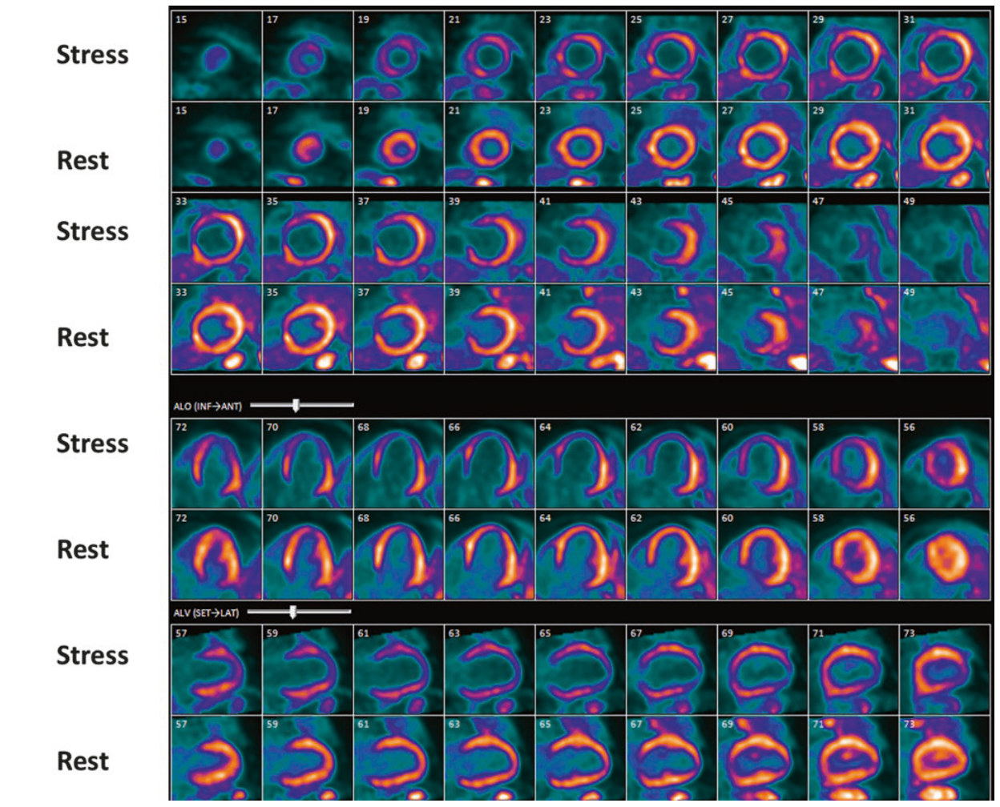
影像所见
- 心肌灌注 PET 图像显示负荷状态下存在 TID（TID 比值：1.42）。
- 中部前壁及前间隔壁、心尖部左心室节段和左心室心尖部可见大面积、严重强度的灌注缺损，呈完全可逆性。此外，下壁及基底下外侧壁可见中等大小、中等强度的灌注缺损，亦呈完全可逆性。
- 定量血流数据显示负荷心肌血流量（MBF）严重且弥漫性减低，而心肌血流储备（MFR）相对保留，原因是静息血流较低。
- 左心室收缩功能严重减低，静息与负荷图像上左心室射血分数（LVEF）均为 21%，伴有严重的整体运动减低及左心室扩张，且在负荷状态下加重。
鉴别诊断
- 严重的多支阻塞性冠状动脉疾病（CAD）。
相关影像学检查
- 冠状动脉造影（图 2.25）。
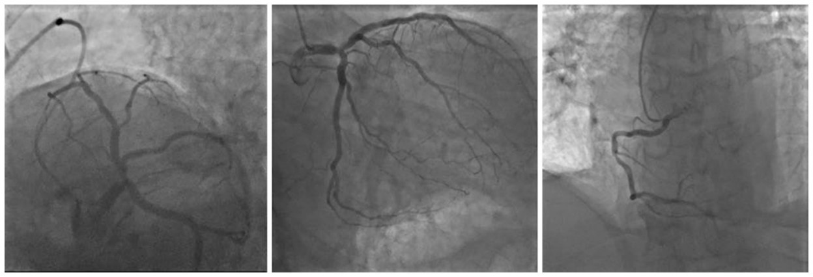
处理 拓展阅读
- 该患者接受了高风险 CABG。
Johnson N, Gould K, Di Carli M, Taqueti V. 有创 FFR 与无创 CFR 在缺血评估中的应用：未来走向何方?. 美国心脏病学会杂志. 2016;67:2772–2788. Ziadi M, deKemp R, Williams K, Guo A, Renaud J, Chow B, 等. 基于铷-82 正电子发射断层扫描的心肌血流储备定量是否有助于检出多支血管病变?. 核心脏病学杂志. 2012;19: 670–680.
Case 19
History
- 67 岁男性，因慢性肾功能不全接受腹膜透析
- 因下后壁 STEMI（TnI 最高 90.2 ng/ml，CK-MB 183.4 ng/ml）就诊，行直接 PCI 治疗（图 2.26a，b）
- 冠状动脉造影显示左回旋支和左前降支冠脉也存在病变（图 2.26c, d）。在本次 STEMI 发病两个月后，他接受了左回旋支动脉的经皮冠状动脉介入治疗（PCI）（图 2.26e）。
- 9 个月后，患者因再发胸痛再次入住急诊科。
- 心肌酶阴性。
- 遂接受心肌灌注 PET 检查（图 2.27 和表 2.12）。
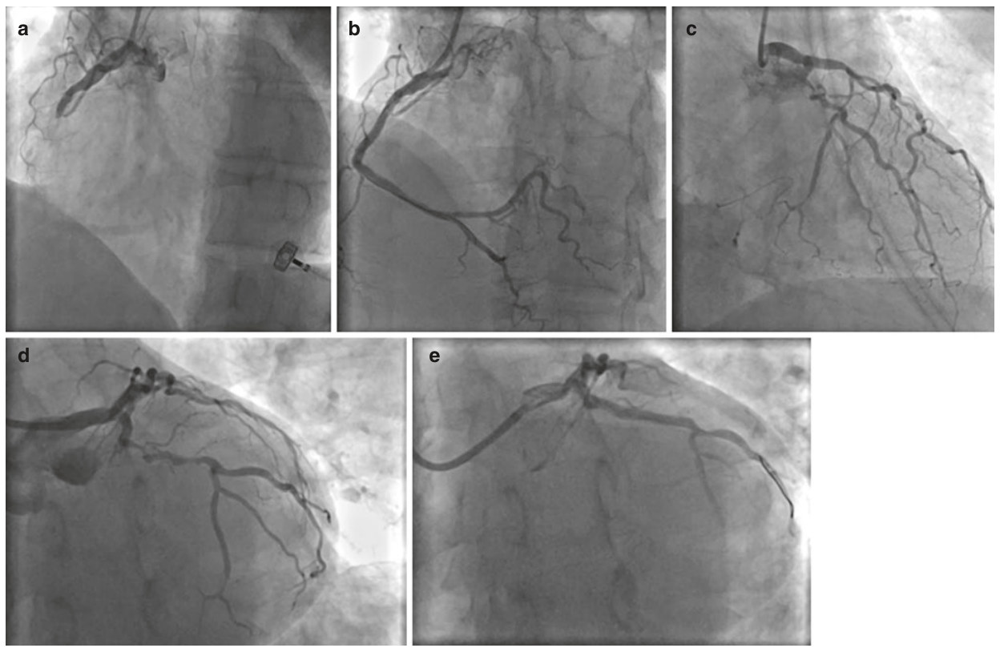
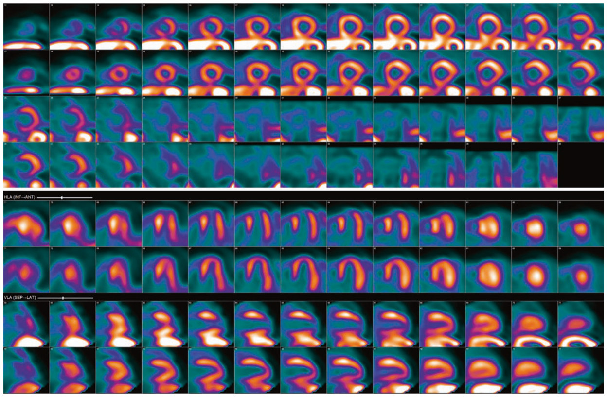
| 静息（ml/min/g） | 负荷（ml/min/g） | 负荷-静息 | |
|---|---|---|---|
| LAD | 0.73 | 1.20 | 1.65 |
| LCX | 0.84 | 1.47 | 1.76 |
| RCA | 0.64 | 1.38 | 2.16 |
| 全心左室 | 0.74 | 1.75 | 1.61 |
影像所见
- 负荷 PET 图像显示在峰值负荷状态下，左心室心尖段及左心室心尖部存在严重灌注缺损，静息状态下明显逆转。
- 负荷状态下所有血管供血区域的 MBF 均减低，但仅 LAD 和 LCX 供血区域的 MFR 降低。
处理
- 该患者随后接受了有创性冠状动脉造影（ICA）（图 2.28）。
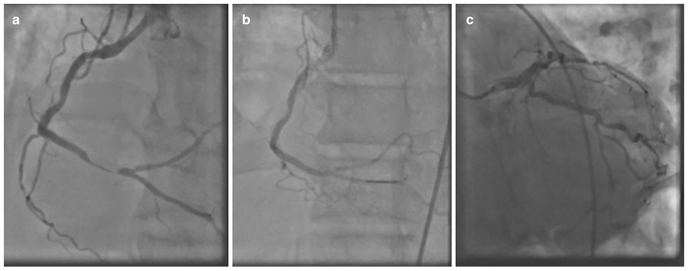
延伸阅读
Shibutani H, Akita Y, Yutaka K, Yamamoto S, Matsui Y, Yoshinaga M, et al. Acute myocardial infarction with “wrap around” right coronary artery mimicking Takotsubo cardiomyopathy: a case report. BMC Cardiovascular Disorders. 2016;16:16–71.
Naya M, Murthy V, Blankstein R, Sitek A, Hainer J, Foster C, et al. Quantitative Relationship Between the Extent and Morphology of Coronary Atherosclerotic Plaque and Downstream Myocardial Perfusion. Journal of the American College of Cardiology. 2011;58:1807–1816.
Gaemperli O, Schepis T, Valenta I, Husmann L, Scheffel H, Duerst V, et al. Cardiac Image Fusion from Stand-Alone SPECT and CT: Clinical Experience. Journal of Nuclear Medicine. 2007;48(5):696–703.
Javadi M, Lautamaki R, Merrill J, Voicu C, Epley W, McBride G, et al. Definition of Vascular Territories on Myocardial Perfusion Images by Integration with True Coronary Anatomy: A Hybrid PET/CT Analysis. Journal of Nuclear Medicine. 2010;51:198–203. a b c
2.4.1 正常 MPI、TID 及整体 MFR 减低
| 静息（ml/min/g） | 负荷（ml/min/g） | Stress-rest | |
|---|---|---|---|
| LAD | 0.65 | 1.06 | 1.64 |
| LCX | 0.64 | 1.09 | 1.71 |
| RCA | 0.59 | 0.69 | 1.17 |
| 整体 | 0.63 | 0.96 | 1.54 |
MFR 减低
Case 20
History
- 患者男性，79 岁，无症状，既往有血脂异常及高血压病史，超声心动图（未提供图像）提示新发左心室功能不全，遂接受 PET/CT 检查（图 2.29 及表 2.13）。
PET/CT 图像
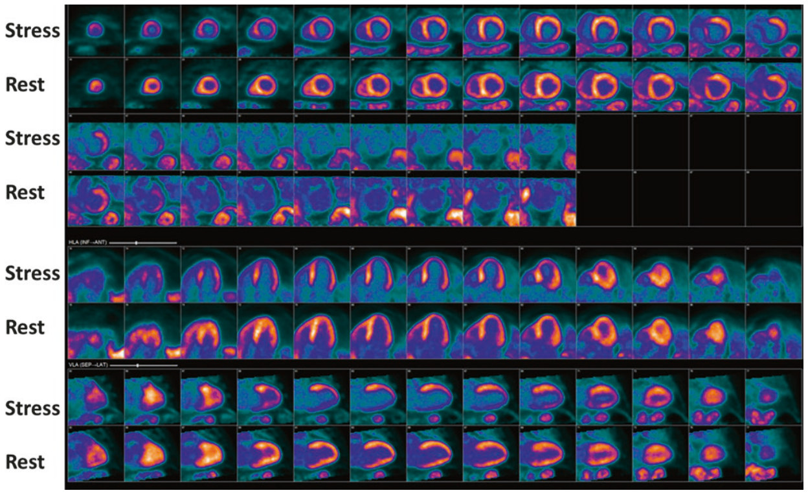
所见
- 心肌灌注 PET 图像显示负荷时轻度 TID。下壁及基底段下间隔壁可见中等大小、严重程度的心肌灌注缺损，呈完全可逆性。此外，心尖段左心室及左心室心尖部可见中等大小、严重程度的心肌灌注缺损，亦呈完全可逆性。
- 定量血流数据示三个冠状动脉供血区域均出现弥漫性、重度的负荷 MBF 及 MFR 减低。
相关影像学检查
- 侵入性冠状动脉造影（图 2.30）：
处理
- 患者接受了冠状动脉旁路移植术（CABG）。
延伸阅读
Sambuceti G, Marzullo P, Giorgetti A, Neglia D, Marzilli M, Salvadori P, et al. Global alteration in perfusion response to increasing oxygen consumption in patients with single-vessel coronary artery disease. Circulation. 1994;90:1696–1705.
Naya M, Murthy V, Blankstein R, Sitek A, Hainer J, Foster C, et al. Quantitative Relationship Between the Extent and Morphology of Coronary Atherosclerotic Plaque and Downstream Myocardial Perfusion. Journal of the American College of Cardiology. 2011;58:1807–1816.
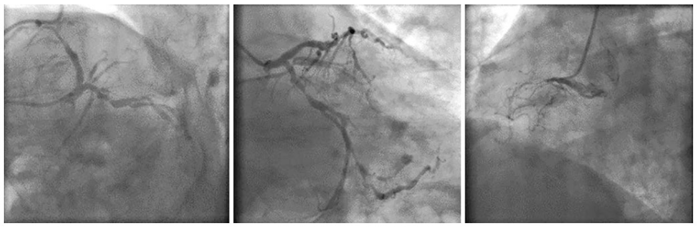
Case 21
| 静息（ml/min/g） | 负荷（ml/min/g） | Stress-rest | |
|---|---|---|---|
| LAD | 0.95 | 1.56 | 1.65 |
| LCX | 0.88 | 1.64 | 1.88 |
| RCA | 0.81 | 1.40 | 1.73 |
| 整体左心室 | 0.89 | 1.54 | 1.73 |
History
- 78 岁男性，伴不典型心绞痛、慢性肾功能衰竭。
- 危险因素：血脂异常、高血压、既往吸烟史。
- 因心绞痛评估转行 PET/CT 检查（图 2.31 及表 2.14）。
PET/CT 图像
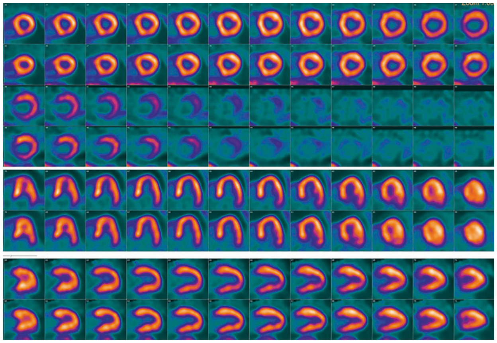
所见 处理
- MPI 显示负荷状态下左心室短暂性扩张（TID 比值 = 1.27），未见局部灌注缺损。
- 负荷状态下心肌血流量（MBF）弥漫性减低，无基底部至心尖部的梯度变化，MFR 减低。
- 负荷时左心室射血分数（LVEF）轻度降低（67%），静息时为 69%。
鉴别诊断
- 阻塞性冠状动脉疾病（CAD）与微血管病变。
延伸阅读
Fukushima K, Javadi M, Higuchi T, Bravo P, Chien D, Lautamaki R, et al. Impaired Global Myocardial Flow Dynamics Despite Normal Left Ventricular Function and Regional Perfusion in Chronic Kidney Disease: A Quantitative Analysis of Clinical 82Rb PET/CT Studies. Journal of Nuclear Medicine. 2012;53:887–893.
Koivuviita N, Tertti R, Jarvisalo M, Pietila M, Hannukainen J, Sundell J, et al. Increased basal myocardial perfusion in patients with chronic kidney disease without symptomatic coronary artery disease. Nephrology Dialysis Transplantation. 2009;24:2773–2779. Case 22
Case 22
- 他因劳力性呼吸困难和胸痛被转诊行 PET/CT 检查（图 2.33 和表 2.15）。
History
- 男性，68 岁，有高血压病史。近期接受冠状动脉 CT 血管成像（图 2.32），显示广泛的冠状动脉粥样硬化。
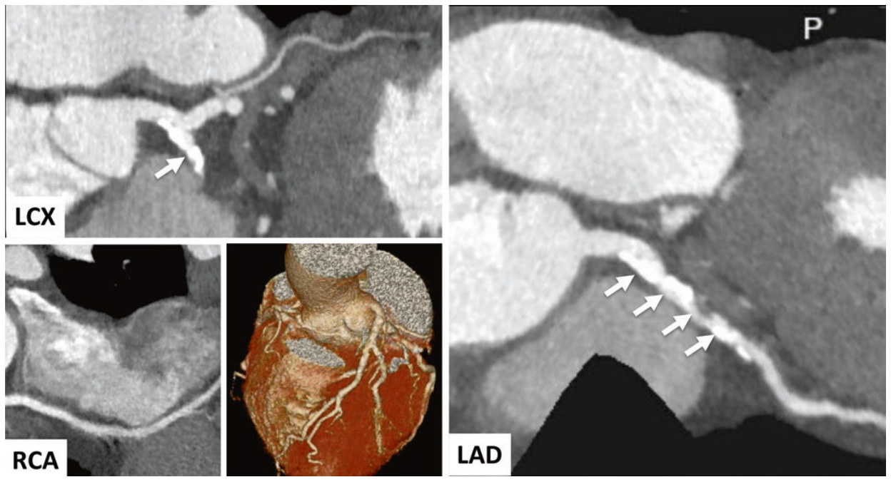
PET/CT 图像（图 2.33 和图 2.34）
| 静息（ml/min/g） | 负荷（ml/min/g） | Stress-rest | |
|---|---|---|---|
| LAD | 0.45 | 1.48 | 3.29 |
| LCX | 0.51 | 1.89 | 3.71 |
| RCA | 0.47 | 1.47 | 3.13 |
| globally | 0.47 | 1.58 | 3.36 |
影像所见
心肌灌注图像，结合负荷状态下心肌血流的轻中度减低及保留的流量储备，符合非阻塞性粥样硬化。
- 图像显示左心室大小正常。负荷及静息显像中局部心肌灌注均正常。
- 心电门控图像显示静息左心室射血分数为 52%，负荷后增至 60%，左心室容积正常。局部室壁运动及增厚率正常。
- 定量 PET 显像提示负荷心肌血流减低而心肌血流储备正常，提示临床低风险（年心源性死亡率 <1%）。然而，该患者存在严重的非阻塞性粥样硬化，心肌梗死风险增高，需积极的降脂治疗并管理高血压。
- 所有冠状动脉供血区域及整体最大负荷心肌血流量中度减低,无基底至心尖的梯度,但其心肌血流储备正常。
扩展阅读 鉴别诊断
Gupta A, Taqueti VR, van de Hoef TP, Bajaj NS, Bravo PE, Murthy VL, 等. 稳定型冠状动脉疾病患者冠状动脉循环功能的综合无创生理学评估及其对心血管死亡率的影响. Circulation. 2017;136:2325–2336. Scot-Heart 研究者，Newby DE, Adamson PD, Berry C, Boon NA, Dweck MR, 等. 冠状动脉 CT 血管成像与 5 年心肌梗死风险. The New England Journal of Nuclear Medicine. 2018;379:924–933.
- None
相关影像学检查
- 无
处理
- 积极的危险因素管理
Case 23
History
- 52 岁肥胖女性（BMI：35），有高血压病史，因不典型心绞痛和呼吸困难就诊评估。她接受了静息与 Regadenoson 负荷 13N-氨心肌灌注 PET/CT 检查（图 2.35 和表 2.16）以及 CACS 评估（图 2.36）。
PET/CT 图像
| 静息（ml/min/g） | 负荷（ml/min/g） | MFR（负荷/静息） | |
|---|---|---|---|
| LAD | 1.15 | 1.96 | 1.70 |
| LCX | 1.27 | 2.04 | 1.61 |
| RCA | 1.17 | 2.00 | 1.71 |
| globally | 1.19 | 2.00 | 1.68 |
影像所见
- 图像显示左心室大小正常。负荷和静息成像均显示局部心肌灌注正常。
- 心电门控图像显示静息左心室射血分数为 63%，负荷后增加至 66%，左心室容积正常。局部室壁运动及增厚率正常。
- 透射 CT 扫描未见冠状动脉钙化证据。
- 各冠脉供血区域及整体的最大负荷心肌血流量相对正常（>1.8 mL/min/g），但由于静息血流量增加，心肌血流储备减低。
- CT 透射扫描未见冠状动脉钙化征象。
鉴别诊断
- 非阻塞性冠状动脉疾病
- 冠状动脉微血管功能障碍
相关影像学检查
- None
处理
- 高血压管理与减重
延伸阅读
Gupta A, Taqueti VR, van de Hoef TP, Bajaj NS, Bravo PE, Murthy VL, et al. Integrated Non-invasive Physiological Assessment of Coronary Circulatory Function and Impact on Cardiovascular Mortality in Patients with Stable Coronary Artery Disease. Circulation. 2017;136:2325–2336.
Taqueti V, Shaw L, Cook N, Murthy V, Shah N, Foster C, et al. Excess Cardiovascular Risk in Women Relative to Men Referred for Coronary Angiography Is Associated With Severely Impaired Coronary Flow Reserve, Not Obstructive Disease. Circulation. 2017;135:566–577. Murthy VL, Naya M, Taqueti VR, Foster CR, Gaber M, Hainer J, et al. Effects of Sex on Coronary Microvascular Dysfunction and Cardiac Outcomes. Circulation. 2014 Jun 17;129(24):2518–27. https://doi.org/10.1161/CIR-CULATIONAHA.113.008507. Epub 2014 Apr 30. M. F. Di Carli et al. 2.4.2 Abnormal PET with Abnormal FFR Case 24
2.4.2 PET 异常且 FFR 异常
Case 24
History
- 62 岁男性,有高血压、高胆固醇血症及糖尿病病史,既往已知冠心病,曾接受左前降支（LAD）及左回旋支（LCX）经皮冠状动脉介入治疗（PCI）,此次因评估不典型胸痛就诊。患者行静息/负荷心肌灌注 PET 成像,示踪剂为 15O-水（图 2.37）。
PET/CT 图像
影像所见 鉴别诊断
- 图像示左心室大小正常。负荷图像示左心室前壁、室间隔、心尖段及左心室心尖部大面积严重灌注缺损,呈完全可逆,符合 LAD 供血区域的严重缺血。
- 定量评估显示 LAD 供血区域充盈期心肌血流量异常,为 1.10 ml/min/g,心肌血流储备（MFR）为 1.59。
- 阻塞性冠心病
相关成像
- 有创性冠状动脉造影（图 2.38）
处理
Reserve, 与负荷灌注显像在缺血诊断中的应用. 美国心脏病学会杂志. 2019;73:161–173. Pijls N, de Bruyne B, Peels K, van der Voort P, Bonnier H, Bartunek J, 等. 血流储备分数测定用于评估冠状动脉狭窄的功能严重程度. 新英格兰医学杂志. 1996;334:1703–1708. Knuuti J, Wijns W, Saraste A, Capodanno D, Barbato E, Funck-Brentano C, 等. 2019 ESC 慢性冠脉综合征诊断和管理指南. 欧洲心脏杂志. 2020;41:407–477.
- LAD 病变通过 PCI 成功治疗,置入 2 枚药物洗脱支架。
延伸阅读
Driessen R, Danad I, Stuijfzand W, Raijmakers P, Schumacher S, van Diemen P, et al. Comparison of Coronary Computed Tomography Angiography, Fractional Flow Reserve, and Perfusion Imaging for Ischemia Diagnosis. Journal of the American College of Cardiology. 2019;73:161–173.
Pijls N, de Bruyne B, Peels K, van der Voort P, Bonnier H, Bartunek J, et al. Measurement of Fractional Flow Reserve to Assess the Functional Severity of Coronary-Artery Stenoses. New England Journal of Medicine. 1996;334:1703–1708.
Knuuti J, Wijns W, Saraste A, Capodanno D, Barbato E, Funck-Brentano C, et al. 2019 ESC Guidelines for the diagnosis and management of chronic coronary syndromes. Eur Heart J. 2020;41:407–477.
2.5 疑似冠状动脉微血管功能障碍的患者
| 静息（ml/min/g） | 负荷（ml/min/g） | MFR（负荷/静息） | |
|---|---|---|---|
| LAD | 0.59 | 0.88 | 1.48 |
| LCX | 0.62 | 1.00 | 1.56 |
| RCA | 0.57 | 0.63 | 1.08 |
| 整体左心室 | 0.59 | 0.87 | 1.44 |
2.5.1 无动脉粥样硬化
2.5.1.1 高血压性心脏病
Case 25
History
- 女性，61 岁，有 20 年控制良好的高血压病史，目前仍吸烟。
- 患者因不典型心绞痛和呼吸困难（病程 3 个月）接受了 PET/CT 评估（图 2.39 及
PET/CT 图像
所见
- 静息及负荷心肌灌注显像未见局部灌注缺损证据。
- 心电门控研究显示左心室射血分数（LVEF）由静息时的 57% 下降至负荷峰值时的 48%。
- 负荷心肌血流量（MBF）及血流储备呈弥漫性异常。
以排除多支阻塞性冠心病的可能。本例中，CCTA 显示冠状动脉造影正常。
治疗
- 优化药物治疗
鉴别诊断 拓展阅读
- 多支阻塞性冠心病所致平衡性缺血与微血管功能障碍的鉴别
相关影像学检查
- CCTA (Fig. 2.40)
Garcia M, Mulvagh S, Bairey Merz C, Buring J, Manson J. 女性心血管疾病. 循环研究. 2016;118:1273–1293. Schindler T, Dilsizian V. 冠状动脉微血管功能障碍. JACC: 心血管影像. 2020;13:140–155. Taqueti V, Di Carli M. 冠状动脉微血管疾病的发病机制与治疗选择：JACC 最新的综述. 美国心脏病学会杂志. 2018;72:2625–2641.
2.5.1.2 非缺血性心肌病（CM）
Case 26
| 静息（ml/min/g） | 负荷（ml/min/g） | MFR（负荷/静息） | |
|---|---|---|---|
| LAD | 0.92 | 1.56 | 1.69 |
| LCX | 0.87 | 1.57 | 1.80 |
| RCA | 0.89 | 1.54 | 1.73 |
| globally | 0.89 | 1.55 | 1.74 |
History
- 78 岁女性，既往有高血压和糖尿病病史，新发心力衰竭、左心室收缩功能减低及室性心律失常，被转诊行 PET/CT 检查（图 2.41 和表 2.18）。其心电图显示左束支传导阻滞（LBBB）（图 2.42）。
PET/CT 图像
影像所见 关联成像
- 图像显示左心室明显扩大。右心室大小正常，静息与负荷图像上右心室示踪剂摄取中度增高。心肌灌注图像未见区域性灌注缺损。
- 负荷状态下心肌血流量和心肌血流储备的最大值在区域上和整体上均中度减低。
- 心电门控图像显示静息 LVEF 为 15%，负荷后升至 20%，左心室容积严重扩大。室间隔出现矛盾运动，与其静息心电图所示左束支传导阻滞（LBBB）相符。
鉴别诊断
- 重度阻塞性多支冠状动脉疾病（CAD）
- 冠状动脉微血管功能障碍
- Rest ECG
心内膜下缺血和心肌应激增加、亚临床心肌损伤及弥漫性间质纤维化、收缩和舒张功能恶化、心力衰竭、心律失常以及不良心血管事件的病理生理过程。
缺血性及非缺血性心肌病及其与临床结局的关系. European Heart Journal – Cardiovascular Imaging. 2015;16:900–909. Neglia D, Michelassi C, Trivieri M, Sambuceti G, Giorgetti A, Pratali L, 等. 特发性左心室功能障碍中心肌血流损害的预后价值. Circulation. 2002;105(2):186–193. Taqueti V, Di Carli M. 冠状动脉微血管疾病的发病机制及治疗选择：JACC 最新综述. Journal of the American College of Cardiology. 2018;72(21):2625–2641.
处理
- 侵入性冠状动脉造影显示冠状动脉正常。
- 心力衰竭药物治疗及室性心律失常管理。
延伸阅读
Majmudar M, Murthy V, Shah R, Kolli S, Mousavi N, Foster C, et al. Quantification of coronary flow reserve in patients with ischaemic and non-ischaemic cardiomyopathy and its association with clinical outcomes. European Heart Journal – Cardiovascular Imaging. 2015;16:900–909.
Neglia D, Michelassi C, Trivieri M, Sambuceti G, Giorgetti A, Pratali L, et al. Prognostic Role of Myocardial Blood Flow Impairment in Idiopathic Left Ventricular Dysfunction. Circulation. 2002;105(2):186–193.
Taqueti V, Di Carli M. Coronary Microvascular Disease Pathogenic Mechanisms and Therapeutic Options: JACC State-of-the-Art Review. Journal of the American College of Cardiology. 2018;72(21):2625–2641. M. F. Di Carli et al. 2.5.1.3 Fabry’s Disease Case 27
2.5.1.3 法布里病（Fabry 病）
| 静息（ml/min/g） | 负荷（ml/min/g） | MFR（负荷/静息） | |
|---|---|---|---|
| LAD | 0.70 | 1.29 | 1.84 |
| LCX | 0.72 | 1.51 | 2.08 |
| RCA | 0.70 | 1.24 | 1.76 |
| globally | 0.71 | 1.33 | 1.88 |
Case 27
History
- 54 岁女性，诊断为 Anderson-Fabry 病（分子遗传学分析 GLA 基因阳性）
- 尚未开始酶替代治疗
- 因评估心肌灌注与心功能转行 PET/CT 检查（图 2.43 及表 2.19）
影像所见 鉴别诊断
- MPI：负荷状态下左心室短暂性明显扩大伴右心室显像剂摄取增加，未见局部灌注缺损。可见左心室肥厚。
- 负荷状态下局部及整体心肌血流量（MBF）弥漫性减低。
- 静息时射血分数（EF）处于正常低值，测得为50%，血管扩张剂负荷后显著下降至37%，并伴收缩末期容积明显增大。
- 阻塞性 CAD 与法布里病所致微血管功能障碍鉴别。
相关影像检查
- 心脏 MR（图 2.44 和 2.45）
处理 拓展阅读
- 冠状动脉造影显示冠状动脉正常。
El Dib R, Gomaa H, Ortiz A, Politei J, Kapoor A, Barreto F. Anderson-Fabry 病的酶替代治疗：通过线性回归和队列研究比例汇总分析对 Cochrane 文献的补充概述。PLOS ONE. 2017;12. Simonetta I, Tuttolomondo A, Di Chiara T, Miceli S, Vogiatzis D, Corpora F, 等. Anderson-Fabry 病的遗传学与基因治疗。Current Gene Therapy. 2018;18:96–106.
- 该患者接受了酶替代治疗。
Case 28
History
- 67岁女性，既往高胆固醇血症及控制良好的高血压病史，长期吸烟。因呼吸困难和非典型心绞痛入院。
- 患者接受冠状动脉造影，显示冠状动脉正常（图 2.46）。
- 她被转诊行 PET 心肌灌注成像以评估微血管功能障碍（图 2.47 和
- 心电图显示血管扩张剂负荷试验期间出现缺血性改变（图 2.48）。冠状动脉造影
左侧冠状动脉系统
水平长轴
垂直长轴
| 静息（ml/min/g） | 负荷（ml/min/g） | MFR（负荷/静息） | |
|---|---|---|---|
| LAD | 1.06 | 1.31 | 1.24 |
| LCX | 1.02 | 1.42 | 1.40 |
| RCA | 1.15 | 1.53 | 1.33 |
| 整体 LV | 1.07 | 1.40 | 1.32 |
影像所见 鉴别诊断
- 负荷时左心室轻度扩大，但无局部灌注异常
- 负荷心肌血流量严重且弥漫性减低，心肌血流储备受损
- 左心室功能正常，静息及负荷峰值时左心室射血分数（LVEF）为 64%
- 血管扩张剂负荷期间的心电图缺血改变
- 高血压性心脏病
- 肥厚型心肌病
相关影像学
- 心脏 MRI（图 2.49 和图 2.50）
晚期钆增强
处理 拓展阅读
- 根据 PET 及心脏 MRI 结果，该患者接受了法布里病（Fabry 病）评估。其 α 半乳糖苷酶酶学检测结果为阴性。
- 分子遗传学分析显示 α 半乳糖苷酶基因（GLA 基因）阳性。
- 她已开始接受酶替代治疗。
2.5.1.4 淀粉样变
Case 29
| 静息（ml/min/g） | 负荷（ml/min/g） | MFR（负荷/静息） | |
|---|---|---|---|
| LAD | 0.79 | 0.97 | 1.23 |
| LCX | 0.82 | 1.14 | 1.39 |
| RCA | 0.73 | 1.02 | 1.39 |
| globally | 0.78 | 1.03 | 1.32 |
History
- 患者男性，61岁，因进行性劳力性呼吸困难伴不典型胸痛就诊，行心肌灌注 PET 检查（图 2.51 和表 2.21）。
- 其冠心病（CAD）家族史显著。
- 其心脏危险因素包括高血压和血脂异常。
- 超声心动图（未提供图像）还提示左心室壁增厚及舒张功能不全。
PET/CT 影像
影像所见 鉴别诊断
- 负荷状态下左心室腔出现明显的短暂性缺血性扩张（TID 比值 1.43，正常 1.05）。
- 负荷心肌灌注图像显示左心室中段及基底段存在大范围、严重程度的灌注缺损，并完全可逆。负荷时缺血的累及范围和严重程度合计达左心室心肌的 45%。
- 负荷心肌血流量和血流储备在局部和整体上均显著降低。
- 门控心脏 CT：Agatston 冠状动脉钙化积分为 0。
- 多支阻塞性冠心病 与 冠状动脉微血管功能障碍
相关性影像
- 冠状动脉造影未见冠状动脉疾病的证据（图 2.52）。
- 心脏 MRI 在短轴位图像上显示左心室基底部弥漫性心内膜下延迟强化（图 2.53）。
处理 延伸阅读
- 该患者接受了冠状动脉造影检查，结果显示心外膜冠状动脉仅有轻微的非阻塞性动脉粥样硬化。
- 随后进行了心脏 MRI 检查，以评估左心室肥厚伴显著微血管病变的原因。结果显示双侧心室壁增厚，左心室出现弥漫性晚期钆增强，这些特征高度提示心脏淀粉样变。后续检查（血清游离轻链水平、血清及尿液免疫固定以及脂肪垫活检）确诊为累及心脏的轻链淀粉样变。
- 该患者接受了化疗。
2.5.1.5 肥厚型心肌病
Case 30
| 区域 | 心肌血流量（mL/min/g） 静息 | 和心肌血 负荷 | 心肌血流储备 MFR |
|---|---|---|---|
| LAD | 0.82 | 1.07 | 1.30 |
| LCX | 1.00 | 1.39 | 1.39 |
| RCA | 0.78 | 0.87 | 1.12 |
| 整体 | 0.84 | 1.06 | 1.25 |
History
- 一例 56 岁女性，既往肥厚型心肌病（HCM）合并心力衰竭，但无已知冠心病（CAD），因评估非心绞痛性胸痛而接受检查。
- 其心脏危险因素包括高血压、血脂异常、糖尿病及肥胖。
- 患者接受了 Regadenoson 负荷心肌灌注 PET 检查（图 2.54 和表 2.22）。
PET/CT 影像
影像所见 鉴别诊断
- 负荷状态下左心室腔出现中度短暂性缺血性扩张（TID）。
- 负荷心肌灌注图像显示心尖部左心室节段及左心室心尖处存在中等大小的中等强度灌注缺损，呈完全可逆性改变。负荷状态下缺血的范围和严重程度合计累及左心室心肌的 10%。
- 存在非对称性室间隔肥厚的证据。
- 负荷心肌血流量及血流储备在局部和整体上均显著降低。
- 静息时左心室射血分数为 58%，负荷状态下基本保持不变。
- 多支阻塞性冠状动脉疾病与微血管病变鉴别。
相关成像
- 有创性冠状动脉造影未见阻塞性冠状动脉疾病的证据（图 2.55）。
- 心脏 MRI 显示严重左心室肥厚，以室间隔肥厚更为显著。多个心肌节段可见大量斑片状心肌中层延迟钆增强，但在严重肥厚的心肌节段中更为突出。总体而言，影像学表现符合非对称性梗阻性肥厚型心肌病（图 2.56）。
处理
- 与其他类型的心肌病一样，HCM 患者 CMD 的严重程度可识别出心血管不良事件风险较高的人群。
- 在本病例中，结合 PET 结果和心绞痛症状进行冠状动脉造影检查具有重要意义，有助于排除心外膜冠状动脉疾病。
延伸阅读
Bravo P, Di Carli M, Dorbala S. PET 在评价非缺血性心肌病冠状动脉微血管功能障碍中的作用. Heart Failure Reviews. 2017;22:455–464.
Camici P, Olivotto I, Rimoldi O. 左心室肥厚时的冠状动脉循环与血流. Journal of Molecular and Cellular Cardiology. 2012;52:857–864.
Cecchi F, Olivotto I, Gistri R, Lorenzoni R, Chiriatti G, Camici P. 肥厚型心肌病的冠状动脉微血管功能障碍与预后. New England Journal of Medicine. 2003;349:1027–1035.
2.5.1.6 应激性心肌病
Case 31
History
- 69 岁女性，有乳腺癌病史，2017 年行生物瓣主动脉瓣置换术，因院外心脏骤停就诊。其心脏危险因素包括高血压、血脂异常、糖尿病和肥胖。
- 心电图发现新发左束支传导阻滞，经胸超声心动图显示左心室射血分数新近下降至35%。表现为整体运动减低，心尖部及室间隔运动消失。
- 遂推荐行 Regadenoson 负荷 SPECT 心肌灌注显像以评估冠状动脉疾病（图 2.57）。
SPECT 成像
所见
- 负荷/静息 SPECT 心肌灌注显像示左心室瘤样扩张，伴中段前间隔壁、心尖部左室节段及左室心尖部大面积严重强度灌注缺损，基本为固定性缺损。
- 心电门控图像显示左心室整体收缩功能严重减低，左室心尖部及心尖部左室节段运动消失。
- 建议行 FDG PET 随访以评估心肌存活情况，并与静息 SPECT 配对分析（图 2.58）。结果符合中段 LAD 供血区域存在非存活与存活但冬眠心肌混合存在（约占左室质量的 38%，灌注-FDG 不匹配）的表现。
FDG PET/CT 显像
影像所见 鉴别诊断
- 所有低灌注左心室节段均可见显著 FDG 摄取（灌注-FDG 不匹配），符合 LAD 中段供血区域存在存活但冬眠心肌与非存活心肌混合存在，约占左心室质量的 38%。
- 亚急性前壁心肌梗死，伴明显残余存活但冬眠心肌（由阻塞性 CAD 所致）
相关影像检查
- 有创冠状动脉造影示管腔轻度不规则，未见阻塞性 CAD（图 2.59）。
处理
- 患者接受了二级预防性 AICD 植入。
- 随后予以最佳药物治疗（包括 β 受体阻滞剂、ARB、袢利尿剂、阿司匹林及他汀类）治疗缺血性心力衰竭后出院回家。
延伸阅读
Pelliccia F, Kaski J, Crea F, Camici P. 章鱼壶综合征的病理生理学. Circulation. 2017;135:2426–2441.
Templin C, Ghadri J, Diekmann J, Napp L, Bataiosu D, Jaguszewski M, 等. 章鱼壶（应激性）心肌病的临床特征与转归. New England Journal of Medicine. 2015;373:929–938.
2.5.2 非阻塞性动脉粥样硬化
2.5.2.1 糖尿病
Case 32
History
- 86 岁女性，既往有高血压、血脂异常、糖尿病和肥胖病史，但无已知冠心病，因呼吸困难和心悸就诊评估。
- 她被转诊接受 PET/CT 检查以评估心肌灌注（图 2.60 和图 2.61；表 2.23）。
PET/CT 图像
| 心肌血流量 区域 | 心肌血流量（mL/min/g） 静息 | 心肌血流 (mL/min/g) 及 静息 负荷 | 心肌血流储备 MFR |
|---|---|---|---|
| LAD | 0.63 | 0.99 | 1.58 |
| LCX | 0.72 | 1.23 | 1.70 |
| RCA | 0.68 | 1.12 | 1.65 |
| Global | 0.67 | 1.09 | 1.63 |
所见
- 图像显示左心室大小正常。右心室轻度扩张，在负荷状态下示踪剂摄取中度增加。负荷及静息图像均未见节段性灌注缺损。
- 心电门控图像显示静息左心室射血分数为 52%，负荷时仅轻微增加至 54%，左心室容积正常。节段性室壁运动及增厚正常。
- 所有冠状动脉供血区域及整体最大负荷心肌血流量均严重降低（<1.8 mL/min/g），且无明显基底部至心尖部的梯度。心肌血流储备在所有冠状动脉供血区域也严重降低。
- CT 透射扫描未见冠状动脉钙化征象。
鉴别诊断
- 多支血管阻塞性冠状动脉疾病（CAD）
- 冠状动脉微血管功能障碍
相关影像学检查
- 有创冠状动脉造影（图 2.62）
处理 拓展阅读
- 缺血性心脏病、冠心病危险因素及血糖控制的管理。
Gupta A, Taqueti VR, van de Hoef TP, Bajaj NS, Bravo PE, Murthy VL, 等. 稳定型冠状动脉疾病患者冠状动脉循环功能的综合无创生理学评估及其对心血管死亡率的影响. Circulation. 2017;136:2325–2336. Taqueti V, Shaw L, Cook N, Murthy V, Shah N, Foster C, 等. 因冠状动脉造影转诊的女性相对于男性的额外心血管风险与严重受损的冠状动脉血流储备相关，而非阻塞性疾病. Circulation. 2017;135:566–577. Murthy V, Naya M, Taqueti V, Foster C, Gaber M, Hainer J, 等. 性别对冠状动脉微血管功能障碍及心脏结局的影响. Circulation. 2014;129:2518–2527.
2.5.2.2 肥胖
Case 33
History
| 心肌血流量 区域 | 心肌血流量（mL/min/g） 静息 | 心肌血流 应激 | 心肌血流储备 MFR |
|---|---|---|---|
| LAD | 0.47 | 0.83 | 1.77 |
| LCX | 0.52 | 0.96 | 1.84 |
| RCA | 0.49 | 0.86 | 1.77 |
| Global | 0.48 | 0.87 | 1.80 |
- 65 岁男性，病态肥胖，因不典型胸痛发作转诊行冠状动脉 CTA。CCTA 仅显示极少量冠状动脉钙化。
- 鉴于其症状，随后接受定量 PET 心肌灌注成像（MPI）以评估微血管功能障碍（图 2.63 和表 2.24）。
PET/CT 图像
影像所见 关联成像
- 负荷/静息 13N-氨水 PET 扫描显示静息及负荷图像上局部心肌灌注均正常。
- 心电门控图像显示静息时左心室射血分数（LVEF）为 59%，负荷后为 63%，左心室容积正常。
- 负荷心肌血流显著降低，心肌血流储备在局部及整体均呈中度减低。
鉴别诊断
- None
处理
- 生活方式调整及减重的健康指导
延伸阅读
Schindler T, Cardenas J, Prior J, Facta A, Kreissl M, Zhang X, et al. Relationship Between Increasing Body Weight, Insulin Resistance, Inflammation, Adipocytokine Leptin, and Coronary Circulatory Function. Journal of the American College of Cardiology. 2006;47:1188–1195.
Tona F, Serra R, Di Ascenzo L, Osto E, Scarda A, Fabris R, et al. Systemic inflammation is related to coronary microvascular dysfunction in obese patients without obstructive coronary disease. Nutrition, Metabolism and Cardiovascular Diseases. 2014;24:447–453.
Bajaj N, Osborne M, Gupta A, Tavakkoli A, Bravo P, Vita T, et al. Coronary Microvascular Dysfunction and Cardiovascular Risk in Obese Patients. Journal of the American College of Cardiology. 2018;72:707–717. 2.5.2.3 Heart Failure with Preserved Ejection Fraction Case 34
2.5.2.3 射血分数保留的心力衰竭
射血分数
Case 34
| 心肌血流 区域 | 心肌血流量（mL/min/g） 静息 | 心肌血流 应激 | 心肌血流储备 MFR |
|---|---|---|---|
| LAD | 0.82 | 1.23 | 1.50 |
| LCX | 0.83 | 1.34 | 1.62 |
| RCA | 0.81 | 1.13 | 1.39 |
| Global | 0.82 | 1.23 | 1.50 |
History
- 51 岁男性，已知冠心病，既往 3 个月前因 STEMI 于近端 LAD 置入支架，本次住院时出现胸痛、呼吸困难和心力衰竭。患有 1 型糖尿病，2008 年因糖尿病肾病行肾移植，并伴周围神经病变。此外还患有高血压和高脂血症。
- 该患者接受心肌灌注 PET 检查以评估是否存在阻塞性冠心病（图 2.64 和表 2.25）。
PET/CT 影像
所见
- 13N-氨水 PET 心肌灌注扫描显示一过性缺血性扩张（TID）。
- 左心室心尖部、心尖段、中段及基底段前壁可见中等范围中等强度灌注缺损，呈完全可逆性。此外，下间壁可见中等范围中度严重灌注缺损，亦呈完全可逆性。
- 心电门控图像显示静息时 LVEF 为 62%，负荷时下降至 45%，并伴收缩末期容积一过性增大。
- 负荷心肌血流量及血流储备在局部和整体水平均显著降低。
鉴别诊断
- 多支血管阻塞性冠状动脉疾病（CAD）
- 冠状动脉微血管功能障碍
相关影像学检查
- 根据 PET 扫描结果，患者接受了有创冠状动脉造影检查，显示左前降支支架通畅，伴弥漫性非阻塞性冠心病，右冠状动脉中段见长段 70% 狭窄，FFR 为 0.78（图 2.65）。
处理
在射血分数保留型心力衰竭患者中，即使无阻塞性 CAD，慢性循环中高敏肌钙蛋白水平常见于左心室肥厚、糖尿病和慢性肾病患者，并与心血管死亡和心力衰竭的发生率增加相关。
- 心肌缺血和心力衰竭的内科治疗
延伸阅读
Shah S, Lam C, Svedlund S, Saraste A, Hage C, Tan R, 等. 射血分数保留型心力衰竭中冠状动脉微血管功能障碍的患病率和相关性：PROMIS-HFpEF. European Heart Journal. 2018;39:3439–3450.
Taqueti V, Solomon S, Shah A, Desai A, Groarke J, Osborne M, 等. 冠状动脉微血管功能障碍与未来射血分数保留型心力衰竭的风险. European Heart Journal. 2017;39:840–849.
Taqueti V, Di Carli M. 冠状动脉微血管疾病：发病机制与治疗选择：JACC 现状综述. Journal of the American College of Cardiology. 2018;72:2625–2641.
- 在此背景下，负荷状态下心肌血流量及血流储备显著降低，与弥漫性非阻塞性动脉粥样硬化及严重的冠状动脉微血管功能障碍（CMD）相符。
- 近期证据支持以下观点：CMD 合并心肌细胞损伤（肌钙蛋白升高但无阻塞性 CAD）及心肌力学异常，可能在射血分数保留型心力衰竭（HFpEF）的病理生理机制中发挥重要作用。在稳定型 CAD 且 LV 射血分数保留的患者中——
2.5.3 阻塞性 CAD
2.5.3.1 正常 PI + 单支血管 MFR 减低
| 心肌血流量 区域 | （mL/min/g） 静息态 | 心肌血流量 负荷态 | 血流储备 MFR |
|---|---|---|---|
| LAD | 1.05 | 1.48 | 1.40 |
| LCX | 0.89 | 2.22 | 2.49 |
| RCA | 0.96 | 1.99 | 2.08 |
| Global | 0.98 | 1.75 | 1.79 |
Case 35
History
- 男性，67 岁，17 年前曾行心脏移植手术，本次就诊前来评估。
- 近期出现晕厥前兆而转诊以评估心脏移植血管病。既往有可控性高血压。
- 行 PET/CT 检查（图 2.66 和表 2.26）。
PET/CT 影像
影像所见 鉴别诊断
- 13N-氨水 PET 心肌灌注显像显示局部心肌灌注正常，无明确缺损。
- LAD 冠状动脉阻塞性 CAD
相关影像检查
- 心电门控图像显示静息时 LVEF 为 64%，负荷时增加至 67%，左心室容积正常。
- 根据 PET 扫描结果，患者接受了有创冠状动脉造影检查，结果显示 LAD 近段 85%，LCX 和 RCA 存在轻度弥漫性非阻塞性心脏移植物血管病变（图 2.67）。
- LAD 冠状动脉供血区域负荷心肌血流量和血流储备显著降低，LCX 和 RCA 区域正常。
处理 拓展阅读
- 患者接受了有创冠状动脉造影检查，证实 LAD 近段冠状动脉严重，随后置入支架。
Driessen R, Danad I, Stuijfzand W, Raijmakers P, Schumacher S, van Diemen P, 等. Comparison of Coronary Computed Tomography Angiography, Fractional Flow Reserve, and Perfusion Imaging for Ischemia Diagnosis. Journal of the American College of Cardiology. 2019;73:161–173. Ziadi M, deKemp R, Williams K, Guo A, Renaud J, Chow B, 等. Does quantification of myocardial flow reserve using rubidium-82 positron emission tomography facilitate detection of multivessel coronary artery disease?. Journal of Nuclear Cardiology. 2012;19:670–680. Naya M, Murthy V, Taqueti V, Foster C, Klein J, Garber M, 等. Preserved Coronary Flow Reserve Effectively Excludes High-Risk Coronary Artery Disease on Angiography. Journal of Nuclear Medicine. 2014;55:248–255.
2.6 已知冠心病患者
| 心肌血流量 区域 | 心肌血流量（mL/min/g） 静息 | 心肌血流 (mL/min/g) 负荷 静息 | 心肌血流储备 MFR |
|---|---|---|---|
| LAD | 0.71 | 2.19 | 3.05 |
| LCX | 0.68 | 1.86 | 2.72 |
| RCA | 0.71 | 1.67 | 2.33 |
| Global | 0.70 | 1.99 | 2.80 |
2.6.1 曾行经皮冠状动脉介入治疗（PCI）
Case 36
History
- 男性，76 岁，有高血压、吸烟及血脂异常病史，既往因 STEMI 已行左回旋支冠状动脉 PCI 治疗，明确诊断为冠心病。
- 该患者因反复不典型心绞痛接受评估（图 2.68 及表 2.27）。
PET/CT 图像
影像所见 鉴别诊断
- 陈旧性心肌梗死小面积累及中段及基底部下侧壁，未见残余负荷诱发的心肌缺血。
- 非心源性胸痛
相关影像学检查
- 静息 LVEF 为 63%，负荷峰值时为 61%。
- 冠状动脉 CT 血管成像（CTA）（图 2.69）
- LV 射血分数保留，运动正常，心肌血流量（MBF）正常。
处理 拓展阅读
- 优化的药物治疗
Murthy V, Bateman T, Beanlands R, Berman D, BorgesNeto S, Chareonthaitawee P, 等. Clinical Quantification of Myocardial Blood Flow Using PET: Joint Position Paper of the SNMMI Cardiovascular Council and the ASNC. Journal of Nuclear Cardiology. 2017;25:269–297. Patel KK, Spertus JA, Chan PS, Sperry BW, Thompson RC, Al Badarin F 等. Extent of Myocardial Ischemia on Positron Emission Tomography and Survival Benefit With Early Revascularization. J Am Coll Cardiol. 2019 Oct 1;74(13):1645–1654. https://doi.org/10.1016/j.jacc.2019.07.055.
2.6.2 既往 CABG
Case 37
| 心肌血流量 区域 | （mL/min/g） 负荷态 | 心肌血流 负荷态 | 血流储备 MFR |
|---|---|---|---|
| LAD | 0.82 | 1.45 | 1.76 |
| LCX | 0.72 | 1.68 | 2.35 |
| RCA | 0.75 | 1.50 | 2.00 |
| Global | 0.76 | 1.52 | 2.00 |
History
- 女性，40 岁，既往冠心病，曾行冠状动脉旁路移植术（CABG，LIMA 桥接至 LAD），并因狼疮性肾炎处于终末期肾病状态。
- 患者既往因重度钙化性二尖瓣狭窄行机械二尖瓣置换术，并因重度三尖瓣关闭不全行三尖瓣成形术。
- 为行肾移植前评估，被转诊接受 Regadenoson 心肌灌注 PET 检查（图 2.70 和表 2.28）。
PET/CT 影像
所见
- 累及中部及基底部前壁和前间隔壁的中等大小、严重程度的灌注缺损，呈完全可逆性改变。心尖部左心室节段及左心室心尖在负荷时心肌灌注相对保留。
- 此外，基底部下侧壁可见一小的严重灌注缺损，呈固定性缺损。
- 心电门控图像显示静息时左心室射血分数正常，计算为 56%，伴矛盾性室间隔运动，符合既往开心手术表现。
- 定量血流数据显示负荷心肌血流量呈中度弥漫性减低，近端左前降支供血区域更为显著。心肌灌注缺损区域的血流储备呈局部减低。
鉴别诊断
- 阻塞性冠状动脉疾病
相关影像学检查
随访有创性冠状动脉造影显示：
- 左前降支近端 100% 闭塞，由右冠状动脉提供侧支血流。
- 回旋支中段有一处 95% 病变，远端闭塞。
- 左乳内动脉移植至左前降支中段桥血管通畅。
- 右冠状动脉无明显病变。
处理
- 近端左前降支供血区域存在中度缺血，而该区域远端部分灌注保留
是由于左前降支原生血管在左乳内动脉桥血管吻合口近端发生了病变进展所致。回旋支/钝缘支供血区域的小固定性缺损对应于回旋支完全闭塞。继续给予双联抗血小板治疗，并加强抗心绞痛治疗。在随访门诊就诊时，患者无心绞痛发作。
延伸阅读
Murthy V, Bateman T, Beanlands R, Berman D, Borges-Neto S, Chareonthaitawee P, et al. Clinical Quantification of Myocardial Blood Flow Using PET: Joint Position Paper of the SNMMI Cardiovascular Council and the ASNC. Journal of Nuclear Cardiology. 2017;25:269–297. M. F. Di Carli et al. 2.6.3 Prior MI (Single Territory MI + Globally Reduced MFR and Multi VD on Cath) Case 38
2.6.3 既往 MI（单支血管供血区 MI + 整体
| 心肌血流 区域 | 心肌血流量（mL/min/g） 静息 | 心肌血流 负荷态 | 心肌血流储备 MFR |
|---|---|---|---|
| LAD | 0.72 | 1.33 | 1.84 |
| LCX | 0.84 | 1.42 | 1.70 |
| RCA | 0.74 | 1.18 | 1.61 |
| Global | 0.75 | 1.29 | 1.72 |
MFR 减低，Cath 上多支血管病变)
Case 38
History
- 59 岁女性，既往冠心病（CAD）并曾患下壁心肌梗死（MI），为评估不典型胸痛转诊接受 Regadenoson 心肌灌注 PET 检查（图 2.71 和表 2.29）。
- 其心脏危险因素包括高血压、血脂异常、吸烟及肥胖。
PET/CT 显像
所见
- 负荷状态下左心室腔存在轻度短暂性缺血性扩张（TID）。下壁见一中等大小、严重程度的灌注缺损，仅轻度可逆。此外，左心室心尖部见一小而严重的灌注缺损，呈完全可逆。
- 心电门控图像显示整体左心室收缩功能轻度减低，下壁严重运动减低，静息 LVEF 为 47%。
- 定量血流数据示所有冠状动脉供血区负荷心肌血流显著减低，
血流储备中度减低。
鉴别诊断
- 多支血管阻塞性冠状动脉疾病（CAD）
- 冠状动脉微血管功能障碍（CMD）
相关影像学检查
- 随访有创冠状动脉造影示右冠状动脉（RCA）中段完全闭塞，伴中度右-右侧侧支循环。左主干及左前降支（LAD）见轻度不规则。左回旋支（LCX）存在中度狭窄（图 2.72）。
处理
- 该患者接受了RCA中段完全闭塞处的经皮冠状动脉介入治疗（PCI），并加强心肌缺血的药物治疗。
延伸阅读
Taqueti V, Di Carli M. 冠状动脉微血管疾病的发病机制与治疗选择：JACC 最新综述. Journal of the American College of Cardiology. 2018;72:2625–2641.
Johnson N, Gould K, Di Carli M, Taqueti V. 评估缺血的有创 FFR 与无创 CFR：未来如何发展?. Journal of the American College of Cardiology. 2016;67:2772–2788.
2.6.3.1 梗死伴梗死周围缺血
| 心肌血流 区域 | 心肌血流量（mL/min/g） 静息 | 心肌血流 (mL/min/g) 负荷 静息 | 心肌血流储备 MFR |
|---|---|---|---|
| LAD | 0.69 | 1.55 | 2.25 |
| LCX | 0.71 | 1.39 | 1.96 |
| RCA | 0.48 | 0.85 | 1.73 |
| Global | 0.66 | 1.36 | 2.05 |
Case 39
History
- 49 岁男性，有吸烟、高血压、糖尿病、血脂异常及既往 STEMI 病史，曾接受 RCA 的 PCI 治疗
- 因典型心绞痛转诊行 PET/CT 检查（图 2.73 和表 2.30）
PET/CT 图像
该患者还接受了 CCTA 检查（图 2.74）
所见
13N-氨 PET 心肌灌注显像：基底部及中部下间隔心肌梗死，残余心肌轻度缺血
- 静息时左心室射血分数为 50%，负荷时降至 46%，与缺血相关
- RCA 与 LCX 供血区域 MBF 减低，MFR 降低
- 针对缺血进行血运重建可优化患者的治疗策略
处理
- 再次行导管检查以评估是否存在支架内狭窄或新的显著阻塞性病变
延伸阅读 鉴别诊断
- 支架功能障碍或非治疗冠状动脉的阻塞性病变进展
2.6.3.2 完全性冠状动脉闭塞患者的评估
- 既往有控制良好的高血压和高脂血症病史。鉴于其既往病史和反复发作的症状，他接受了有创性冠状动脉造影检查（图 2.75），结果显示 LAD 支架通畅，RCA 完全闭塞，较首次冠状动脉造影基本无变化。
冠状动脉闭塞
Case 40
History
- 33 岁男性，有早发冠心病病史，既往发生过心肌梗死并对 LAD 行 PCI 治疗
- 她因反复发作的不典型心绞痛转行 PET/CT 检查，以评估心肌缺血的程度和严重性（图 2.76 及表 2.31）。
PET/CT 影像
| 心肌血流量区域 | 静息 MBF（mL/min/g） | 心肌血流量 负荷 | 血流储备 MFR |
|---|---|---|---|
| LAD | 0.61 | 2.13 | 3.50 |
| LCX | 0.60 | 2.78 | 4.63 |
| RCA | 0.64 | 1.36 | 2.06 |
| Global | 0.62 | 2.01 | 3.24 |
所见
- 下壁、下间隔及下侧壁存在大面积严重灌注缺损，呈显著可逆性改变。
- 心电门控图像显示静息状态下左心室射血分数为 38%，负荷后升高至 44%。左心室容积轻度扩大。下壁及下间隔壁运动消失。
- 定量血流数据显示梗死相关闭塞右冠状动脉供血区域负荷心肌血流量显著降低。前降支和回旋支供血区的负荷心肌血流量及血流储备得以保留。
无创性影像学方法，有助于对已知慢性完全闭塞的复杂冠心病症状性患者进行管理。
- 慢性完全闭塞血管供血区出现可逆性改变提示心肌存活。当缺损主要为固定性时，附加 FDG 显像有助于更好地判断存活心肌的存在。
- 定量血流数据有助于在多支冠脉病变患者中揭示广泛的均衡性缺血，并排除微血管功能障碍作为症状反复发作的可能原因。
鉴别诊断 延伸阅读
- None
相关影像学
- None
处理
- 通过加强抗心绞痛药物治疗对其进行药物保守治疗，症状反应良好。
2.6.3.3 缺血评估
| 心肌血流量 区域 | 心肌血流量（mL/min/g） 静息 | 心肌血流量（mL/min/g） 负荷 静息 | 心肌血流储备 MFR |
|---|---|---|---|
| LAD | 0.58 | 1.46 | 2.53 |
| LCX | 0.68 | 1.62 | 2.37 |
| RCA | 0.62 | 1.40 | 2.26 |
| Global | 0.62 | 1.49 | 2.41 |
分期 PCI
Case 41
History
- 63 岁男性，既往有 2 型糖尿病、高血压病史，曾吸烟，表现为典型心绞痛
- 既往曾接受左主干冠状动脉 PCI 治疗
- 为评估剩余血管造影所示狭窄的生理学意义以决定是否进行分期 PCI 而转诊（图 2.77 和表 2.32）
PET/CT 影像
影像所见 鉴别诊断
- 远端前降支供血区小范围中度缺血
- 无
- 静息及最大血管扩张时左心室功能正常
相关影像学检查
- 冠状动脉造影（图 2.78）。
- 三个血管供血区负荷心肌血流量弥漫性减低，心肌血流储备正常
处理 拓展阅读
- 该患者通过优化抗缺血治疗进行管理。
DePuey E, Roubin G, Depasquale E, Nody A, Garcia E, King S, 等. 通过铊-201 断层扫描评估序贯多支冠状动脉血管成形术. 心导管与心血管诊断. 1989;18:213–221. Nikolsky E, Halabi M, Roguin A, Zdorovyak A, Gruberg L, Hir J, 等. 多支经皮冠状动脉介入治疗的分期与一步法比较. 美国心脏杂志. 2002;143:1017–1026. Patel K, Spertus J, Chan P, Sperry B, Al Badarin F, Kennedy K, 等. 通过正电子发射断层扫描心肌灌注成像评估的心肌血流储备可识别能从早期血运重建中获益并提高生存率的患者. 欧洲心脏杂志. 2019;41:751–759.
2.7 缺血性心肌病患者
缺血但存活的心肌组织表现为“热点”，这是由于正常（非缺血）心肌优先利用 FFA 所致。虽然图像判读看似简单，但正常（参照）心肌示踪剂摄取缺如有时可导致对功能障碍区域内残余存活心肌量的高估。口服或静脉葡萄糖负荷：这是 FDG 显像的推荐方法。葡萄糖负荷的目的在于刺激内源性胰岛素释放，从而降低血浆 FFA 水平，并促进 FDG 转运进入心肌细胞。患者通常需禁食至少 6 h，然后接受口服或静脉葡萄糖负荷。大多数患者需静脉注射胰岛素以最大限度地提高心肌对 FDG 的摄取。高胰岛素-正葡萄糖钳夹：该方法技术要求高且耗时。其包括持续静脉输注胰岛素，并调整葡萄糖输注速率以避免低血糖，直至机体达到葡萄糖输注与利用的稳态。达到稳态后无需进一步调整，即可注射 FDG。由于技术要求较高，大多数实验室将该方法用于疑难情况（如糖尿病和严重充血性心力衰竭）。游离脂肪酸抑制：阿昔莫司（美国不可获取）和烟酸均为烟酸衍生物，可抑制外周脂肪分解，从而降低血浆 FFA 水平，间接促使心肌转向优先利用葡萄糖。通常在 FDG 给药前 60 至 90 分钟给予这些药物。
2.7.1 存活评估的患者准备
PET 存活评估方案包括在临床适当时进行静息和负荷状态的心肌灌注评估，随后使用 18F-氟脱氧葡萄糖（FDG）进行代谢评估。在葡萄糖负荷状态及缺血情况下（无论是否葡萄糖负荷），葡萄糖是心肌能量代谢的优先底物。在这些情况下，FDG 的摄取和滞留反映了外源性葡萄糖的利用速率，是心肌存活的标志。
FDG 显像的患者准备
由于心肌对产能底物的利用主要取决于其在血浆中的浓度、激素水平（尤其是血浆胰岛素、胰岛素/胰高血糖素比值、生长激素和儿茶酚胺）以及用于氧化代谢的氧供，因此需要进行细致的患者准备以获取具有诊断价值的 FDG 图像。关于 FDG 显像前患者准备方法的详细分步说明，请读者参阅美国核心脏病学会和核医学学会发布的 PET 显像指南。简而言之，可用的患者准备方法包括：禁食：这是最简单的方法，因为不需要任何底物干预。采用该方法时，
2.7.2 不匹配
- 患者被转诊至核心脏病学实验室以评估心肌活力，拟对 LCX 冠状动脉行 PCI。
Case 42
- 她接受了 SPECT 和 PET/CT 检查（图 2.80）。
History
- 81 岁女性，既往有缺血性心肌病病史，曾对 LAD 冠状动脉行 PCI。
冠状动脉造影
- 随访冠状动脉造影显示左前降支（LAD）支架持续通畅，LCX 近端完全闭塞（图 2.79）。
SPECT 和 PET/CT 图像
所见
- 静息 18F-FDG PET 显像显示左心室扩大，于中部及心尖前壁、前间隔及侧壁、左心室各心尖段及左心室心尖部存在大面积严重灌注缺损，伴中度 FDG 摄取，侧壁尤为明显。严重灌注缺损与残余 FDG 摄取不匹配，表明慢性低灌注心肌节段仍具有存活力。
99mTc-替曲膦心肌灌注 SPECT 及
鉴别诊断
- 心肌瘢痕与冬眠心肌鉴别
处理
- 该患者接受了 LCX 冠状动脉血运重建。
延伸阅读
Mc Ardle B, Shukla T, Nichol G, deKemp R, Bernick J, Guo A, et al. Long-Term Follow-Up of Outcomes With F-18-Fluorodeoxyglucose Positron Emission Tomography Imaging–Assisted Management of Patients With Severe Left Ventricular Dysfunction Secondary to Coronary Disease. Circulation: Cardiovascular Imaging. 2016;9.
Shukla T, Nichol G, Wells G, deKemp R, Davies R, Haddad H, et al. Does FDG PET-Assisted Management of Patients With Left Ventricular Dysfunction Improve Quality of Life? A Substudy of the PARR-2 Trial. Canadian Journal of Cardiology. 2012;28:54–61.
Abraham A, Nichol G, Williams K, Guo A, deKemp R, Garrard L, et al. 18F-FDG PET Imaging of Myocardial Viability in an Experienced Center with Access to 18F-FDG and Integration with Clinical Management Teams: The Ottawa-FIVE Substudy of the PARR 2 Trial. Journal of Nuclear Medicine. 2010;51:567–574. M. F. Di Carli et al. 2.7.3 Match Case 43
2.7.3 匹配
Case 43
History
- 69 岁男性，缺血性心肌病，既往 CABG，转诊行 PET 检查以评估心肌活力（图 2.81）。其心脏危险因素包括高血压、血脂异常及缺血性心脏病家族史。
PET/CT 影像
所见 处理
- 图像显示左心室严重扩大，双肺示踪剂摄取正常。同时显示右心室轻度扩大，静息时右心室示踪剂摄取正常。静息灌注图像在下壁及下侧壁见大面积严重灌注缺损。
- FDG 图像显示所有低灌注左心室节段的葡萄糖摄取呈一致性减低（灌注-FDG 匹配性缺损），符合 LCX/钝缘支供血区域的非存活心肌。
- LAD 和 RCA 供血区域的静息心肌灌注及 FDG 摄取正常。
- 心电门控图像显示静息左心室射血分数为 34%，左心室容积严重扩大。存在中度整体运动功能减退，下壁及下侧壁呈无运动。
鉴别诊断
- None
相关影像学检查
- 无
- 该患者继续接受药物治疗。
延伸阅读
Mc Ardle B, Shukla T, Nichol G, deKemp R, Bernick J, Guo A, et al. Long-Term Follow-Up of Outcomes With F-18-Fluorodeoxyglucose Positron Emission Tomography Imaging–Assisted Management of Patients With Severe Left Ventricular Dysfunction Secondary to Coronary Disease. Circulation: Cardiovascular Imaging. 2016;9.
Bax J, Di Carli M, Narula J, Delgado V. Multimodality imaging in ischaemic heart failure. The Lancet. 2019;393:1056–1070. M. F. Di Carli et al. 2.7.4 Match + Stress-Induced Ischemia Case 44
2.7.4 匹配 + 负荷诱发缺血
前壁、前外侧壁及前间隔壁中段、心尖部左心室节段及左心室心尖部存在大面积严重程度的灌注缺损，呈近乎完全可逆性。该区域 FDG 摄取正常，仅前间隔壁 FDG 摄取较灌注减低（所谓的反向灌注-FDG 不匹配缺损）。
Case 44
History
- 71 岁男性，有缺血性心肌病、既往多支冠状动脉旁路移植术（CABG）及因持续性室性心动过速植入埋藏式心脏复律除颤器（ICD）的病史，因充血性心力衰竭和反复室性心律失常就诊。
- 接受 PET/CT 扫描以评估负荷诱导心肌缺血程度及心肌活力（图 2.82）。
PET/CT 影像
所见
- 静息与负荷图像均显示左心室（LV）严重扩大，双肺摄取增高。
- 负荷灌注图像显示下壁、下侧壁及基底段下间隔壁存在大范围、严重程度的灌注缺损，本质上为固定性缺损。该区域的 FDG 摄取相应减低（灌注-FDG 匹配性缺损）。
- 此外，于左心室中段前壁、前侧壁及前间隔壁、心尖段及左心室心尖部可见大范围、严重程度的灌注缺损，呈近乎完全可逆性。该区域的 FDG 摄取基本正常，仅前间隔壁的 FDG 摄取相对灌注减低（即所谓的灌注-FDG 反向不匹配缺损）。
- 心电门控图像显示静息时左心室射血分数为 12%，负荷后变化极小，伴终末期左心室重塑。表现为整体严重运动功能减退，下壁及下侧壁呈无运动。在左束支传导阻滞（LBBB）等传导异常时也可出现灌注-反向不匹配缺损。本例并无 LBBB。
鉴别诊断
- None
- 结合 PET 扫描结果以及患者存在室性心律失常和心力衰竭加重的情况，遂对其自身左前降支（LAD）实施了经皮冠状动脉介入治疗（PCI）。
相关影像学检查
- 无
处理 扩展阅读
- 有创冠状动脉造影示：– 左主干：左主干冠状动脉（LMCA）局限性 80% 狭窄。– 前降支近段局限性 90% 狭窄。– 第一钝缘支局限性 100% 狭窄。– 右冠状动脉中段完全闭塞。– 左乳内动脉（LIMA）至前降支中段的桥血管通畅。
Bax J, Di Carli M, Narula J, Delgado V. 缺血性心力衰竭的多模态成像. The Lancet. 2019;393:1056–1070. Di Carli M, Prcevski P, Singh TP, Janisse J, Ager J, Muzik O, 等. 反复心肌顿抑中的心肌血流、功能与代谢. J Nucl Med. 2000;41:1227–1234.
2.8 疗效评估
- 患者因垂体腺瘤术后正在接受激素替代治疗。
Case 45
- 冠状动脉造影显示右冠状动脉和左回旋支完全闭塞，前降支中段中度狭窄。他成功接受了回旋支闭塞病变的经皮冠状动脉介入治疗（PCI）（图 2.83）。
History
- 64 岁男性，既往 2 型糖尿病和高胆固醇血症病史，因心房颤动伴快速心室率入院。
- 接受心肌灌注 PET 扫描以评估活力及残余缺血（图 2.84 和表 2.33）。
| 心肌 | 血流量（mL/min/ 静息（ml/min/g） | 和心肌血流量 负荷 (ml/min/g) | 肌血流储备 MFR（负荷/静息） |
|---|---|---|---|
| LAD | 0.84 | 1.77 | 2.11 |
| LCX | 0.93 | 1.93 | 1.96 |
| RCA | 0.87 | 1.32 | 1.52 |
| 整体 LV | 0.88 | 1.66 | 1.89 |
所见
- 心肌灌注 PET 扫描显示在闭塞的右冠状动脉供血区域内存在中等量的负荷诱导性缺血，且心肌存活完全；前降支和回旋支供血区域负荷心肌血流量及心肌血流储备相对保留。
处理决策
- 患者接受了药物治疗的优化
- 首次 PET 扫描一年后返院复查缺血负荷，以评估是否需要行心肌血运重建（图 2.85 和表 2.34）
| 心肌血 | 血流量（mL/min/g） 静息（ml/min/g） | 和心肌血流量 负荷 (ml/min/g) | 心肌血流储备 MFR（负荷/静息） 负荷（ml/min/g） |
|---|---|---|---|
| LAD | 0.76 | 2.09 | 2.73 |
| LCX | 0.79 | 2.24 | 2.83 |
| RCA | 0.70 | 1.70 | 2.43 |
| 整体 LV | 0.75 | 2.03 | 2.69 |
鉴别诊断
- None
扩展阅读 影像学所见
- 药物治疗优化一年后的随访 PET 心肌灌注显像显示，所有血管支配区域的心肌灌注均显著改善，包括闭塞的右冠状动脉（RCA）供血区缺血区域近乎完全缓解。
处理决策
- 鉴于随访 PET 显像结果，推迟了对右冠状动脉行经皮冠状动脉介入治疗（PCI）的考虑。
Ohira H, Dowsley T, Dwivedi G, deKemp R, Chow B, Ruddy T, 等. 利用 PET 定量心肌血流以改善稳定型缺血性冠状动脉疾病患者的管理. Future Cardiology. 2014;10:611–631.
2.9 心脏移植后心脏移植物血管病变（CAV）的评估
微血管与心外膜血管病变提示 CAV 表现形式不一致并呈进展性。
心脏移植物血管病（CAV）仍是心脏移植术后棘手的远期并发症。其表现形式为一种独特且异常加速进展的冠状动脉病变，同时累及壁内及心外膜的冠状动脉和静脉。CAV 的特征为血管损伤，由多种有害刺激诱导，包括针对移植物的免疫系统反应、缺血-再灌注损伤、病毒感染、免疫抑制药物及经典危险因素如高脂血症、胰岛素抵抗和高血压。阻塞性血管病变被认为通过反复的内皮损伤及其后的修复反应而进展。主要组织相容性复合体供受体差异在 CAV 发病机制中的作用尚未完全阐明。冠状动脉内超声研究显示双重形态学表现：近段可见供体来源的或新发的局灶性、非环形分布的斑块，远段可见弥漫性、同心性改变。
关键词 CAV，82Rb 心肌灌注 PET 显像
2.9.1 严重 CAV
Case 47
History
- 51 岁男性，14 年前因重度特发性扩张型心肌病接受原位心脏移植。他有糖尿病病史，并因终末期肾病接受血液透析治疗 12 年。他是一位活跃吸烟者。
- 近期经胸超声心动图显示前壁出现新的室壁运动异常。
- 由于既往检查对血管扩张剂负荷试验无反应，遂转行多巴酚丁胺负荷 82Rb PET/CT 以评估心脏移植血管病（CAV）（图 2.86 和表 2.35）。
PET/CT
| 心肌血流量 供血区 | （mL/min/g） 静息 负荷 | 心肌血流量 压力 | 心肌血流储备 MFR |
|---|---|---|---|
| LAD | 0.97 | 1.36 | 1.40 |
| LCX | 0.58 | 1.31 | 2.25 |
| RCA | 1.02 | 2.48 | 2.43 |
| Global | 0.88 | 1.64 | 1.86 |
所见
- 负荷时左心室一过性缺血性扩张
- 负荷和静息图像上右心室游离壁摄取均增高
- 中段及心尖前外侧壁、前壁和左心室心尖部可见大范围重度灌注缺损，呈完全可逆性
- 中段侧壁可见小片中等强度灌注缺损，仅轻度可逆
- 左心室收缩功能正常，静息 LVEF 为 53%，左心室容积正常，负荷时增至 56%
鉴别诊断
- 3 级心脏移植血管病
相关影像学检查
- 冠状动脉造影（图 2.87）
处理 拓展阅读
- 患者被转诊接受 LAD 与 LCX 冠状动脉血运重建。
Michael Weis 和 Wolfgang von Scheidt. Cardiac Allograft Vasculopathy. A Review. Circulation. 1997;96:2069–2077. Mc Ardle B, Dowsley T, Cocker M, Ohira H, deKemp R, DaSilva J. et al. Cardiac PET: Metabolic and Functional Imaging of the Myocardium. Seminars in Nuclear Medicine. 2013;43:434–448. Bravo P, Bergmark B, Vita T, Taqueti V, Gupta A, Seidelmann S. et al. Diagnostic and prognostic value of myocardial blood flow quantification as non-invasive indicator of cardiac allograft vasculopathy. European Heart Journal. 2017;39:316–323.
Schelbert H. Quantification of Myocardial Blood Flow: What is the Clinical Role?. Cardiology Clinics. 2009;27:277– 289.
Naya M, Murthy V, Blankstein R, Sitek A, Hainer J, Foster C, et al. Quantitative Relationship Between the Extent and Morphology of Coronary Atherosclerotic Plaque and Downstream Myocardial Perfusion. Journal of the American College of Cardiology. 2011;58:1807–1816.
Murthy V, Bateman T, Beanlands R, Berman D, BorgesNeto S, Chareonthaitawee P, et al. Clinical Quantification of Myocardial Blood Flow Using PET: Joint Position Paper of the SNMMI Cardiovascular Council and the ASNC. Journal of Nuclear Cardiology. 2017;25:269–297.
Dorbala S, Vangala D, Bruyere J, Quarta C, Kruger J, Padera R, et al. Coronary Microvascular Dysfunction Is Related to Abnormalities in Myocardial Structure and Function in Cardiac Amyloidosis. JACC: Heart Failure. 2014;2:358– 367.
Bravo P, Di Carli M, Dorbala S. Role of PET to evaluate coronary microvascular dysfunction in non-ischemic cardiomyopathies. Heart Failure Reviews. 2017;22:455–464.
Cecchi F, Olivotto I, Gistri R, Lorenzoni R, Chiriatti G, Camici P. Coronary Microvascular Dysfunction and Prognosis in Hypertrophic Cardiomyopathy. New England Journal of Medicine. 2003;349:1027–1035.
浸润性心肌病的评价
浸润性心肌病的评价
Marcelo F. Di Carli、V. Singh、S. Divakaran、S. Cuddy、S. Dorbala、Raffaele Giubbini 和 Maurizio Dondi
浸润性心肌病是一组以蛋白质和/或炎性细胞异常沉积为特征、导致心功能障碍和电生理异常的疾病。本章将阐述 PET/CT 在心脏结节病和心脏淀粉样变性中的作用,以及 PET/MR 和 99mTc-PYP SPECT 的互补作用。
3.1 心脏结节病
3.1.1 背景
结节病是一种多系统疾病,其组织学特征为非干酪样、非坏死性肉芽肿。尽管其最常见的表现为肺部受累或淋巴结肿大,但可累及任何器官。在尸检确诊的心脏结节病(CS)患者中,仅 40%–50% 在生前得到诊断。活性心肌炎症区域的葡萄糖代谢增加,因此在 PET 上表现为 FDG 摄取增高。相反,心肌灌注显像(SPECT 或 PET 灌注显像)可因炎症、水肿或心肌纤维化及瘢痕所致血管受压而显示低灌注区。根据
M. F. Di Carli · S. Divakaran · S. Cuddy · S. Dorbala Brigham and Women’s Hospital, Boston, MA, USA e-mail: mdicarli@bwh.harvard.edu; sdivakaran@bwh.harvard.edu; Scuddy1@bwh.harvard.edu; sdorbala@bwh.harvard.edu
V. Singh 美国密苏里州堪萨斯城 HCA 中西部健康中西部心脏与血管专科，密苏里州，堪萨斯城，美国 电子邮箱：vasvi.singh@hcahealthcare.com
根据 FDG-PET 上活动性炎症的表现和 MPI 上的静息灌注缺损，可将疾病分期为：无活动性证据（无炎症或瘢痕）、早期（活动性炎症伴轻度或无瘢痕）、进展期（活动性炎症伴中度瘢痕）或纤维化期（极少或无炎症伴重度瘢痕）。心脏结节病中 18F-FDG PET 心肌摄取的评估并不简单，因为葡萄糖的代谢利用可能是生理性的，且缺血也可能影响心肌摄取。因此，旨在抑制心肌葡萄糖利用的充分患者准备是必要的。应通过负荷成像、CT 血管成像或必要时通过有创冠状动脉造影排除阻塞性冠状动脉疾病和心肌缺血的存在。心肌摄取的评估需要严格的质量控制，以排除因 PET 与 CT 配准不良或衰减器（器械、人工瓣膜、冠状动脉钙化）造成的衰减伪影。衰减校正图像和未校正图像均应予以考虑。在适当治疗后的系列随访中，半定量测量可能有所帮助，这与心脏外的其他部位情况相同。整合的 PET/MR 或 PET/CT 与 MR 融合成像可能有助于提高 MR 表现特异度，并用于随访。
R. Giubbini Department of Nuclear Medicine, University of Brescia, Brescia, Italy e-mail: raffaele.giubbini@unibs.it
M. Dondi (*) Division of Human Health, International Atomic Energy Agency, Vienna, Austria
3.1.2 诊断：示例说明诊断确定程度（不太可能、可能、很可能、极可能）
Case 48
History
- 61 岁女性，既往有活检证实的肺结节病史，因新发左束支传导阻滞转行 FDG 心脏 PET 检查（图 3.1 和图 3.2）。
PET/CT 图像
影像所见 鉴别诊断
- 静息心肌灌注图像未见局部灌注缺损证据。
- 正常心肌对 FDG 的摄取被充分抑制。FDG 图像未见局灶性葡萄糖摄取证据。
- 心电门控图像显示左心室功能中度减低，静息 LVEF 为 42%，左心室容积轻度扩大，并可见与左束支传导阻滞（LBBB）一致的矛盾性室间隔运动。
- 无代谢活跃的心外结节病的证据。
- 无
相关影像学检查
- 心脏磁共振成像（MRI）显示基底部前间隔局部心外膜下斑片状延迟钆增强（LGE）（图 3.3）。
- 电影 MRI 图像显示左心室射血分数为 35%，并可见异常室间隔运动，符合已知的左束支传导阻滞表现。
处理 拓展阅读
- 尽管鉴于心脏 MRI 结果怀疑存在心脏受累，但该患者并无活动性炎症的证据，因此推迟启动免疫抑制治疗。
Vita T, 等. 心脏磁共振成像与正电子发射断层扫描/计算机断层扫描在心脏结节病评估中的互补价值. Circ Cardiovasc Imaging. 2018;11: e007030. Divakaran S, 等. 心脏结节病中高级成像的诊断准确性: 一项在心脏移植患者中的影像-组织学相关性研究. Circ Cardiovasc Imaging. 2019 6 月;12(6):e008975. Chareonthaitawee P, 等. SNMMI-ASNC 关于 18F-FDG PET/CT 在心脏结节病检出与疗效监测中作用的联合专家共识文件. J Nucl Med. 2017 8 月;58(8):1341–1353.
- 为探究左束支传导阻滞的缺血病因，该患者接受了血管扩张剂负荷心肌灌注成像检查，结果正常。
Case 49
History
- 一例 69 岁男性患者，冠状动脉造影未见阻塞性冠状动脉疾病，因反复发作室性心动过速而行心脏 PET 检查以评估心脏结节病（图 3.4 和图 3.5）。
PET/CT 图像
所见
- 静息图像未见局部灌注缺损证据。
- 心脏对 FDG 的摄取未被充分抑制。FDG 图像显示弥漫性心肌葡萄糖摄取。
- 心电门控图像显示左心室功能正常，静息 LVEF 为 57%，左心室容积、局部室壁运动及室壁增厚率均正常。
- 有限范围全身 PET/CT 图像未见心脏以外异常 FDG 摄取证据。
非特异性 FDG 摄取（左心室心肌弥漫性 FDG 摄取，或与背景/血液池摄取相比信号强度仅轻度增高的局灶性 FDG 摄取），如本例所示。
- 在严重心力衰竭和/或反复发作的室性心动过速患者中，即使进行了充分的饮食准备，心肌仍优先并生理性地利用葡萄糖，可能限制了 FDG PET 对炎症的检出。
- 该患者左心室功能正常，故弥漫性孤立性心脏结节病可能性较小。
鉴别诊断 延伸阅读
- 饮食准备不足。
- 心力衰竭和室性心动过速导致即使饮食准备充分心肌仍利用葡萄糖。
- 弥漫性孤立性心脏结节病。
相关影像学检查
- None
处理
- 该患者接受了电生理检查，识别出三种室性心动过速形态。其中两种接受了消融治疗，另一种因邻近传导系统未行消融。此后患者在抗心律失常药物治疗下室性心动过速得到控制。
Case 50
- 因近期经活检证实为网状内皮系统结节病，他接受了 PET/CT 检查以评估心脏结节病（图 3.7 和图 3.8）。
History
- 男性，45 岁，1 年前有心搏骤停病史，冠状动脉造影未见冠状动脉病变（图 3.6），并因二级预防植入 ICD
冠状动脉造影
PET/CT 图像
所见
- 静息心肌灌注显像显示中段及基底下壁和基底下间隔壁存在中重度大小的严重灌注缺损。此外，中段及心尖前壁和前间隔壁可见斑片状灌注减低区。
- 心脏 FDG 图像显示灌注与 FDG 摄取总体上呈匹配性减低，但中段及基底前间隔壁葡萄糖摄取增高（灌注-FDG 不匹配缺损）。
- 心电门控图像显示左心室功能严重减低，静息 LVEF 为 35%，心室容积中度增大，整体运动功能严重减低。
- 有限全身图像未见心外异常 FDG 摄取证据。
鉴别诊断
- 冠状动脉疾病
- 孤立性心脏结节病
- 心肌炎
- 致心律失常性心肌病
- 特发性扩张型心肌病
处理
- 患者接受泼尼松免疫抑制治疗，但心力衰竭未见改善，最终成功接受了心脏移植。
移植心脏的组织学检查证实存在心脏结节病。
延伸阅读
Vita T, Okada D, Veillet-Chowdhury M, Bravo P, Mullins E, Hulten E, et al. Complementary Value of Cardiac Magnetic Resonance Imaging and Positron Emission Tomography/Computed Tomography in the Assessment of Cardiac Sarcoidosis. Circulation: Cardiovascular Imaging. 2018;11.
Divakaran S, Stewart G, Lakdawala N, Padera R, Zhou W, Desai A, et al. Diagnostic Accuracy Of Advanced Imaging In Cardiac Sarcoidosis: An Imaging-Histologic Correlation Study In Patients Undergoing Cardiac Transplantation. Journal of the American College of Cardiology. 2019;73:934. Case 51
Case 51
History
- 55 岁男性,有活检证实的肺外结节病史,近期诊断为非缺血性心肌病,转诊评估心脏结节病。
- 该患者接受了静息心肌灌注显像和 18F-FDG PET/CT（图 3.9 和图 3.10）。
99mTc-司他比双 SPECT
SPECT 与 PET/CT 图像
影像所见 相关影像（图 3.11）
- 中段及基底段前间隔、后间隔及下壁存在中度大小、重度的灌注缺损。
- 移植心脏四腔心切面的肉眼照片显示心肌被结节病弥漫累及。右心室广泛受累，室间隔亦受累，左心室呈较斑片状受累。
- 心脏 FDG 图像显示几乎所有低灌注区均出现葡萄糖摄取增高（灌注-FDG 失匹配缺损）。
- 苏木精-伊红（H&E）染色切片的显微照片，显示心肌内含丰富多核巨细胞的非干酪样肉芽肿。肉芽肿周围可见纤维化及淋巴细胞浸润（原始放大倍数 200×）。
- 有限范围的全身 PET/CT 显像显示纵隔、肺门及上腹部多发双侧 FDG 阳性的淋巴结。
鉴别诊断
- 无
处理
Divakaran S, Stewart G, Lakdawala N, Padera R, Zhou W, Desai A, 等. 心脏结节病中先进影像学的诊断准确性：一项在心脏移植患者中进行的影像-组织学相关性研究. Journal of the American College of Cardiology. 2019;73:934. Chareonthaitawee P, Beanlands R, Chen W, Dorbala S, Miller E, Murthy V, 等. SNMMI–ASNC 关于 18F-FDG PET/CT 在心脏结节病检测与治疗监测中作用的联合专家共识文件. Journal of Nuclear Medicine. 2017;58:1341–1353. 图像经许可转载自 Divakaran S, Stewart GC, Lakdawala NK, Padera RF, Zhou W, Desai AS, Givertz MM, Mehra MR, Kwong RY, Ghoshhajra BB, Taqueti VR, Skali H, Dorbala S, Blankstein R, Di Carli MF. 心脏结节病中先进影像学的诊断准确性：一项在心脏移植患者中进行的影像-组织学相关性研究. Circ Cardiovasc Imaging. 2019 年 6 月;12(6):e008975.
- 该患者最终接受了左心室辅助装置置入术,并随后成功进行了心脏移植,以治疗终末期结节病心肌病。
延伸阅读
Vita T, Okada D, Veillet-Chowdhury M, Bravo P, Mullins E, Hulten E, et al. Complementary Value of Cardiac Magnetic Resonance Imaging and Positron Emission Tomography/Computed Tomography in the Assessment of Cardiac Sarcoidosis. Circulation: Cardiovascular Imaging. 2018;11.
Divakaran S, Stewart G, Lakdawala N, Padera R, Zhou W, Desai A, et al. Diagnostic Accuracy Of Advanced Imaging In Cardiac Sarcoidosis: An Imaging-Histologic Correlation Study In Patients Undergoing Cardiac Transplantation. Journal of the American College of Cardiology. 2019;73:934.
Chareonthaitawee P, Beanlands R, Chen W, Dorbala S, Miller E, Murthy V, et al. Joint SNMMI–ASNC Expert Consensus Document on the Role of 18F-FDG PET/CT in Cardiac Sarcoid Detection and Therapy Monitoring. Journal of Nuclear Medicine. 2017;58:1341–1353. Images are reproduced with permission from Divakaran S, Stewart GC, Lakdawala NK, Padera RF, Zhou W, Desai AS, Givertz MM, Mehra MR, Kwong RY, Ghoshhajra BB, Taqueti VR, Skali H, Dorbala S, Blankstein R, Di Carli MF. Diagnostic accuracy of advanced imaging in cardiac sarcoidosis: an imaging-histologic correlation study in patients undergoing cardiac transplantation. Circ Cardiovasc Imaging. 2019 Jun;12(6):e008975. M. F. Di Carli et al. 3.1.3 Complementary Value of FDG PET and MRI Case 52
3.1.3 FDG PET 与 MRI 的互补价值
Case 52
History
- 60 岁女性，经活检证实肺结节病，既往有冠心病并曾于远期对左前降支中段行 PCI 治疗，因明显乏力就诊，发现存在反复发作的室性心动过速。
- 冠状动脉造影示左前降支支架通畅，其余冠状动脉管腔轻度不规则。
- 为进一步评估心脏结节病，行心脏 MR（图 3.12）、静息 99mTc-sestamibi SPECT 心肌灌注显像及 18F-脱氧葡萄糖（FDG）PET/CT（图 3.13 和 3.14）检查。
MR 成像
PET/CT 影像
所见 处理
- 基底段和中段下间隔壁以及程度较轻的前壁和前间隔壁可见致密的心外膜下晚期钆增强。心尖下间隔段右心室下插入部亦可见心外膜下晚期钆增强。
- 左心室整体功能轻度减低。
- 基于上述表现及反复发作的有症状室性心动过速（VT），该患者接受了 AICD 植入术。
- AICD 植入术后数月，患者因评估活动性心脏结节病而行 FDG PET/CT 检查。
- 正常心肌 FDG 摄取抑制充分。
- 静息灌注图像显示左心室中段及基底段下间隔壁和基底段前间隔壁存在一处小范围且严重的灌注缺损。
- FDG 图像显示中段及基底段下间隔壁呈显著局灶性葡萄糖摄取，基底段前间隔壁摄取轻度增加（灌注-FDG 不匹配缺损）。
- 心电门控图像显示左心室功能轻度减低，静息 LVEF 为 48%，伴轻度整体运动减低。
- 有限全身 PET/CT 图像显示上纵隔及肺门淋巴结 FDG 摄取增加，符合活动性心外结节病表现。
鉴别诊断
- 心肌炎：结合临床表现及无肌钙蛋白升高，该诊断可能性较低。
- 鉴于无反复发作的室性心律失常，并与患者详细讨论了免疫抑制治疗的潜在获益与风险后，决定采用观察等待策略，并计划在随访中复查 FDG PET 扫描以观察有无疾病进展征象。
延伸阅读
Vita T, Okada D, Veillet-Chowdhury M, Bravo P, Mullins E, Hulten E, et al. Complementary Value of Cardiac Magnetic Resonance Imaging and Positron Emission Tomography/Computed Tomography in the Assessment of Cardiac Sarcoidosis. Circulation: Cardiovascular Imaging. 2018;11.
Chareonthaitawee P, Beanlands R, Chen W, Dorbala S, Miller E, Murthy V, et al. Joint SNMMI–ASNC Expert Consensus Document on the Role of 18F-FDG PET/CT in Cardiac Sarcoid Detection and Therapy Monitoring. Journal of Nuclear Medicine. 2017;58:1341–1353. 3.1.4 Differential Diagnosis Case 53
3.1.4 鉴别诊断
Case 53
History
- 47 岁男性，有心肌病病史，血管造影未见冠状动脉疾病证据，因超声心动图显示非扩张性左心室弥漫性运动减低而转诊以评估心脏结节病。
- 患者接受了静息 82铷心肌灌注显像及（图 3.15 和图 3.16）。
F-脱氧葡萄糖（FDG）PET/CT
所见 处理
- 静息心肌灌注图像显示心尖部左心室节段及心尖部存在中等大小的灌注缺损。基底段下外侧壁另可见一小灌注缺损。
- FDG 图像显示心尖外侧壁以及中段和基底段前外侧壁呈强烈 FDG 摄取。
- 心电门控图像显示左心室收缩功能严重受损，静息左心室射血分数（LVEF）为 35%，伴严重的整体运动减低。
- 全身 PET/CT 图像未见心脏外异常 FDG 摄取。
鉴别诊断
- 冠状动脉疾病
- 心脏结节病
- 心肌炎
- 致心律失常性心肌病
- 特发性扩张型心肌病
- 患者接受基因检测，发现受磷蛋白（phospholamban）基因中存在致病性突变（c.40_42delAGA），符合致心律失常性心肌病的诊断。其心力衰竭进行性加重，需植入左心室辅助装置，并最终成功接受心脏移植。
相关影像（图 3.17）
- 移植心脏大体标本四腔心切面照片，显示右心室游离壁脂肪替代，为 AC 的典型表现。右心内可见 AICD 电极导线，并可见心尖部植入的左心室辅助装置（左图）。
- 苏木精-伊红（H&E）染色切片显微照片，显示右心室游离壁透壁性纤维脂肪浸润，未见其他明显病变。其间残留少量存活心肌岛。（原始放大倍数 40×）（右图）。
延伸阅读
Divakaran S, Stewart G, Lakdawala N, Padera R, Zhou W, Desai A, et al. Diagnostic Accuracy Of Advanced Imaging In Cardiac Sarcoidosis: An Imaging-Histologic Correlation Study In Patients Undergoing Cardiac Transplantation. Journal of the American College of Cardiology. 2019;73:934.
Protonotarios A, Wicks E, Ashworth M, Stephenson E, Guttmann O, Savvatis K, et al. Prevalence of 18F-fluorodeoxyglucose positron emission tomography abnormalities in patients with arrhythmogenic right ventricular cardiomyopathy. International Journal of Cardiology. 2019;284:99–104. Images are reproduced with permission from Divakaran S, Stewart GC, Lakdawala NK, Padera RF, Zhou W, Desai AS, Givertz MM, Mehra MR, Kwong RY, Ghoshhajra BB, Taqueti VR, Skali H, Dorbala S, Blankstein R, Di Carli MF. Diagnostic accuracy of advanced imaging in cardiac sarcoidosis: an imaging-histologic correlation study in patients undergoing cardiac transplantation. Circ Cardiovasc Imaging. 2019 Jun;12(6):e008975. M. F. Di Carli et al. Case 54
Case 54
History
- 47 岁女性，有淋巴细胞性心肌炎伴限制型心肌病及变时功能不全病史，已植入双腔起搏器，因评估心脏结节病及静息心肌灌注而接受 FDG PET 检查（图 3.18 和图 3.19）。
锝-司他比 SPECT 心肌
PET/CT 图像
所见
- 静息态心肌灌注图像未见节段性灌注缺损。
- 心脏 FDG 图像显示左心室心肌前壁和侧壁呈弥漫性葡萄糖摄取增高，而下壁及心尖部 FDG 摄取相对减低。
- 心电门控图像示左心室收缩功能正常，静息态 LVEF 为 67%，局部室壁运动及增厚率正常。
- 全身 PET/CT 图像显示脾脏呈弥漫性 FDG 摄取增高，未见其他心外异常 FDG 摄取灶。
鉴别诊断 延伸阅读
- 心肌炎
- 心脏结节病
- 致心律失常性心肌病
- FDG 摄取部分抑制
相关影像学检查
- None
处理
- 该患者最终接受了双心室辅助装置植入术，并随后成功实施心脏移植以治疗终末期限制型心肌病。移植心脏的组织学检查显示限制型心肌病伴双心室肥厚及活动性心肌炎。
Vita T, Okada D, Veillet-Chowdhury M, Bravo P, Mullins E, Hulten E, 等. 心脏磁共振成像与正电子发射断层扫描/计算机断层扫描在心脏结节病评估中的互补价值. Circulation: Cardiovascular Imaging. 2018;11. Divakaran S, Stewart G, Lakdawala N, Padera R, Zhou W, Desai A, 等. 心脏结节病中高级影像的诊断准确性:一项影像-组织学相关性研究（接受心脏移植的患者）. Journal of the American College of Cardiology. 2019;73:934.
3.1.5 FDG PET 进行危险分层
Case 55
History
- 43 岁男性，既往室性心动过速，已植入 ICD（埋藏式心脏复律除颤器），为评估是否可能存在心脏结节病而接受 FDG PET 检查（图 3.20 和图 3.21）。
SPECT 和 PET/CT 图像
所见
- 静息态心肌灌注图像未见节段性灌注缺损。
- 心脏 FDG 图像显示基底侧壁呈中度局灶性葡萄糖摄取增高。
- 心电门控图像示左心室收缩功能正常，静息态 LVEF 为 51%，心室容积、局部室壁运动及增厚率均正常。
- 全身 PET/CT 图像未见代谢活跃的心外结节病证据。
鉴别诊断
- FDG 摄取部分抑制
- 心脏结节病
处理 扩展阅读
- 由于患者无明确的活动性炎症证据，暂缓启动免疫抑制治疗。
相关影像学检查
- None
Blankstein R, Osborne M, Naya M, Waller A, Kim C, Murthy V, 等. 心脏正电子发射断层扫描可增强疑似心脏结节病患者预后评估. Journal of the American College of Cardiology. 2014;63:329–336.
Case 56
History
- 75 岁女性，已知肺结节病，表现为室性心动过速/心脏骤停。她接受了二级预防植入型心律转复除颤器（ICD），随后被转诊行 FDG PET/CT 以评估心脏结节病（图 3.22）。
SPECT 和 PET/CT 图像
所见
- 静息心肌灌注图像显示基底部前间隔壁存在一小范围、严重程度的灌注缺损。
- 正常心肌的 FDG 摄取得到充分抑制。FDG 图像显示中部及基底部前壁和间隔壁呈强烈局灶性葡萄糖摄取。右心室游离壁亦见局灶性 FDG 摄取。
- 心电门控图像显示左心室收缩功能正常，静息 LVEF 为 60%，且容积、局部室壁运动及室壁增厚均正常。
- 无代谢活跃的心脏外结节病证据。
鉴别诊断
- None
相关影像学检查
- None
处理
- 患者开始接受包括皮质类固醇在内的抗炎治疗。
延伸阅读
Blankstein R, Osborne M, Naya M, Waller A, Kim C, Murthy V, et al. Cardiac Positron Emission Tomography Enhances Prognostic Assessments of Patients With Suspected Cardiac Sarcoidosis. Journal of the American College of Cardiology. 2014;63:329–336.
Vita T, Okada D, Veillet-Chowdhury M, Bravo P, Mullins E, Hulten E, et al. Complementary Value of Cardiac Magnetic Resonance Imaging and Positron Emission Tomography/Computed Tomography in the Assessment of Cardiac Sarcoidosis. Circulation: Cardiovascular Imaging. 2018;11.
Chareonthaitawee P, Beanlands R, Chen W, Dorbala S, Miller E, Murthy V, et al. Joint SNMMI–ASNC Expert Consensus Document on the Role of 18F-FDG PET/CT in Cardiac Sarcoid Detection and Therapy Monitoring. Journal of Nuclear Medicine. 2017;58:1341–1353. M. F. Di Carli et al. 3.1.6 Evaluation of Response to Therapy Case 57
3.1.6 疗效评估
Case 57
History
- 68 岁男性，有活检证实的心脏结节病史，状态为抗炎治疗后，因评估免疫抑制治疗反应而转诊行 FDG PET/CT 检查。
- 分别在治疗前（图 3.23）和治疗后（图 3.24）对患者进行检查。
SPECT 和 PET/CT 图像
所见 处理
基线检查（图 3.23）：
- 静息灌注图像显示一小片严重强度的灌注缺损，累及中部及基底部前间隔壁。
- FDG PET/CT 检查显示正常心肌的葡萄糖摄取被充分抑制。在室间隔中段及基底部可见一处局灶性 FDG 摄取增高（灌注-FDG 失配缺损）。
- 心电门控图像显示左心室收缩功能中度减低，静息 LVEF 为 42%，伴心室容积轻度增大及中度整体运动减低。
随访检查（基线后 7 个月）（图 3.24）：
- 静息灌注图像显示一小片轻度强度的灌注缺损，累及基底部前间隔壁，与基线检查相比，其范围及强度均有所减小。
- FDG PET/CT 检查显示正常心肌的葡萄糖摄取被充分抑制。室间隔基底部可见极少量 FDG 摄取。
- 心电门控图像显示左心室收缩功能正常，静息 LVEF 为 52%，心室容积及局部室壁运动正常。
对 FDG 摄取强度及范围的定量分析显示 SUVmax 和 FDG 摄取容积均较前下降（表 3.1）。
相关影像学检查
- None
| 检查序列 | 心肌 SUVmax | FDG 摄取容积（SUVmax >2.7，mL） |
|---|---|---|
| 基线 | 5.9 | 22.63 |
| 随访 | 1.6 | 0.91 |
- 基线扫描后，患者开始接受泼尼松（20 mg/日）和甲氨蝶呤（20 mg/周）治疗。根据第二次扫描结果，患者开始逐步减量免疫抑制治疗。
鉴别诊断
- None
延伸阅读
Chareonthaitawee P, Beanlands R, Chen W, Dorbala S, Miller E, Murthy V, et al. Joint SNMMI–ASNC Expert Consensus Document on the Role of 18F-FDG PET/CT in Cardiac Sarcoid Detection and Therapy Monitoring. Journal of Nuclear Medicine. 2017;58:1341–1353. Gillmore JD, Maurer MS, Falk RH, Merlini G, Damy T, Dispenzieri A et al. Nonbiopsy Diagnosis of Cardiac Transthyretin Amyloidosis. Circulation 2016;133:2404–12.
Dorbala S, Ando Y, Bokhari S, Dispenzieri A, Falk R, Ferrari V, et al. ASNC/AHA/ASE/EANM/HFSA/ISA/ SCMR/SNMMI expert consensus recommendations for multimodality imaging in cardiac amyloidosis: Part 1 of 2—evidence base and standardized methods of imaging. Journal of Nuclear Cardiology. 2019;26:2065–2123. Table 3.1 Quantitative analysis Exam sequence Myocardial SUVmax Volume of FDG uptake (SUVmax >2.7, mL) Baseline 5.9 22.63 Follow-up 1.6 0.91 M. F. Di Carli et al.
Case 58
History
- 男性,58 岁,有室性心律失常病史,活检证实为心脏结节病,转诊以评估免疫抑制治疗疗效。
- 分别在治疗前（图 3.25）和治疗后（图 3.26）对患者进行检查。
SPECT 和 PET/CT 图像
影像所见 鉴别诊断
基线检查(图 3.25)
- 静息灌注图像显示中等强度的小灌注缺损,累及中部及心尖部前壁。
- FDG 图像显示正常心肌的葡萄糖摄取被充分抑制。中部及基底段前间隔和下间隔 LV 节段可见局灶性显著葡萄糖摄取增高。
- 心电门控图像显示左心室收缩功能正常,静息 LVEF 为 57%,容积及局部室壁运动正常。
- 膈肌及腹部淋巴结、双肺散在结节及骨骼可见轻度心外 FDG 摄取。
随访检查(基线扫描后 6 个月)(图 3.26)
- 静息灌注图像显示中等强度的小灌注缺损,累及中部及心尖部前壁,与基线检查相比基本无变化。
- FDG 图像显示正常心肌的葡萄糖摄取被充分抑制。与基线扫描相比,中部及基底段前间隔和下间隔 LV 节段局灶性葡萄糖摄取更显著且范围更广。
- 心电门控图像显示左心室收缩功能轻度减低,静息 LVEF 为 47%,容积正常,可见轻度整体室壁运动减低。
- 与基线扫描相比,淋巴结、脾脏及骨骼可见相似的 FDG 亲和心外结节病表现。
FDG 摄取强度及范围的定量分析(表 3.2)。
| 检查序列 | 心肌 SUVmax | FDG 摄取容积（SUVmax >2.7，mL） |
|---|---|---|
| 基线 | 6.1 | 10.28 |
| 随访 | 14.0 | 110 |
- None
相关影像学检查
- None
处理
- 基线扫描后，患者开始接受泼尼松（20 mg/日）和甲氨蝶呤（15 mg/周）治疗。根据第二次扫描结果，患者接受了强化免疫抑制治疗
延伸阅读
Chareonthaitawee P, 等. SNMMI-ASNC 关于 18F-FDG PET/CT 在心脏结节病检出与疗效监测中作用的联合专家共识文件. J Nucl Med. 2017 8 月;58(8):1341–1353.
Jamar F., Buscombe J., Chiti A., Christian PE, Delbeke D 等. EANM/SNMMI 关于 18F-FDG 在炎症与感染中应用的指南. Journal of Nuclear Medicine 54: 647–658; 2012. Osborne MT, 等. 心脏正电子发射断层扫描连续显像中 18F-氟脱氧葡萄糖摄取降低与心脏结节病患者左心室射血分数改善相关. J Nucl Cardiol. 2014;21(1):166–74. PMID: 24307261.
3.2 心脏淀粉样变性
1. 获得性单克隆免疫球蛋白轻链淀粉样变性（AL），由产生轻链丙种球蛋白的浆细胞增殖所致。AL 型心脏淀粉样变性的治疗需要对基础浆细胞恶性病变进行化疗并针对心力衰竭进行治疗。2. 遗传性、转甲状腺素相关型淀粉样变性（TTR），可由转甲状腺素（TTR，一种主要由肝脏合成的转运蛋白）的 100 多种突变所致。TTR 主要在肝脏形成，原位肝移植是该型淀粉样变性的合理且有效的治疗方法。3. 野生型（非突变型）转甲状腺素相关淀粉样变性或系统性“老年性”淀粉样变性（SSA），主要累及老年男性的心脏。SSA 的治疗通常仅限于以常规心力衰竭治疗进行对症缓解。然而，部分较年轻的 SSA 患者可能适合接受心脏移植。
3.2.1 背景
核素显像在表征心脏淀粉样变性方面具有特殊价值。淀粉样变性的特征是蛋白质前体天然结构丧失，随后形成不可溶性纤维状化合物聚集体。纤维由反向平行 β-折叠二级结构维持。淀粉样物质沉积可见于许多器官的细胞外组织中，可为局灶性或系统性。心脏受累是系统性淀粉样变性发病和死亡的主要原因，可累及心肌、传导系统和血管结构。典型表现呈限制型心肌病特征，但舒张和收缩功能均受损。伴心脏受累的系统性淀粉样变性最常见类型包括：
在三种类型中，心肌受累均较常见且具有重要临床后果。心脏淀粉样变性的诊断基于：（a）活检刚果红/硫黄素染色阳性并在偏振光显微镜下观察；（b）通过遗传学分析/质谱鉴定蛋白质前体；（c）对比增强 MR（使用钆对比剂），显示心肌呈非心内膜下分布的延迟强化。
细胞恶性病变。
3.2.2 ATTR 和 AL 淀粉样变性的靶向淀粉样蛋白成像
Case 59
History
- 72 岁男性，劳力性呼吸困难加重、下肢肿胀及乏力，且超声心动图异常，遂转诊行检查以评估心脏淀粉样变性（图 3.27）以及 18F-Florbetapir PET/CT 成像（图 3.28）。
所见
- 全身和胸部平面图像（图 3.27）显示放射性示踪剂的心脏摄取增加。心脏摄取高于肋骨摄取（Perugini 3 级）。
- 平面图像上心脏与对侧肺比值为 1.98。
- 该患者还作为研究方案的一部分接受了 18F-Florbetapir PET/CT 成像（图 3.28）。可见放射性示踪剂的心脏摄取显著增加。
- 超声心动图心尖四腔心切面（图 3.29）显示左心室壁增厚和双心房扩大，心肌回声也增强。
- 整体纵向应变（GLS）定量分析的 17 节段极坐标图显示典型的心脏淀粉样变性表现，即左心室中部和基底部的整体 GLS 减低，而心尖节段保留。
鉴别诊断
- 轻链（AL）型心脏淀粉样变性
- 急性心肌梗死
相关影像学检查
- 超声心动图（图 3.29）
处理
心脏结节病的检测与疗效监测。《核医学杂志》。2017;58:1341–1353。Dorbala S、Ando Y、Bokhari S、Dispenzieri A、Falk R、Ferrari V 等。多模态成像评估心肌淀粉样变的 ASNC/AHA/ASE/EANM/HFSA/ISA/SCMR/SNMMI 专家共识推荐：第 1 部分（共计 2 部分）——影像学证据基础与标准化成像方法。《核心脏病学杂志》。2019;26:2065–2123。
- 优化了患者的心衰药物治疗方案，并开始使用近期获批的 TTR 稳定剂 tafamidis 以减缓疾病进展。
延伸阅读
Chareonthaitawee P, Beanlands R, Chen W, Dorbala S, Miller E, Murthy V, et al. Joint SNMMI–ASNC Expert Consensus Document on the Role of 18F-FDG PET/CT in Cardiac Sarcoid Detection and Therapy Monitoring. Journal of Nuclear Medicine. 2017;58:1341–1353.
Dorbala S, Ando Y, Bokhari S, Dispenzieri A, Falk R, Ferrari V, et al. ASNC/AHA/ASE/EANM/HFSA/ISA/ SCMR/SNMMI expert consensus recommendations for multimodality imaging in cardiac amyloidosis: Part 1 of 2—evidence base and standardized methods of imaging. Journal of Nuclear Cardiology. 2019;26:2065–2123.
Case 60
History
- 67 岁男性，因晕厥发作就诊于急诊科，发现明显的直立性低血压。系统回顾显示其数月来有腹泻和早饱感。
- 心电图示 QRS 波低电压伴前壁 Q 波；超声心动图示左心室向心性肥厚，射血分数为 50%。
- 遂转行（PYP）扫描以评估是否存在心肌淀粉样变（图 3.30 和图 3.31）。
该患者亦作为研究方案的一部分接受了相关影像检查（图 3.32）。
18F-Florbetapir PET/CT
影像所见 鉴别诊断
- 胸部平面显像示心脏区域放射性示踪剂摄取轻度增高，滞留程度低于肋骨摄取（Perugini 1 级）。
锝焦磷酸盐显像示
- 平面图像上心脏与对侧肺的比值为 1.26。
- 融合 PYP SPECT/CT 图像证实心肌内放射性示踪剂摄取极少或无摄取，大部分示踪剂滞留于血池中。
- 轻链型（AL）心肌淀粉样变
相关性影像学（图 3.33）
- 超声心动图
- 心脏增强 MRI
处理
- 结合心脏淀粉样变性明确的临床及影像学（超声心动图和 MRI）证据，进行了血清免疫固定电泳和游离轻链水平检测。结果显示游离 Lambda 轻链显著升高。
- 脂肪垫活检显示淀粉样物质沉积，刚果红染色阳性，在偏振光下呈苹果绿色双折射。质谱分析结果符合轻链（lambda）淀粉样物质沉积的特征。
- 患者接受了骨髓活检。随后开始化疗方案，包括硼替佐米、环孢素和地塞米松。同时开始使用米多君以改善其体位性症状。
延伸阅读
Gillmore J, Maurer M, Falk R, Merlini G, Damy T, Dispenzieri A, et al. Nonbiopsy Diagnosis of Cardiac Transthyretin Amyloidosis. Circulation. 2016;133:2404–2412.
Dorbala S, Ando Y, Bokhari S, Dispenzieri A, Falk R, Ferrari V, et al. ASNC/AHA/ASE/EANM/HFSA/ISA/ SCMR/SNMMI expert consensus recommendations for multimodality imaging in cardiac amyloidosis: Part 1 of 2—evidence base and standardized methods of imaging. Journal of Nuclear Cardiology. 2019;26:2065–2123.
心血管炎症与感染的评估
心血管炎症与感染的评估
Raffaele Giubbini、E. Milan、V. Singh、Marcelo F. Di Carli、Maurizio Dondi、I. Carvajal、E. Alexanderson、C. Rodella、Diana Paez
心内膜炎的早期诊断具有重要的预后价值，因为抗生素治疗及心脏手术的延迟可能对临床结局产生不利影响。然而，其诊断仍具有挑战性。感染性心内膜炎（IE）的临床诊断基于改良 Duke 标准，主要涉及血培养结果；经胸或经食管超声心动图以及临床表现。根据这些标准，IE 的概率分为确诊、可能或排除。然而，在临床实践中，改良 Duke 标准对 IE 的早期诊断准确率较低，尤其是在器械相关 IE（人工瓣膜及植入式起搏器/除颤器器械）的情况下，因为此时
R. Giubbini 意大利布雷西亚大学核医学科，布雷西亚，意大利 电子邮箱：raffaele.giubbini@unibs.it
E. Milan 核心脏病学实验室与 PET 中心，Treviso 医院，Treviso，意大利 邮箱：elisa.milan@aulss2.veneto.it
V. Singh 美国密苏里州堪萨斯城 HCA 中西部健康中西部心脏与血管专科，密苏里州，堪萨斯城，美国 电子邮箱：vasvi.singh@hcahealthcare.com
M. F. Di Carli Brigham and Women's Hospital，Boston，MA，美国 邮箱：mdicarli@bwh.harvard.edu
M. Dondi (*) · D. Paez 维也纳，国际原子能机构，人类健康部门 邮箱：d.paez@iaea.org
I. Carvajal · E. Alexanderson 国家心脏病学研究所 Ignacio Chavez，墨西哥城，墨西哥
C. Rodella 意大利布雷西亚 Spedali Civili 医学物理科，布雷西亚，意大利 电子邮箱：carlo.rodella@asst-spedalicivili.it
超声心动图表现常常正常或无法得出明确结论。此外，当怀疑 IE 时，推荐使用全身成像方式以识别可能存在的心外原发感染灶，并评估感染播散情况（感染性栓塞）。近期，欧洲心脏病学会将 18F-FDG PET/CT 表现纳入其指南，作为疑似器械相关 IE 患者诊断算法中的主要标准，以降低归为“可能 IE”类别中的误诊率。使用 PET/CT 的原理在于感染细胞、活化的白细胞、单核细胞、巨噬细胞及 CD4+ T 淋巴细胞中葡萄糖代谢增高，导致 18F-FDG 摄取增加。为优化 18F-FDG PET/CT 的检查结果，需注意以下几点：
– 在疑似自身瓣膜 IE 的受检者中，18F-FDG PET/CT 的应用价值仍存在疑问，因为该检查的准确度较低。 – 术后获取的图像须谨慎评估，因为可能存在术后炎症反应。因此，建议术后至少延迟 3 个月再行 PET/CT 检查。 – 术中使用的生物胶可能引起炎症反应，在判读 18F-FDG PET/CT 图像时必须加以考虑。 – 抗生素治疗可降低 18F-FDG PET/CT 的敏感度，在临床条件允许时，应在治疗开始前完成 PET 检查。 – 为避免心肌对 FDG 的生理性摄取，患者须进行充分的检查前准备：须执行 24/72 h 的高脂低碳水化合物饮食，随后禁食至少 8–10 h。可考虑在示踪剂注射前 15 min 经静脉给予 50 IU/kg 的肝素。
– 为减少假阳性结果，必须在对非衰减校正图像进行仔细评估后再判读 PET/CT 图像。 – 半定量分析采用最大标准化摄取值（SUVmax）以及病灶瓣膜区摄取与血池摄取的比值（SUV 比值），可作为视觉评估的补充依据。
延伸阅读
4.1 患者准备用于评估
炎症/感染
FDG PET/CT 在诊断涉及植入物（如埋藏式心脏复律除颤器 ICD 和人工瓣膜）的炎症，或其他疾病（如炎症性心肌病或心脏结节病）方面的作用已得到认可。然而，由于存在生理性心肌 FDG 摄取，识别心脏水平的病理性摄取较为困难。为此，需要进行特定的患者准备，以理想地抑制心脏葡萄糖代谢，同时增强与炎症性 FDG 沉积的对比，从而识别活动性炎症和/或肉芽肿性病变区域。一种策略是指导患者进行高脂肪、低碳水化合物的饮食准备，检查前食用一顿高脂餐，并在检查当日禁食。
延伸阅读
Blankstein R, Lundbye J, Heller G. Proceedings of the ASNC cardiac PET summit meeting, May 12 2014, Baltimore MD. J Nucl Cardiol. 2015;22:720–9.
Blankstein R, Osborne M, Naya M, Waller A, Kim CK, Murthy VL, et al. Cardiac positron emission tomography enhances prognostic assessments of patients with suspected cardiac sarcoidosis. J Am Coll Cardiol. 2014;21:166–74.
Demeure F, Hanin FX, Bol A, Vincent MF, Pouleur AC, Gerber B, et al. A randomized trial on the optimization of 18F-FDG myocardial uptake suppression: Implications for vulnerable coronary plaque imaging. J Nucl Med. 2014;55:1629–35. Osborne MT, Hulten EA, Murthy VL, MD, Skali H, Taqueti VR, et al. Patient preparation for cardiac fluorine-18 fluorodeoxyglucose positron emission tomography imaging of inflammation. J Nucl Cardiol. 2017 Feb; 24(1): 86–99. R. Giubbini et al. 4.2 Suspected Prosthetic Valve Endocarditis (PVE) 4.2.1 False Positive (with and w/o AC) Case 61
4.2 疑似人工瓣膜心内膜炎（PVE）
PET/CT 图像
4.2.1 假阳性（使用及未使用抗凝治疗）
Case 61
History
- 85 岁女性，慢性心房颤动并植入起搏器。
- 近期跌倒致左侧髋部移位及转子周围血肿。
- 因不明原因发热（FUO）就诊，血培养金黄色葡萄球菌阳性。
- 经食管超声心动图未提示心内膜炎。
- 转而行 18F-FDG PET/CT 以寻找可能的感染灶（图 4.1、图 4.2 和图 4.3）。
所见
- 18F-FDG PET/CT 显示左侧髋部示踪剂摄取显著增高，提示转子周围感染。
- 在左侧锁骨下静脉水平可见另一处局灶性 FDG 摄取灶，与起搏器导线相对应。该摄取在衰减校正及未校正 PET 图像上均可见。
- 在致密的二尖瓣环钙化区域另见一处局灶性 FDG 浓聚灶，在未校正 PET 图像上几乎完全消失。
鉴别诊断
- 感染。
- 非特异性炎症。
- 伪影。
处理
- 在具有发热及菌血症、且血培养阳性的临床背景下，起搏器导线处的局灶性 FDG 摄取在未校正 PET 图像上仍持续存在，符合起搏器导线感染。
- 该起搏器导线已被取出。器械培养结果为金黄色葡萄球菌阳性。
- 已启动全身广谱抗生素治疗。
- 致密二尖瓣环钙化周围的 FDG 摄取灶为衰减校正伪影。
延伸阅读
Kouijzer I, Mulders-Manders C, Bleeker-Rovers C, Oyen W. Fever of Unknown Origin: the Value of FDG-PET/ CT. Seminars in Nuclear Medicine. 2018;48:100–107.
Diemberger I, Bonfiglioli R, Martignani C, Graziosi M, Biffi M, Lorenzetti S, et al. Contribution of PET imaging to mortality risk stratification in candidates to lead extraction for pacemaker or defibrillator infection: a prospective single center study. European Journal of Nuclear Medicine and Molecular Imaging. 2018;46:194–205. R. Giubbini et al. 4.2.2 Focal Abscess Before and After Antibiotic Therapy Case 62
4.2.2 抗生素治疗前后的局灶性脓肿
Case 62
History
- 女性，65 岁，既往有二叶式主动脉瓣及胸主动脉瘤病史，6 年前行生物主动脉瓣置换术及动脉瘤人工血管修复术，此次因乳酸杆菌菌血症就诊。
- 经食管超声心动图（TEE）未能明确诊断人工瓣膜心内膜炎。
- 患者随后接受 18F-氟脱氧葡萄糖（18F-FDG）PET/CT 检查（图 4.4 和图 4.5），以评估人工瓣膜心内膜炎（PVE）。
- 抗生素治疗后复查该项检查（图 4.6 和图 4.7）。
18F-FDG PET/CT
所见
- 在生物主动脉瓣前部及左外侧可见 FDG 浓聚。该摄取在衰减校正及未校正 PET 图像上均可见，SUVmax 为 8.2。
随访检查（抗生素治疗开始后 12 周）
- 沿生物主动脉瓣的 FDG 摄取强度及范围显著减低，在未衰减校正图像上仅见极轻度摄取。SUVmax 为 4.1。
鉴别诊断 延伸阅读
- None
相关影像学检查
- None
处理
- 影像表现与人工主动脉瓣周围的感染灶相符。
- 患者接受了长疗程抗生素治疗，在开始抗生素治疗 3 个月后复查 18F-FDG PET/CT，临床反应良好。
Pizzi M, Roque A, Fernández-Hidalgo N, Cuéllar-Calabria H, Ferreira-González I, Gonzàlez-Alujas M, 等. Improving the Diagnosis of Infective Endocarditis in Prosthetic Valves and Intracardiac Devices With 18 F- Fluordeoxyglucose Positron Emission Tomography/Computed Tomography Angiography. Circulation. 2015;132:1113–1126. Swart L, Gomes A, Scholtens A, Sinha B, Tanis W, Lam M, 等. Improving the Diagnostic Performance of 18 F- Fluorodeoxyglucose Positron-Emission Tomography/Computed Tomography in Prosthetic Heart Valve Endocarditis. Circulation. 2018;138:1412–1427.
4.3 器械感染
4.3.1 起搏器囊袋及导线感染
Case 63
History
- 74 岁男性，既往植入起搏器/ICD，因发热入院，临床疑似感染性心内膜炎，行 FDG PET/CT 检查（图 4.8）。
PET/CT 图像
所见
- PET/CT 对起搏器囊袋感染的诊断准确性极高：植入后 6 周内的炎性改变通常较为局限，此后易于与感染相鉴别。对起搏器囊袋及导线心外段感染的诊断准确率接近 100%。
- 起搏器囊袋内可见一处局灶性 FDG 浓聚（SUVmax：4.8），在非衰减校正图像上持续存在。
- 心肌弥漫性摄取系患者准备不充分所致，限制了对其相关瓣膜心内膜炎的评估。
- 建议所有患者在检查前均应充分准备，采用高脂高蛋白低碳水化合物饮食，以充分发挥 PET/CT 在评估心脏可能合并感染灶方面的优势。
鉴别诊断
- 起搏器囊袋感染
- 起搏器囊袋非特异性炎症
处理 扩展阅读
- FDG 摄取的局灶性与强度提示起搏器囊袋存在感染灶。患者开始抗生素治疗，并考虑行囊袋外科清创。
Arnon-Sheleg E, Israel O, Keidar Z. PET/CT Imaging in Soft Tissue Infection and Inflammation—An Update. Seminars in Nuclear Medicine. 2020;50:35–49. Chen W, Sajadi M, Dilsizian V. Merits of FDG PET/CT and Functional Molecular Imaging Over Anatomic Imaging With Echocardiography and CT Angiography for the Diagnosis of Cardiac Device Infections. JACC: Cardiovascular Imaging. 2018;11:1679–1691.
4.3.2 淀粉样变性患者的器械感染
Case 64
History
- 女性，87 岁，既往因心脏传导阻滞植入起搏器，现表现为发热和恶病质。
- 经胸超声心动图无法明确诊断感染性心内膜炎，但显示左心室肥厚及符合心肌淀粉样变性的特征。
- 患者接受了平面显像与 SPECT（图 4.9）以及 FDG PET/CT 检查（图 4.10 和图 4.11）。
所见
- 平面显像示左、右心室摄取高于肋骨（Perugini 3 级）。SPECT 图像显示 DPD 摄取主要位于心室中段至基底部，证实存在转甲状腺素蛋白淀粉样变性。
99mTc-DPD 图像显示左、右心室
- PET/CT 图像显示右心室内起搏器导线相关节段呈局灶性 FDG 高摄取，在未衰减校正图像上仍然存在。起搏器囊袋未见 FDG 摄取。
处理
- 影像表现符合起搏器导线心内段感染。
- 患者开始接受广谱抗生素治疗，并转入康复中心。
延伸阅读
Arnon-Sheleg E, Israel O, Keidar Z. PET/CT Imaging in Soft Tissue Infection and Inflammation—An Update. Seminars in Nuclear Medicine. 2020;50:35–49.
Chen W, Sajadi M, Dilsizian V. Merits of FDG PET/CT and Functional Molecular Imaging Over Anatomic Imaging With Echocardiography and CT Angiography for the Diagnosis of Cardiac Device Infections. JACC: Cardiovascular Imaging. 2018;11:1679–1691.
4.4 血管炎
4.4.1 诊断及疗效评估
Case 65
History
- 女性，63 岁，有肺结节病史，因发热、呕吐和头痛收治普通内科。
- 患者行 18F-FDG PET/CT 检查以评估是否存在血管炎，治疗前（图 4.12）与治疗后（图 4.13）分别进行。
PET/CT 图像
所见 处理
- 全身 PET/CT 图像证实多发活动性炎症区域，包括纵隔及肺门淋巴结（符合其已知的结节病病史），以及累及腹主动脉和髂动脉的血管炎症。
- 患者开始接受糖皮质激素免疫抑制治疗。9 个月时 FDG PET/CT 检查后加用托珠单抗。
相关影像（图 4.14）
- 9 个月及 18 个月随访时全身 PET/CT 图像显示胸部炎性病灶消失，腹主动脉及髂动脉炎症明显改善。
- 初次住院期间行全身增强 CT 血管成像，显示腹主动脉扩张伴右髂动脉瘤及多发溃疡。
鉴别诊断 拓展阅读
- 肺结节病
Piekarski E, Benali K, Rouzet F. Nuclear Imaging in Sarcoidosis. Seminars in Nuclear Medicine. 2018;48:246–260. Versari A, Pipitone N, Casali M, Jamar F, Pazzola G. Use of imaging techniques in large vessel vasculitis and related conditions. The Quarterly Journal of Nuclear Medicine and Molecular Imaging. 2018;62:34–39.
- Takayasu 动脉炎
- 巨细胞动脉炎
- 结节病性血管炎
4.4.2 大血管炎
继发于双侧肾动脉狭窄，患者接受了双侧肾动脉成形术，术后肾功能改善。
Case 66
- 患者接受了胸部、腹部及盆腔 CT 血管成像和 FDG PET/CT 检查（图 4.15）。
History
- 65岁女性，有糖尿病和高血压病史，突发肾功能损害
影像所见 拓展阅读
- CT 血管成像示胸主动脉和腹主动脉弥漫性增厚。
Tezuka D, Haraguchi G, Ishihara T, Ohigashi H, Inagaki H, Suzuki J, et al. Role of FDG PET-CT in Takayasu Arteritis. JACC: Cardiovascular Imaging. 2012;5:422–429. Slart R, et al. FDG-PET/CT(A) imaging in large vessel vasculitis and polymyalgia rheumatica: joint procedural recommendation of the EANM, SNMMI, and the PET Interest Group (PIG), and endorsed by the ASNC. European Journal of Nuclear Medicine and Molecular Imaging. 2018;45:1250–1269. Prieto-González S, Depetris M, García-Martínez A, EspígolFrigolé G, Tavera-Bahillo I, Corbera-Bellata M, et al. Positron emission tomography assessment of large vessel inflammation in patients with newly diagnosed, biopsyproven giant cell arteritis: a prospective, case–control study. Annals of the Rheumatic Diseases. 2014;73: 1388–1392.
- PET 图像显示胸主动脉、腹主动脉及髂动脉 FDG 摄取增高。
鉴别诊断
- Takayasu 动脉炎
- 巨细胞动脉炎
处理
- 患者开始接受免疫抑制治疗，临床反应良好。无随访影像资料。
Habib G, Lancellotti P, Iung B. 2015 ESC Guidelines on the management of infective endocarditis: a big step forward for an old disease. Heart. 2016 Jul 1;102(13):992–4. https://doi.org/10.1136/heartjnl- 2015- 308791. 2016 May 11.
Mahmood M, Kendi AT, Ajmal S, Farid S, O’Horo JC, Chareonthaitaweeet P, al. Meta-analysis of 18F-FDG PET/CT in the diagnosis of infective endocarditis. J Nucl Cardiol 2019;26: 922–35.
Tlili G, Amraoui S, Mesguich C, Rivière A, Bordachar P, Hindié E, Bordenave L. et al. High performances of 18F-fluorodeoxyglucose PET-CT in cardiac implantable device infections: A study of 40 patients. J Nucl Cardiol 2015; 22: 787–98. Juneau D1, Erthal F, Alzahrani A, Alenazy A, Nery PB, Beanlands RS, et al. Systemic and inflammatory disorders involving the heart: the role of PET imaging. Q J Nucl Med Mol Imaging. 2016 Dec;60(4):383–96. Epub 2016 Sep 9.
Roque A, Pizzi MN, Fernández-Hidalgo N, Permanyer E, Cuellar-Calabria H, Romero-Farina G, et al. Morphometabolic post-surgical patterns of non-infected prosthetic heart valves by [18F] FDG PET/CTA: “normality” is a possible diagnosis. Eur Heart J Cardiovasc Imaging. 2020 Jan 1;21(1):24–33. https://doi.org/10.1093/ehjci/jez222.
新兴应用
新兴应用
Marcelo F. Di Carli、Raffaele Giubbini、M. Williams、M. Bertoli、Maurizio Dondi、Diana Paez 和 E. Milan
心血管成像近来已扩展至对易于破裂并导致急性冠状动脉事件的高危不稳定斑块的探查。易损斑块在组织学上被描述为具有较大脂质核心、薄纤维帽及斑块边缘炎症的斑块。近期最引人注目的发现之一是，即使在无管腔阻塞的情况下，具有高危特征的斑块也可能与可诱发的心肌缺血相关。目前，冠状动脉粥样硬化的解剖学和功能性成像可通过计算机断层扫描血管成像和正电子发射断层扫描完成，本章将作简要综述。利用正电子发射断层扫描（PET）进行分子成像可显示高危斑块的某些组成部分。最常用的 PET 示踪剂是 18F-氟脱氧葡萄糖（FDG）和氟化钠（18FNaF）。其中，18F-氟脱氧葡萄糖（FDG）是一种葡萄糖类似物，可被代谢活跃的细胞大量摄取，但其固有的局限性在于心肌的优先摄取，从而干扰对管径远小于心肌的冠状动脉摄取信号的评价。18F-NaF 长期以来用于骨转移成像，但直到近年才被发现可作为动脉粥样硬化的成像示踪剂。18F-NaF 在正在累积钙磷灰石的斑块中聚集，所有新生斑块都会形成微小钙化，并可进一步演变为更大的钙化沉积。18F-NaF 可识别易损斑块患者的初步证据来自一项针对急性期患者的研究。在该研究中，18F-NaF 成像被用于急性冠脉综合征、稳定型心绞痛以及接受颈动脉内膜切除术的患者。18F-NaF 摄取定位于急性冠脉综合征患者的罪犯动脉，以及出现脑血管事件患者的破裂斑块颈动脉。另一项针对脑卒中或短暂性脑缺血发作患者的研究也报告了相似的颈动脉表现。
M. F. Di Carli Brigham and Women's Hospital，Boston，MA，美国 邮箱：mdicarli@bwh.harvard.edu
R. Giubbini 核医学科，布雷西亚大学，意大利 布雷西亚 电子邮箱：raffaele.giubbini@unibs.it
M. Williams 爱丁堡大学，英国 爱丁堡 电子邮件：michelle.williams@ed.ac.uk
M. Bertoli 意大利布雷西亚 Spedali Civili 核医学科，布雷西亚，意大利 电子邮箱：mattia.bertoli@asst-spedalicivili.it
率，但其固有的局限性在于心肌对其的优先摄取会掩盖体积远更小的冠状动脉的摄取。18F-NaF 应用于骨转移成像已有较长时间，但作为动脉粥样硬化成像的示踪剂则是近年才发现。18F-NaF 在沉积钙磷灰石的斑块中蓄积，所有新生斑块均存在微钙化，并可逐渐演变为较大钙化沉积物。关于 18F-NaF 可识别易损斑块患者的初步证据来自一项纳入急性期患者的研究。在一项使用 18F-NaF 成像的研究中，受试者包括急性冠脉综合征、稳定型心绞痛患者和/或接受颈动脉内膜切除术的患者。在急性冠脉综合征患者中，18F-NaF 摄取定位于罪犯动脉；在脑血管事件患者中，则定位于存在破裂斑块的颈动脉。在另一项针对卒中或短暂性脑缺血发作患者的报道中也观察到类似颈动脉表现。
M. Dondi (*) · D. Paez 维也纳，国际原子能机构，人类健康部门 邮箱：d.paez@iaea.org
E. Milan 核心脏病学实验室与 PET 中心，Treviso 医院，Treviso，意大利 邮箱：elisa.milan@aulss2.veneto.it
5.1 斑块成像
Case 67
History
- 男性，61 岁，主诉胸痛，既往有前壁 ST 段抬高型心肌梗死病史，已在前降支置入药物洗脱支架治疗。
- 患者接受了有创冠状动脉造影（图 5.1），结果显示 LAD 支架内血栓形成及支架近端斑块破裂。行血栓抽吸后于 LAD 置入药物洗脱支架。
- 作为一项研究的一部分，患者接受了 18F-NaF PET/MRI 检查（图 5.2）。
冠状动脉造影
PET/MR 图像
影像所见 鉴别诊断
- 18F-氟化钠 PET-MRI 显示近端 LAD 放射性示踪剂摄取增高（箭头），位于近期斑块破裂处。
- 由斑块破裂所致的 ST 段抬高型心肌梗死，已置入药物洗脱支架治疗。
相关影像学检查
该患者接受了 CCTA 检查（图 5.3）。
处理 拓展阅读
- 该患者从有创性冠状动脉造影中恢复良好，将于心脏病门诊复诊。
Joshi N, Vesey A, Williams M, Shah A, Calvert P, Craighead F, et al. 18F-fluoride positron emission tomography for identification of ruptured and high-risk coronary atherosclerotic plaques: a prospective clinical trial. The Lancet. 2014;383:705–713. Irkle A, Vesey A, Lewis D, Skepper J, Bird J, Dweck M, et al. Identifying active vascular microcalcification by 18F-sodium fluoride positron emission tomography. Nature Communications. 2015;6:74–95. Robson P, Dey D, Newby D, Berman D, Li D, Fayad Z, et al. MR/PET Imaging of the Cardiovascular System. JACC: Cardiovascular Imaging. 2017;10:1165–1179.
5.2 化疗/放疗后的心脏毒性
5.2.1 肿瘤 PET 中的心脏受累
Case 68
History
- 男性，81 岁，诊断为 β 滤泡型非霍奇金淋巴瘤（NHL），正在接受含蒽环类药物的化疗。
- 他被转诊接受 FDG PET/CT 以监测治疗反应（图 5.4）。
PET/CT 影像
影像所见 鉴别诊断
- 基线分期全身 FDG PET/CT 扫描示 NHL（3 期）。在末次随访扫描中，颈部及上腹部病灶的代谢活性均完全缓解。
- 图像还显示心肌 FDG 摄取呈进行性增高。
- 系列超声心动图检查显示蒽环类药物治疗后左室射血分数（LVEF）下降。
- 化疗所致心脏毒性。
- 非特异性心肌 FDG 摄取。
- 冠状动脉疾病。
- 行 SPECT MPI 以排除冠心病（CAD）（图 5.5）。
影像所见 拓展阅读
- SPECT MPI 显示左心室扩张，下侧壁可见一处可疑、范围较小且程度较轻的灌注缺损，呈明显可逆性。
Bauckneht M, Pastorino F, Castellani P, Cossu V, Orengo A, Piccioli P, et al. Increased myocardial 18F-FDG uptake as a marker of Doxorubicin-induced oxidative stress. Journal of Nuclear Cardiology. 2019. Sarocchi M, Bauckneht M, Arboscello E, Capitanio S, Marini C, Morbelli S, et al. An increase in myocardial 18-fluorodeoxyglucose uptake is associated with left ventricular ejection fraction decline in Hodgkin lymphoma patients treated with anthracycline. Journal of Translational Medicine. 2018;16:295. Bauckneht M, Ferrarazzo G, Fiz F, Morbelli S, Sarocchi M, Pastorino F, et al. Doxorubicin Effect on Myocardial Metabolism as a Prerequisite for Subsequent Development of Cardiac Toxicity: A Translational 18F-FDG PET/CT Observation. Journal of Nuclear Medicine. 2017;58:1638–1645.
- 静息状态下左室射血分数（LVEF）为 48%。
处理与教学要点
- 化疗后出现心肌 FDG 摄取是一种常见表现。
- 虽然在部分患者中该表现可提示化疗所致的心肌损伤，但必须结合临床症状和心功能进行解读。
- 在伴有明显左室功能障碍和心力衰竭的患者中，心脏的能量底物代谢会从优先利用脂肪酸转变为利用葡萄糖。在上述病例中，系列超声心动图显示左室射血分数降低，遂进一步加做 SPECT MPI 进行评估。但 SPECT MPI 显示左室射血分数处于临界正常范围。
5.2.2 化疗后心包炎
Case 69
History
- 66 岁女性霍奇金淋巴瘤（HL）患者，两个周期 ABVD 方案（多柔比星+博来霉素+长春花碱+达卡巴嗪）治疗后接受中期 PET/CT（图 5.6）以评估疗效。
该患者随后接受了经胸超声心动图（TTE）检查（图 5.7）。
影像所见 拓展阅读
- PET/CT 图像显示纵隔淋巴结未见 FDG 摄取。
Floyd J, Nguyen D, Lobins R, Bashir Q, Doll D, Perry M. Cardiotoxicity of Cancer Therapy. Journal of Clinical Oncology. 2005;23:7685–7696. Laursen AH, Elming MB, Ripa RS, Hasbak P, Kjær A, Køber L, Marott JL, 等. Rubidium-82 positron emission tomography for detection of acute doxorubicin-induced cardiac effects in lymphoma patients. J Nucl Cardiol. 2018 Oct 8. https://doi.org/10.1007/s12350-018-1458-6. [Epub ahead of print]. Bauckneht M, Pastorino F, Castellani P, Cossu V, Orengo A, Piccioli P, 等. Increased myocardial 18F-FDG uptake as a marker of Doxorubicin-induced oxidative stress. J Nucl Cardiol. 2019 Feb 8. https://doi.org/10.1007/s12350-019-01618-x. [Epub ahead of print]. Plana JC, Thavendiranathan P, Bucciarelli-Ducci C, Lancellotti P. Multi-Modality Imaging in the Assessment of Cardiovascular Toxicity in the Cancer Patient. JACC Cardiovasc Imaging. 2018 Aug;11(8):1173–1186. https://doi.org/10.1016/j.jcmg.2018.06.003. Review. Erratum in: JACC Cardiovasc Imaging. 2019 Jan;12(1):224.
- 少量心包积液，心包可见中度 FDG 摄取。
- PET 检查后 4 天行经胸超声心动图，显示心包积液较前增多。
处理
- 患者接受了抗炎治疗。